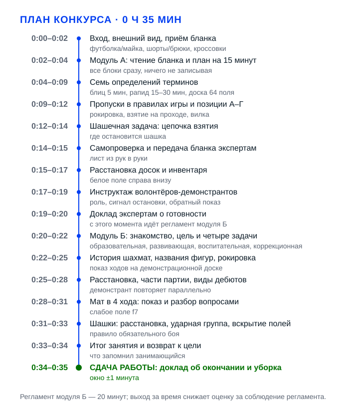
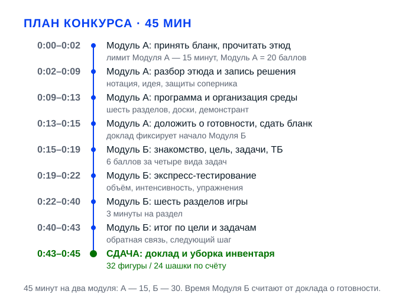
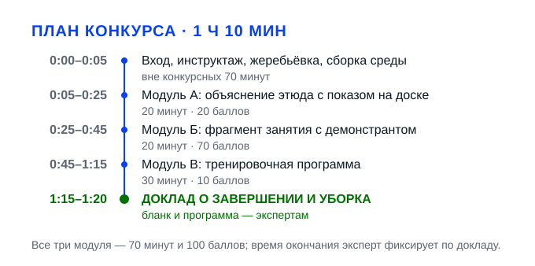

Инструктор по интеллектуальным видам спорта (Р)
Задания ниже — официальные файлы «Абилимпикс» (источник: abilympics-russia.ru), разложенные по категориям. Решения написаны по тексту задания, регламенту и критериям оценки; в них указано, что именно проверяет эксперт.
Школьник
14–16 лет, базовый уровень заданияВыдержка из официального конкурсного задания: страницы, относящиеся к категории «Школьник» (стр. 6–10 источника).
Пошаговое решение
Компетенция «Инструктор по интеллектуальным видам спорта» в категории «Школьники» — это 35 минут и 100 баллов: 15 минут и 20 баллов в модуле А, где заполняется бланк «Правила игры» и организуется среда занятия, и 20 минут с 80 баллами в модуле Б — само занятие перед экспертами. В бланке семь определений терминов, пропуски в правилах, четыре позиции А–Г на выигрыш ферзя или слона и шашечная задача про цепочку взятия; в занятии — история шахмат и шашек, фигуры и рокировка, расстановка, части партии, виды дебютов, мат в 4 хода, ударная группа шашек и вскрытие полей. Ниже задание разложено на задачи, действия и шаги: что делать, зачем это по критериям КЗ, как проверить результат, что обычно ломается и на что смотрит эксперт. Темп здесь важнее глубины: двадцать минут занятия проходят быстрее, чем кажутся, а баллы за цель, задачи и методическую стройность снимаются по ходу, а не в конце.

Задача 1. Заполнить бланк «Правила игры»Модуль А · 20 баллов · 15 минут
Модуль А — это письменная часть: эксперты выдают бланк с вопросами «Правила игры», в котором нужно дать определения семи терминам, дописать пропущенные по смыслу слова в формулировках правил и решить четыре позиции А–Г плюс шашечную задачу на цепочку взятия. На всё отведено 15 минут, и это единственный модуль, где ответ нельзя переделать: бланк уходит экспертам и обратно не возвращается. Двадцать баллов здесь делятся не по числу вопросов, а по критериям оформления и терминологии, поэтому половина успеха — это читаемый почерк, аккуратные строки и точные формулировки, а не догадки.
Действие 1.1. Принять бланк и разложить пятнадцать минут
Шаг 1.1.1
Получаем у экспертов бланк и читаем его целиком, от первой строки до последней, ничего пока не записывая. На это уходит минута-полторы, но именно они задают темп: в бланке семь определений терминов, блок пропусков в правилах игры, четыре позиции А–Г и шашечная задача про цепочку взятия, и пока не видно всех заданий сразу, невозможно решить, сколько времени оставить на каждое. Лист кладём перед собой ровно, ручку держим в рабочей руке, второй придерживаем бланк, чтобы он не съезжал по столу и буквы не расползались в конце строки.
Модуль А стоит 20 баллов и длится ровно 15 минут, при этом почти все потери здесь происходят не от незнания, а от спешки: участник начинает писать с первого вопроса, доходит до шашечной задачи за минуту до сдачи и оставляет её пустой. Критерий «Применение профессиональной терминологии» на 3 балла оценивает грамотность, обоснованность и своевременность формулировок, а они невозможны, если вопрос прочитан наполовину и отвечен наугад.
Проверьте, что просмотрены все блоки: определения, пропуски, позиции А, Б, В, Г и шашечная задача. Если формулировка какого-то вопроса непонятна, это повод уточнить у эксперта сразу, до начала отсчёта времени, а не в середине работы: вопросы по процедуре задавать можно, подсказки по содержанию — нет.
Типичная ошибка — начать с первого термина, не просмотрев бланк: потом выясняется, что в позициях А–Г нужно рисовать стрелки и записывать ход, а не писать слова, и время на них вычитается из проверки. Вторая ошибка — писать карандашом, рассчитывая стереть: на стирание уходит минута на строку, бланк пачкается, а балл за оформление уже не вернуть.
Эксперт фиксирует, просмотрел ли участник бланк целиком и уточнил ли процедурные моменты до старта: по этому первому движению видно, умеет ли он работать с заданием, а не только с ответом.
Шаг 1.1.2
Раскладываем пятнадцать минут по блокам и держим этот план в голове: пять минут на семь определений, три минуты на пропуски в правилах, четыре минуты на позиции А–Г и шашечную задачу, две минуты на самопроверку. Внутри блока идём по порядку номеров, не перескакивая: если термин не вспоминается, ставим короткую засечку на полях и возвращаемся к нему в конце, когда остальные ответы уже написаны.
Пятнадцать минут на двадцать баллов — это меньше минуты на вопрос, и без распределения времени участник почти всегда застревает на одном термине. Критерий «Общее впечатление» и «Применение профессиональной терминологии» вместе дают 4 балла, но заполненность бланка целиком важнее: пустая строка не приносит ни одного балла, а неточная формулировка всё же может быть зачтена частично.
К середине модуля у вас должно быть заполнено семь строк определений. Проверьте по часам на площадке или по своим ощущениям: если на определения ушло больше семи минут, остальные блоки надо проходить быстрее, а не бросать.
Застрять на термине и просидеть над ним шесть минут — самая дорогая ошибка модуля: три блока остаются пустыми, и теряется до 12 баллов. Вторая ошибка — идти по бланку вразнобой, от вопроса к вопросу, и в итоге дважды отвечать на один и тот же пункт.
Эксперт смотрит на динамику заполнения бланка: ровный темп по всем блокам читается как владение материалом, рывок в конце — как угадывание. Отдельно он отмечает, сколько строк заполнено к десятой минуте: ровный темп читается как владение материалом.
Шаг 1.1.3
Пишем печатными буквами, в отведённых строках, без сокращений и без знаков «и т.д.»: каждое определение — полное предложение, в котором назван сам термин и его существенное отличие. Если строка короткая, формулировку сокращаем не за счёт смысла, а за счёт вводных слов: вместо «это такая ситуация, когда, как правило, одна из сторон...» пишем «ситуация, в которой сильнейшая сторона не может избежать серии шахов».
Критерий «Применение профессиональной терминологии» прямо оценивает грамотность и обоснованность, поэтому ответ из трёх слов «укороченный контроль времени» эксперт зачтёт не полностью: в определении должны быть отличительный признак и границы явления. Печатные буквы нужны не для красоты — бланк читает человек, и неразборчивое слово он трактует не в вашу пользу.
Прочитайте свой ответ глазами эксперта: понятно ли из него, о чём речь, если убрать сам термин? Если после удаления термина определение подходит к трём разным понятиям, оно слишком общее и его нужно уточнить.
Писать «примерно», «где-то», «быстро» вместо точных чисел — типичная потеря балла: в блице контроль 5 минут, в рапиде 15–30, и именно цифры делают определение определением. Вторая ошибка — писать через край строки, так что ответ заезжает на соседний пункт.
Эксперт проверяет бланк после сдачи и оценивает формулировки по смыслу, а не по совпадению с эталоном: близкий по сути ответ зачитывается, если в нём есть отличительный признак.
Действие 1.2. Дать определения семи терминам
Шаг 1.2.1
Первый и второй термины — блиц и рапид — пишем подряд, чтобы разница была видна в двух соседних строках. Блиц: «молниеносная игра в шахматы с укороченным контролем времени, при котором каждому сопернику на всю партию даётся 5 минут». Рапид: «партия с укороченным лимитом времени на обдумывание — от 15 до 30 минут каждому на всю партию». В обоих определениях обязательно звучит «на всю партию»: именно этот признак отличает их от контроля времени на отдельный ход.
Оба термина стоят в бланке рядом, и эксперты сверяют границы: 5 минут — блиц, 15–30 — рапид, свыше 30 — классические шахматы. Путаница в числах читается как заученный, но не понятый материал, а весь блок определений идёт по критерию профессиональной терминологии на 3 балла, где грамотность и обоснованность формулировки оцениваются вместе.
Сверьте две строки между собой: числа не должны пересекаться, а слова «на всю партию» должны стоять в обеих. Если во второй строке написано «от 10 минут», граница размыта и ответ нужно поправить, пока в бланке есть место.
Написать «быстрая игра на время» без цифры — самая частая ошибка: под такое определение подходит и блиц, и пуля, и рапид, поэтому балл не ставится. Вторая ошибка — перепутать 5 и 15 минут местами, тогда оба ответа оказываются неверными.
Эксперт ищет в первой строке цифру 5, во второй — диапазон 15–30, и отдельно отмечает слова «на всю партию»: без них ответ считается частичным, даже если оба числа названы.
Шаг 1.2.2
Третий термин — вечный шах. Пишем: «Ситуация, в которой одна из сторон, как правило сильнейшая, не может избежать серии повторяющихся шахов от фигур соперника; партия чаще всего заканчивается ничьей после троекратного повторения позиции». Обязательно добавляем механизм: шахи повторяются, позиция возвращается к исходной, и защищающаяся сторона не может ни уйти от шаха, ни выиграть темп.
Вечный шах — единственный термин блока, у которого есть и определение, и правовое следствие: ничья при троекратном повторении. В КЗ это подчёркнуто отдельно, потому что участники часто описывают только «повторяющиеся шахи» и забывают, чем дело кончается. Критерий терминологии засчитывает ответ по наличию обоих элементов.
Проверьте, что в определении есть три части: кто спасается, чем именно (серией шахов) и результат (ничья после троекратного повторения). Мысленно примените его к партии: если формулировка не объясняет, почему сильная сторона не может выиграть, ответ неполный.
Ошибка — назвать вечным шахом любую серию шахов, даже когда король в итоге уходит: тогда определение теряет смысл. Вторая — написать, что партия заканчивается победой атакующей стороны, перепутав вечный шах с матовой атакой.
Эксперт смотрит, названо ли следствие — ничья после троекратного повторения: без него ответ считается описанием, а не определением. Формулировка без следствия читается как пересказ события, а не как определение термина.
Шаг 1.2.3
Четвёртый термин — вилка. По КЗ формулировка строгая: «Ход коня или пешки, после которого под боем оказываются две и более шахматные фигуры противника». Пишем именно так, не расширяя термин на ферзя и ладью: двойной удар ферзём называется иначе, и эксперты сверяют определение с официальной формулировкой. Если остаётся место, добавляем, что вилка работает, когда прикрыть можно только одну из атакованных фигур.
Вилка — самый практичный термин блока: позиции А–Г в этом же бланке решаются именно двойными ударами, и точное определение помогает не искать сложное там, где работает простое. Критерий терминологии требует, чтобы термин был назван точно, поэтому расширение на все фигуры снижает оценку.
Проверьте определение на примере: конь бьёт короля и ферзя одновременно — это вилка. Ферзь бьёт две ладьи — это двойной удар, но не вилка. Если ваша формулировка различает эти случаи, она верна. Мысленно подставьте в свою формулировку ферзя: он под неё попадать не должен.
Ошибка — написать «ход, при котором под боем две фигуры», пропустив коня и пешку: тогда под определение попадает и связка, и двойной удар. Вторая — добавить «любой фигурой», что прямо противоречит КЗ.
Эксперт сверяет ответ с формулировкой задания дословно по смыслу: конь или пешка плюс две и более фигуры — полный ответ. Отдельно он отмечает, что вилка — это двойной удар, а не связка и не нападение с темпом.
Шаг 1.2.4
Пятый термин — диагональ. Формулируем коротко и точно: «Поля шахматной доски одного цвета, находящиеся на одной линии». Поясняем, что диагонали бывают короткими и длинными, а самая длинная — от a1 до h8 и от h1 до a8, по 8 полей. Упоминание того, что цвет полей на диагонали не меняется, и есть суть определения.Если в бланке есть место под пример, называем самую длинную диагональ a1–h8 — восемь полей.
Диагональ — базовый термин, без которого нельзя объяснить ни действие слона, ни превращение пешки, ни шашечную игру на той же доске. В бланке он стоит в блоке определений, и эксперты проверяют именно признак «одного цвета»: ответ «линия из клеток» без цвета считается неполным.
Проверьте себя на доске: возьмите любое поле и проведите взглядом по обеим диагоналям. Если на вашем пути цвет клеток меняется, вы смотрите не на диагональ, а на горизонталь или вертикаль. Достаточно одной проверки на доске, чтобы увидеть разницу между диагональю и вертикалью.
Ошибка — назвать диагональю любую линию из клеток: тогда под определение попадают горизонтали и вертикали, и балл не ставится. Вторая — написать «поля одного цвета» и остановиться, не указав, что они на одной линии: тогда под ответ подходят несвязанные поля одного цвета.
Эксперт ищет оба признака — один цвет и одна линия: наличие обоих отмечается как полный ответ. Он проверяет, сказано ли, что цвет полей на диагонали не меняется, и приведён ли пример длинной диагонали.
Шаг 1.2.5
Шестой и седьмой термины — шахматная доска и зевок — самые короткие, и на них обычно не хватает времени, поэтому пишем их сразу после диагонали, не откладывая. Доска: «квадрат из 64 (восемь на восемь) одинаковых по размеру, попеременно расположенных светлых и тёмных клеток; светлые называют белыми полями, тёмные — чёрными». Зевок: «грубый просмотр, ошибка, результатом которой становится потеря фигуры либо пешки, чаще всего приводящая к проигрышу партии».
Доска связана с практикой модуля Б: там вы объясняете расстановку и правило «белое поле справа внизу», и без чисел 64 и 8×8 объяснение рассыпается. Зевок понадобится при разборе мата в 4 хода, где занимающийся зевает пункт f7, и термин нужен, чтобы назвать ошибку точно, а не «неудачным ходом».
Проверьте арифметику и признаки: восемь горизонталей на восемь вертикалей дают 64 поля, по 32 белых и 32 чёрных, а у зевка есть причина и следствие — просмотр и потеря материала. Если в ответе про доску нет числа полей, допишите его одной фразой.
Написать «доска с клетками двух цветов», не указав размер, — ошибка: под такое определение подходит и доска 10×10 для международных шашек. У зевка чаще теряют следствие: «необдуманный ход» без потери фигуры определением не является.
Эксперт проверяет числа 64 и 8×8 и чередование цветов, а у зевка — связку «просмотр — потеря фигуры или пешки»: по ней он отличает определение от простого описания.
Действие 1.3. Дополнить пропуски в правилах игры
Шаг 1.3.1
В блоке пропусков сначала читаем всё предложение целиком, а не отдельное слово: пропуск почти всегда подсказан соседними словами. Если речь о ходе шашки, вставляем то, что относится к движению: простая шашка ходит только вперёд на соседнее чёрное поле по диагонали, а бьёт и вперёд, и назад; дойдя до последней горизонтали, она становится дамкой и получает право ходить по диагонали на любое расстояние.
Пропуски проверяют не память, а понимание правил: в шашках три вещи постоянно путают — направление хода, направление боя и превращение в дамку. Именно на них строятся задания модуля Б про ударную группу и вскрытие полей, так что правильный ответ здесь экономит время при объяснении темы занимающемуся.
Проверьте вставку, подставив её в предложение и прочитав вслух: фраза должна звучать как правило, а не как описание. Если получается «шашка ходит назад», значит, перепутано направление боя и хода. Правило должно звучать как приказ: ходит вперёд, бьёт в обе стороны.
Ошибка — написать, что простая шашка бьёт только вперёд: тогда в позиции на взятие назад вы не увидите цепочку, и шашечная задача останется нерешённой. Вторая — забыть про превращение в дамку на последней горизонтали, из-за чего ответ про «где остановится шашка» станет неверным.
Эксперт читает вставку вместе с предложением: правило должно быть сформулировано так, чтобы по нему можно было играть. Он обращает внимание, названо ли превращение в дамку на последней горизонтали.
Шаг 1.3.2
Если пропуск касается рокировки, вписываем условия полностью: король и ладья ещё не ходили, между ними нет фигур, король не находится под шахом и не проходит через поле, которое пробивает соперник. Записываем и виды: короткая рокировка — в сторону королевского фланга, длинная — в сторону ферзевого, с перемещением короля на два поля и ладьи через него.
Рокировка — самый частый пропуск в бланках, потому что участники помнят само движение и забывают три запрета. В модуле Б это же правило нужно объяснять занимающемуся, и если формулировка хромает на бумаге, она прозвучит так же неуверенно перед экспертами.
Проверьте по трём вопросам: ходили ли фигуры, пусто ли между ними, не под шахом ли король и не бьётся ли поле, через которое он идёт. Если хотя бы один ответ «нет», рокировка в позиции невозможна, и в пропуске должно быть именно это ограничение.
Ошибка — написать только «король и ладья не ходили», забыв про пустое пространство и битые поля: получается разрешение на рокировку сквозь шах. Вторая — путать, что при длинной рокировке ладья перепрыгивает через два поля, а не через одно.
Эксперт сверяет три условия и оба вида: частичный ответ даёт частичный балл, но полного не даёт. Он проверяет и то, что участник различает короткую и длинную рокировку по флангам, а не по числу ходов.
Шаг 1.3.3
Дальше в пропусках идут особые случаи: взятие на проходе, превращение пешки и разница между матом и патом. Вписываем так: пешка, идущая с начальной позиции на два поля, может быть взята так, как если бы она прошла одно поле; пешка, дошедшая до последней горизонтали, превращается в любую фигуру своего цвета, кроме короля, причём выбирать можно и второго ферзя.
Эти три правила — те, на которых чаще всего ловят в позициях А–Г: незамеченное превращение меняет оценку позиции полностью, а взятие на проходе часто остаётся лишним взятием в решении. Критерий терминологии оценивает не только слова, но и точность правил в задачах бланка.
Проверьте формулировку на конкретном ходе: если белая пешка пошла с e2 на e4 мимо чёрной на d4, чёрная может взять её на d4 — и только сразу следующим ходом. Если в вашем ответе нет слова «сразу», правило сформулировано неверно.
Ошибка — разрешить взятие на проходе через ход: тогда в решении появляется лишний вариант и время уходит на проверку несуществующего взятия. Вторая — написать, что пешка превращается только в ферзя: по правилам выбор любой, кроме короля.
Эксперт ищет точные ограничения: «сразу следующим ходом» для взятия на проходе и «кроме короля» для превращения. Отдельно смотрится, указано ли «сразу следующим ходом» в правиле взятия на проходе.
Шаг 1.3.4
Последний пропуск обычно про обязательность взятия в шашках и правило боя. Вписываем: если взятие возможно, его нужно сделать, выбирая любой из доступных вариантов; бить свои шашки нельзя; начатое взятие доводят до конца, а простая шашка, дошедшая боем до последней горизонтали, становится дамкой и останавливается, тогда как дамка может продолжить бой по кругу.
Правило «бить обязательно и до конца» — основа шашечной задачи в этом же бланке: цепочка взятия строится именно на нём, и без него невозможно ответить, где остановится белая шашка. Кроме того, это правило вы будете объяснять в модуле Б, разбирая ударную группу.
Проверьте на цепочке: если после взятия открывается следующее взятие, шашка обязана его сделать. Если цепочка заканчивается на последней горизонтали — шашка встаёт там и превращается в дамку; если бой продолжается дальше, простая уже не может идти, а дамка может.
Ошибка — остановить бой на середине, «чтобы не подставиться»: по правилам это невозможно, и весь ответ по шашечной задаче рассыпается. Вторая — превратить простую шашку в дамку и продолжить ею бой в том же ходу, что запрещено.
Эксперт проверяет именно трактовку правила: обязательность взятия и остановку простой шашки на последней горизонтали. Ему важно, названо ли правило «бить обязательно» до того, как участник перешёл к цепочке взятий.
Действие 1.4. Решить позиции А–Г и шашечную задачу
Шаг 1.4.1
Позиция А: нужно сделать за чёрных ход, которым они выигрывают ферзя. Работаем по порядку: находим белого ферзя, считаем, сколько раз он защищён, и ищем фигуру, которая бьёт его или нападает так, что защита не помогает. Проверяем кандидатов по силе: сначала шахи и взятия, потом нападения с темпом, потом связки. Найденный ход записываем в бланк в шахматной нотации, а не словами, и рядом коротко поясняем, почему ферзь теряется.
Позиции А–Г — это четыре задания на двойной удар и связку, и они проверяют, умеет ли участник считать не вариант целиком, а материальный итог. Критерий терминологии требует грамотной записи: ход в нотации с указанием фигуры и поля читается экспертом однозначно, а запись «конём туда» не читается вовсе.
Проверьте решение обратным ходом: после вашего хода у белых не должно быть промежуточного шаха, взятия вашей фигуры или защиты ферзя. Если хотя бы одно из этого есть, ход не выигрывает ферзя, а только меняет фигуры.
Ошибка — найти нападение на ферзя и не проверить, защищён ли он: в позиции почти всегда есть защита, и вместо выигрыша ферзя участник отдаёт свою фигуру. Вторая — записать ход словами, из-за чего эксперт не может его проверить.
Эксперт смотрит на запись хода и на пояснение: правильный ход без обоснования зачитывается частично. Если запись хода нечитаема, он просит назвать ход вслух и сверяет его с бланком.
Шаг 1.4.2
Позиция Б: за белых нужно сделать ход ферзём, которым они нападут на чёрного слона, не попав при этом под удар. Здесь важен именно второй пункт: сначала находим все поля, с которых ферзь бьёт слона, а потом из них выбираем те, которые не пробиваются ни ферзём, ни слоном, ни конём соперника. Отбрасываем поля на одной линии с чёрным ферзём и поля, где наш ферзь окажется под боем пешки.
Формулировка «не попав под удар» — это ловушка задания: половина ошибок в позиции Б связана с тем, что нападение найдено, но ферзь поставлен под ответное взятие. Критерий оценки здесь тот же — правильность решения, и частичный ответ с подставленным ферзём не зачитывается.
Проверьте выбранное поле тремя взглядами: бьёт ли оттуда ферзь слона, пробито ли это поле хоть одной фигурой чёрных, есть ли у чёрных промежуточный шах. Все три ответа должны быть «да, нет, нет». Достаточно одного взгляда по трём направлениям: диагональ, вертикаль, линия коня.
Ошибка — поставить ферзя на диагональ, которую простреливает чёрный слон: нападение есть, но ферзь теряется, и задание не выполнено. Вторая — записать ход, с которого ферзь вообще не достаёт до слона, перепутав диагонали.
Эксперт проверяет именно двойное условие задачи: нападение и безопасность поля. Он проверяет и обоснование: фраза «ферзь бьёт слона и сам не под боем» должна прозвучать в ответе.
Шаг 1.4.3
Позиция В: за чёрных нужно выиграть белого слона. Механика та же, что в позиции А, но объект другой, поэтому сначала считаем, сколько защитников у слона и сколько нападающих может собрать чёрная сторона. Если защитников больше, ищем не прямое нападение, а связку или двойной удар, после которого защита не успевает. Ход записываем в нотации и добавляем одну фразу обоснования.
В позиции В проверяется умение считать соотношение сил, а не угадывать: если у слона два защитника, прямое нападение одной фигурой ничего не даёт, и правильным решением становится удар по защитнику или связка. Это ровно та логика, которую вы потом объясняете занимающемуся в модуле Б, разбирая мат в 4 хода.
Проверьте арифметику: после вашего хода у чёрных должно быть на одного нападающего больше, чем защитников у слона, либо защитник должен быть связан. Если после размена сторон слон остаётся защищённым, решение неверное.
Ошибка — бить слона, не посчитав защитников, и терять на размене больше, чем приобретать. Вторая — путать слона с ладьёй при записи хода, из-за чего эксперт видит другой ход. Обе ошибки видны по записи хода, даже если само решение в целом верное.
Эксперт проверяет не только ход, но и счёт материала в обосновании: «бьём, потому что защитников меньше» — правильное пояснение. Он также смотрит, не перепутаны ли фигуры при записи: слон и ладья в нотации различаются одной буквой.
Шаг 1.4.4
Позиция Г: за белых нужно выиграть чёрного ферзя. Это самая многофигурная позиция блока, поэтому работаем не перебором всех ходов, а поиском форсированных вариантов: сначала проверяем шахи, которые заставляют чёрных отвечать единственным ходом, потом взятия и только потом тихие нападения. Если находится вилка конём, считаем, какую из двух фигур чёрные прикроют, и убеждаемся, что второй удар всё равно забирает ферзя.
Позиция Г проверяет то же умение, что и вся серия, но на большем числе фигур: умение отсекать варианты, а не перебирать их. В модуле Б этот навык понадобится при разборе мата в 4 хода, где тоже есть только один форсированный порядок ходов. Кроме того, так работает любая комбинация на вилку, а не только эта позиция.
Проверьте, что первый ход форсирован: у чёрных не должно быть выбора, кроме как отвечать на угрозу. Если после вашего хода у соперника есть спокойный защитительный ход, выигрыша ферзя нет. Иначе выигрыш ферзя не форсирован, и решение считается неполным.
Ошибка — начинать с тихого нападения и давать чёрным темп на защиту или контрудар. Вторая — считать вариант на два хода и не проверять, что происходит после третьего. Обе ошибки дают красивый ход без результата, а эксперта интересует именно результат.
Эксперт смотрит на порядок ходов: Форсированный выигрыш он отличает от «повезло» по первому ходу решения. Он просит назвать первый ход вслух и проверяет, форсирован ли он.
Шаг 1.4.5
Шашечная задача в бланке сформулирована вопросом: где остановится белая шашка и сможет ли она уничтожить все чёрные. Решаем строго по правилу боя: начинаем с шашки, у которой есть взятие, ведём цепочку по диагоналям, каждый раз проверяя, открывается ли следующее взятие, и записываем поля по порядку. Отдельно отмечаем момент, когда шашка доходит до последней горизонтали: простая там останавливается, даже если бой можно продолжить.
Это единственная позиция бланка, где ответ зависит не от расчёта, а от знания правила: цепочка может насчитывать четыре-пять взятий, и всё решает то, на каком поле шашка превращается в дамку. Ошибка здесь стоит балла, а объяснение этого приёма — уже готовый фрагмент модуля Б про ударную группу.
Проверьте цепочку дважды: сначала вперёд, записывая поля, потом назад от последнего поля к первому. Если при обратном проходе шашка «перепрыгивает» через занятое поле, значит, ошибка в последовательности, а не в правиле.
Ошибка — остановить бой, когда шашка оказалась под возможным ответным ударом: по правилам бой обязателен и доводится до конца. Вторая — превратить шашку в дамку и продолжить взятие, чего простая шашка делать не может.
Эксперт проверяет последовательность полей и поле остановки: верная цепочка без указания поля остановки зачитывается частично. Ему важно, что поле остановки указано отдельно от последнего взятого поля.
Действие 1.5. Проверить бланк и передать экспертам
Шаг 1.5.1
На самопроверку оставляем две минуты и проходим бланк сверху вниз по чек-листу: все ли строки заполнены, нет ли двух ответов в одной строке, читаются ли печатные буквы, нет ли пометок на полях, которые эксперт примет за ответ. Отдельно проверяем числа: 5 минут у блица, 15–30 у рапида, 64 поля у доски — именно они чаще всего перепутаны местами.На вычитку уходит не больше двух минут, но именно они возвращают потерянные баллы.
Проверка — это не формальность: в модуле А двадцать баллов распределены по критериям оформления и терминологии, и незаполненная строка или число, написанное в спешке, стоят дороже, чем неточная формулировка. Две минуты на вычитку возвращают больше баллов, чем две минуты на ещё один вариант решения.
Проверьте тремя движениями: пройдите бланк глазами сверху вниз, затем прочитайте вслух свои определения и, наконец, сверьте числа в ответах с заданием. Если после третьего прохода находится ошибка, у вас ещё есть время её исправить.
Ошибка — сдавать бланк сразу после последнего ответа, не перечитав: в спешке остаётся пропущенная строка или ответ не на тот вопрос. Вторая — исправлять ответ зачёркиванием и стрелками: эксперт видит две версии и чаще всего не зачитывает ни одну.
Эксперт оценивает бланк после сдачи, но по помаркам видит, проверял ли участник работу: аккуратные исправления в одну линию читаются как вычитка. Отдельно он отмечает, нет ли на бланке посторонних пометок и стрелок на полях.
Шаг 1.5.2
Сдаём бланк по процедуре: подходим к экспертам, называем свой номер или фамилию, кладём лист на стол той стороной, где стоит номер, и ждём, пока эксперт его примет и отметит. Не кладём бланк на край стола и не уходим молча: при пачке одинаковых листов потерянный бланк восстановить невозможно, и модуль будет оценён как несданный.Если бланк нужно подписать, подписываем заранее, а не в момент передачи.
Порядок передачи — часть организационного критерия: в КЗ результат модуля А описан словами «заполненный бланк передаётся экспертам», то есть важен сам факт передачи из рук в руки, а не оставленный на столе лист. Кроме того, спокойная процедура сдачи экономит время на переход к модулю Б.
Проверьте, что бланк принят: эксперт взял лист, отметил номер в ведомости и кивнул или назвал вас. Если бланк остался на столе без внимания, скажите об этом сразу. Дождитесь, пока эксперт уберёт лист в папку с работами.
Ошибка — оставить бланк на столе и уйти готовить площадку: лист может уехать в стопку чужих работ. Вторая — сдавать бланк после начала модуля Б, когда время уже пошло на другое задание. В обоих случаях модуль оценивается как несданный, и восстановить работу нельзя.
Эксперт фиксирует время сдачи: бланк, переданный после сигнала, оценивается по фактическому времени, а не по вашему ощущению. Он отмечает и то, назван ли участник по номеру, а не фразой «здравствуйте, это я».
Задача 2. Организовать среду для занятияМодуль А · 11 баллов из 20 · вход в модуль Б
Второй блок работы встроен в модуль А и идёт сразу после бланка: по КЗ участник не только отвечает на вопросы, но и «организует среду для проведения занятия». Это расставленные доски, разложенный инвентарь, проинструктированные волонтёры-демонстранты и собственный внешний вид — футболка или майка, шорты или брюки, кроссовки. На эти критерии в модуле А приходится 11 баллов из 20: 3 за внешний вид, 3 за форму взаимодействия с демонстрантами, 3 за методические указания для них и 2 за размещение досок и инвентаря. Среду готовят до сигнала о начале модуля Б, потому что потом каждая переставленная доска съедает время занятия.
Действие 2.1. Расставить доски и разложить инвентарь
Шаг 2.1.1
Расставляем игровые доски так, чтобы каждый занимающийся сидел за своей доской лицом к вам, а вы стояли в точке, откуда видно все доски одновременно и при этом не загораживаете свет. Доску кладём перед занимающимся строго горизонтально, белое поле справа внизу, расстояние между досками — не меньше вытянутой руки, чтобы при показе хода вы не задевали соседнюю партию. Свет должен падать сбоку или спереди, но не в глаза: от настольной лампы сзади на доске появляются блики, и поля читаются хуже.
Критерий «Правильность размещения игровых досок, целесообразность размещения инвентаря и оборудования на площадке» стоит 2 балла, и оценивают его глазами, до начала занятия. Неверно положенная доска (белое поле слева внизу) — это ошибка, которую эксперт видит с первого шага, потому что от неё зависит вся дальнейшая расстановка фигур и объяснение правила «ферзь любит свой цвет».
Проверьте каждую доску по двум признакам: белое поле справа внизу и свет не бьёт в глаза занимающемуся. Потом отойдите на два шага и посмотрите на площадку целиком: если доски стоят не по линии и вы задеваете их при ходьбе, расстановку надо поправить.
Типичная ошибка — разложить доски как попало, «чтобы поместились», и встать между ними: при показе хода вы закрываете доску корпусом, и эксперт фиксирует, что объяснение шло без наглядности. Вторая ошибка — поставить доску под настольную лампу так, что половина полей бликует, — занимающийся не видит ваших ходов.
Эксперт оценивает расстановку до начала модуля Б, обходя площадку: ровная линия досок, читаемость полей и свободный проход между ними — три вещи, на которые он смотрит.
Шаг 2.1.2
Раскладываем комплекты: в каждой коробке фигуры расставлены по порядку, шашки лежат стопками по двенадцать, рядом стоят шахматные часы с выставленным контролем, а на краю стола — чистые бланки и ручка для записи. Проверяем комплектность: два короля, один ферзь, две ладьи, два слона, два коня и восемь пешек на каждую сторону; в шашках — по двенадцать шашек, и ни одной лишней, потому что лишняя шашка в позиции ломает всю задачу.
Критерий целесообразности размещения инвентаря оценивается вместе с досками — 2 балла, но практическая цена выше: если фигуры лежат в беспорядке, первые две минуты занятия уходят на поиск недостающей пешки, а занятие длится всего 20 минут. Комплектность — это ещё и техника безопасности: мелкие фигуры, рассыпанные по полу, становятся причиной падений на площадке.
Проверьте каждый комплект счётом: 16 фигур на сторону в шахматах и 12 шашек у каждого игрока. Часы выставьте и проверьте кнопку: она должна переключаться без заеданий, иначе во время показа партии вы потеряете время на её ремонт.
Ошибка — оставить фигуры в коробке «до начала занятия»: потом вы тратите время модуля Б на раскладку, а эксперт видит неподготовленную среду. Вторая — не проверить часы и обнаружить, что они не идут, уже во время объяснения контроля времени.
Эксперт проверяет комплектность и готовность инвентаря до старта: считает фигуры на одной доске и смотрит, лежат ли запасные в отведённом месте. Комплектность он проверяет выборочно, на одной доске, но смотрит при этом на все.
Шаг 2.1.3
Готовим место инструктора: демонстрационную доску на уровне глаз занимающихся, указку или деревянную линейку для показа полей, лист с планом занятия и ручку. Свой стул ставим так, чтобы сидеть сбоку от демонстрационной доски, а не спиной к ней, и чтобы занимающийся видел одновременно и доску, и вас. Всё лишнее — сумки, бутылки, бумаги — убираем со стола в отдельную зону за площадкой.
Порядок на столе инструктора — это часть критерия целесообразности размещения инвентаря и одновременно условие для критерия «Методическая стройность»: когда план лежит перед глазами, вы не теряете последовательность частей занятия. Демонстрационная доска на уровне глаз нужна потому, что при показе мата в 4 хода занимающийся должен видеть поле целиком, а не снизу.
Проверьте три вещи: демонстрационная доска видна с места занимающегося, вы дотягиваетесь до любого поля указкой без перешагивания, на столе нет ничего, что можно уронить. Если приходится наклоняться к доске — переставьте её выше.
Ошибка — поставить демонстрационную доску на стол и показывать сверху вниз, закрывая фигуры ладонью: занимающийся не видит половину ходов. Вторая — держать план занятия в телефоне: постоянные взгляды в экран эксперт читает как неуверенность и потерю контакта с аудиторией.
Эксперт смотрит, куда участник кладёт план и как располагается относительно демонстрационной доски: поза инструктора входит в критерий коммуникативных навыков.
Действие 2.2. Проинструктировать волонтёров-демонстрантов
Шаг 2.2.1
Объясняем демонстранту его роль коротко и по пунктам: он изображает занимающегося ребёнка, садится за доску, играет белыми, делает ходы, которые вы называете, и отвечает на вопросы так, как ответил бы начинающий. Отдельно проговариваем, чего делать нельзя: подсказывать, спорить, переставлять фигуры без команды и уходить с места. Договариваемся о сигнале, по которому он останавливается, — например, поднятая рука инструктора.
Критерий «Целесообразность использования формы взаимодействия с демонстраторами» стоит 3 балла и оценивает доступность, наглядность и рациональное сочетание методов объяснения. Всё это видно только тогда, когда демонстрант понимает свою роль: если он начинает играть сам, занятие превращается в партию и методическая линия рассыпается.
Проверьте понимание сразу: попросите демонстранта повторить двумя фразами, что он делает и чего не делает. Если он говорит «играю с вами», роль понята неверно — уточните, что играете не вы двое, а он и вы по очереди объясняете ученику.
Ошибка — махнуть рукой и сказать «просто сиди и повторяй»: демонстрант начинает подсказывать или двигать фигуры, и эксперт фиксирует отсутствие методических указаний. Вторая — не договориться о сигнале остановки, из-за чего фрагмент выходит за 20 минут.
Эксперт присутствует при инструктаже и слушает формулировки: наличие указаний и их понятность — то, что он отмечает в этом критерии. Он слушает и саму формулировку роли: демонстрант изображает занимающегося, а не соперника.
Шаг 2.2.2
Даём демонстранту методические указания по ходу занятия: куда смотреть (на доску, а не на экспертов), как держать руки (на столе, не на фигурах), как отвечать на наводящий вопрос (сначала своими словами, потом повторить правильную формулировку), как показывать ошибку (не переставлять фигуру молча, а спросить, что изменилось). Проговариваем и то, как он реагирует на похвалу и на разбор: кивает и повторяет, не оправдывается.
Критерий «Наличие методических указаний для демонстрантов, обеспечивающих необходимую помощь при формировании игровых действий» стоит 3 балла и требует именно корректировки по ходу выполнения и объяснения с демонстрацией. Инструкция заранее — это то, что отличает подготовленное занятие от импровизации: демонстрант работает как партнёр, а не как помеха.
Проверьте указания на конкретике: в них должны быть действия, а не качества. «Будь внимательным» — не указание, «держи руки на столе и не двигай фигуры, пока я не назову ход» — указание. Если в вашей инструкции больше трёх общих слов, перепишите её себе на лист плана.
Ошибка — дать инструкцию один раз в общем виде и надеяться, что демонстрант всё запомнил: к середине занятия он начинает поправлять фигуры сам, и наглядность ломается. Вторая — говорить с демонстрантом громче, чем с аудиторией, и превращать инструктаж в замечания.
Эксперт слушает, как участник распределяет роли и что именно говорит демонстранту до старта: наличие указаний он проверяет по факту, а не по обещаниям.
Шаг 2.2.3
Прогоняем короткий обратный показ на 30–40 секунд: просим демонстранта занять место, положить руки на стол, назвать своё имя и сделать первый ход по вашей команде. Этого хватает, чтобы увидеть, понял ли он роль, и заодно проверить, удобно ли расставлены доска и стулья. Если что-то не так — поправляем сейчас, а не во время занятия.Если демонстрант не знает, как ходит конь, покажите ход один раз и попросите повторить.
Обратный показ — самый быстрый способ убедиться, что среда работает: он закрывает сразу три критерия модуля А — форму взаимодействия с демонстрантами, наличие методических указаний и правильность размещения досок. Кроме того, 30 секунд репетиции снимают половину волнения на старте, и первые слова занятия звучат ровнее.
Проверьте по трём признакам: демонстрант сел за доску сам, руки на столе, ход делает по команде и называет поле вслух. Если он тянется к фигурам до команды, роль не закреплена — повторите указание ещё раз.
Ошибка — пропустить показ ради экономии времени: на первом же ходу выясняется, что демонстрант играет за чёрных или не знает, как ходит конь. Вторая — превратить показ в полноценную партию и потратить на него три минуты модуля.
Эксперт замечает подготовительный прогон и оценивает его результат: слаженность на старте занятия он относит к организации среды. Прогон он относит к организации среды, а не к содержанию занятия: время на него есть.
Действие 2.3. Проверить внешний вид и доложить о готовности
Шаг 2.3.1
Приводим себя в порядок по требованиям КЗ: футболка или майка без кричащих надписей, шорты или брюки, кроссовки, аккуратная причёска, руки чистые, ногти короткие. Одежда должна быть по размеру и не мешать движению: длинная футболка цепляется за доску, широкий рукав смахивает фигуры. Волосы, если они длинные, убираем назад, чтобы не падали на доску при наклоне над демонстрационной доской.
Критерий «Соответствие внешнего вида участника: футболка/майка, шорты/брюки, кроссовки» стоит 3 балла, и в нём прямо названы опрятность, комбинаторность и ассоциативность. Практическая сторона не менее важна: инструктор по интеллектуальному виду спорта работает руками у доски, и свободная одежда постоянно сбивает фигуры во время показа.
Проверьте себя по трём пунктам, которые легко оценить со стороны: обувь закрытая и спортивная, одежда чистая и по размеру, причёска не закрывает лицо. Попросите демонстранта посмотреть на вас со спины — спина и воротник видны только со стороны.
Ошибка — прийти в джинсах или в обуви не по требованиям, рассчитывая, что «это же не спорт»: критерий формальный, и 3 балла снимаются независимо от качества занятия. Вторая — надеть футболку с крупной надписью или логотипом: на фотоотчёте это читается как небрежность.
Эксперт оценивает внешний вид до старта и изредка возвращается к нему в конце, отмечая, осталась ли одежда опрятной после работы с досками. Кроссовки он проверяет отдельно: обувь не по требованиям видна с первого взгляда.
Шаг 2.3.2
Докладываем экспертам о готовности одной фразой и по форме: «Участник номер такой-то, площадка к выполнению задания готова». Доклад делаем стоя, глядя на главного эксперта на площадке, после того как доски расставлены, инвентарь разложен, демонстрант проинструктирован. После доклада возвращаемся на своё место и ждём сигнала — по площадке не ходим и ничего не переставляем.
Готовность площадки — это последний момент, когда ещё можно что-то исправить: после доклада начинается отсчёт модуля Б, и любая перестановка идёт за счёт двадцати минут занятия. Чёткий доклад входит в критерий коммуникативных навыков и в общее впечатление, а невнятное бормотание читается как неуверенность инструктора.
Проверьте, что доклад услышан: эксперт кивнул, сделал отметку в протоколе или назвал время старта. Если реакции нет, повторите фразу чуть громче, но не переходите к занятию самовольно. Достаточно кивка или отметки в протоколе, чтобы считать доклад принятым.
Ошибка — начать занятие без доклада: эксперт не фиксирует время старта, и весь фрагмент может быть оценён как вышедший за регламент. Вторая — доложить о готовности до того, как разложен инвентарь, и потом суетливо искать фигуры при экспертах.
Эксперт отмечает время доклада в протоколе: именно от него считается регламент модуля Б — 20 минут. Он же сверяет время доклада с началом отсчёта: расхождение больше минуты фиксируется.
Задача 3. Провести фрагмент занятия по шахматамМодуль Б · 80 баллов · 20 минут
Модуль Б — это само занятие: 20 минут, 80 баллов из 100, и здесь оценивают не ответы на бумаге, а работу инструктора перед аудиторией. По КЗ фрагмент должен содержать историю возникновения шахмат, названия фигур и правил их хода вместе с рокировкой, первоначальную расстановку, части партии, виды дебютов и ознакомление с матом в 4 хода. Критерии расписаны подробно: цель — 4 балла, формулировка четырёх задач, соответствие содержания возрасту и подготовленности, методическая стройность, владение техникой показа, контроль нагрузки, техника безопасности, логичность завершения и регламент. Именно поэтому занятие строится по жёсткому плану, где на каждый блок отведены минуты, а не «сколько получится».
Действие 3.1. Начать занятие: знакомство, цель и задачи
Шаг 3.1.1
Начинаем с приветствия и знакомства: называем себя, спрашиваем имя демонстранта, уточняем, играл ли он раньше в шахматы и знает ли, как ходят фигуры. Садимся не напротив, а сбоку от доски, чтобы занимающийся видел и вас, и поле; руки кладём на стол, корпус чуть наклоняем к доске. Первые тридцать секунд говорим медленно и смотрим в лицо, а не в план: контакт устанавливается именно в этот момент.
Критерий «Демонстрация коммуникативных навыков» на 3 балла оценивает вербальные и невербальные средства — визуальный контакт, позу, жесты, мимику, а также умение задавать наводящие вопросы. Знакомство нужно и практически: от ответа про прежний опыт зависит, каким языком объяснять правила, — новичку нужны названия фигур, а тому, кто уже играл, — сразу части партии.
Проверьте по двум признакам: вы знаете имя занимающегося и его уровень, а он слышал ваше имя и понял, что сейчас будет занятие, а не экзамен. Если демонстрант молчит и смотрит в сторону, сделайте паузу и задайте вопрос ещё раз, проще.
Ошибка — начать сразу с теории, не поздоровавшись: эксперт фиксирует отсутствие контакта с аудиторией, а положительно-эмоциональный отклик целевой аудитории (2 балла) уже не появится. Вторая — говорить с демонстрантом как с младшим, скороговоркой, не давая ответить.
Эксперт слушает первые фразы и смотрит на позу: наклон к доске, взгляд на собеседника и пауза после вопроса — то, что он отмечает в критерии коммуникации.
Шаг 3.1.2
Объясняем демонстранту, как строится занятие, и договариваемся о форме обратной связи: «я показываю ход на доске, ты повторяешь его на своей; если что-то непонятно — поднимаешь руку, я спрашиваю первым, а не ты». Проговариваем и правило ошибки: ошибочный ход не переставляем молча, а разбираем — что было под боем и что ты не заметил. Это задаёт темп и снимает у занимающегося страх ошибиться.
Критерий «Наличие методических указаний для демонстрантов» и критерий контроля за нагрузкой оценивают именно это: понятно ли занимающемуся, что от него ждут, и умеет ли инструктор корректировать его по ходу. Договорённость об ошибке работает ещё и на положительно-эмоциональный отклик — 2 балла, которые ставятся за реакцию аудитории.
Проверьте, что демонстрант подтвердил договорённость: кивнул, повторил правило про поднятую руку или сам задал вопрос. Молчание в ответ не считается подтверждением — переспросите одной короткой фразой.
Ошибка — объявить правила и сразу перейти к материалу, не убедившись, что они услышаны: на третьем ходу демонстрант начинает переставлять фигуры сам. Вторая — запретить ошибки словами «неправильно, так нельзя», после чего занимающийся замолкает и перестаёт отвечать.
Эксперт отмечает, даёт ли участник инструкции по ходу и как реагирует на ошибку демонстранта: реакция входит в критерий коммуникативных навыков. Он смотрит, слышит ли демонстрант договорённость о сигнале остановки.
Шаг 3.1.3
Формулируем цель занятия одной фразой и привязываем её к условиям конкурсного задания: «Цель занятия — обучить основам шахматной игры и познакомить с матом в четыре хода, чтобы занимающийся мог самостоятельно разыграть дебют и увидеть простейшую матовую угрозу». Цель произносим до начала объяснения, не торопясь, и следим, чтобы в ней были три элемента: что делаем, для чего и какой результат считается достигнутым.
Критерий «Соответствие представленной цели тренировки условиям конкурсного задания» стоит 4 балла — это самый весомый отдельный пункт модуля Б после содержания. Формулировка «провести занятие по шахматам» цель не заменяет: в ней нет ни результата, ни связи с заданием, и эксперт отмечает её как общую.
Проверьте цель на достижимость в 20 минут: если из неё следует, что к концу занятия занимающийся должен освоить три дебюта, цель нереалистична и её надо сузить. Хорошая цель проверяется вопросом «как я узнаю, что она достигнута» и имеет конкретный ответ.
Ошибка — сформулировать цель после занятия, в итоговой части: тогда все предыдущие блоки оказываются без цели, и 4 балла не ставятся. Вторая — сделать цель неподъёмной и не выполнить её, что видно по итоговой части и по реакции занимающегося.
Эксперт записывает цель дословно и сверяет её с КЗ: соответствие по содержанию и по формату — два условия, по которым он ставит балл. Он также слушает, не заменена ли цель перечислением тем занятия.
Шаг 3.1.4
Ставим четыре задачи, назвав каждую своим термином: образовательная — знать названия фигур и их ходы, уметь расставить начальную позицию и разыграть мат в 4 хода; оздоровительно-развивающая — тренировать внимание и счёт вариантов при разборе позиции; воспитательная — формировать уважение к сопернику и умение спокойно разбирать свою ошибку; коррекционно-профилактическая — развивать зрительно-пространственное восприятие при работе с доской.
Критерий «Соответствие формулировки задач (образовательная, оздоровительно-развивающая, воспитательная, коррекционно-профилактическая) условиям конкурсного задания и представленной цели» прямо перечисляет четыре вида задач, и эксперты проверяют, названы ли все. Пропуск любого вида — это потеря балла, даже если сама задача на занятии решалась.
Проверьте, что каждая задача начинается с глагола и указывает наблюдаемый результат: «знать», «уметь», «тренировать», «формировать». Если задача звучит как тема («история шахмат»), это не задача, а раздел материала — переформулируйте.
Ошибка — перечислить задачи одним предложением через запятую, без названий видов: эксперт не может разложить их по критерию и считает формулировку неполной. Вторая — назвать четыре вида, но не связать их с целью, из-за чего занятие распадается на несвязанные куски.
Эксперт сверяет названия задач с перечнем в КЗ и следит, реализуются ли они по ходу: задача, названная и забытая, балла не приносит. Он отмечает и порядок: образовательная задача звучит первой не случайно.
Действие 3.2. Показать историю, фигуры, рокировку и расстановку
Шаг 3.2.1
Рассказываем историю коротко и с датами: шахматы возникли в Индии около VI века как игра чатуранга, оттуда пришли в Персию, где получили название шатрандж, а в Европе к XV веку сложились современные правила — ферзь и слон стали дальнобойными. На всё отводим полторы-две минуты и обязательно показываем ладонью на доску, когда говорим о полях и фигурах, чтобы рассказ не превратился в лекцию без наглядности.
В КЗ история возникновения шахмат стоит первым пунктом модуля Б с пометкой, что участник должен уметь «доступно и увлекательно донести знания до занимающихся». Увлекательность — не украшение: она создаёт тот самый положительно-эмоциональный отклик, за который дают 2 балла, а факты с датами проверяются по критерию владения содержанием.
Проверьте по реакции: демонстрант смотрит на вас, а не в стол, и к концу рассказа может назвать одно-два слова — Индия, чатуранга, шатрандж. Если он не запомнил ничего, рассказ был слишком длинным или слишком абстрактным.
Ошибка — пересказывать историю пять минут и съесть время у мата в 4 хода: регламент модуля Б — 20 минут, и хронометраж проверяется отдельным критерием. Вторая — называть выдуманные даты и страны: эксперты знают материал и фиксируют фактические ошибки.
Эксперт слушает рассказ на предмет трёх фактов — Индия, чатуранга, шатрандж — и смотрит, поддерживается ли контакт с аудиторией во время рассказа. Затянутый рассказ он отмечает как потерю регламента, даже если факты верны.
Шаг 3.2.2
Переходим к фигурам: называем каждую по порядку — король, ферзь, ладья, слон, конь, пешка — и показываем ход на демонстрационной доске. Проговариваем главное: король ходит на одно поле в любую сторону, ферзь — по вертикали, горизонтали и диагонали на любое расстояние, ладья — по вертикали и горизонтали, слон — только по диагонали, конь — буквой «г», пешка — вперёд на одно поле и бьёт по диагонали.
Названия фигур — второй пункт модуля Б, и здесь оценивают правильность наименования и знание правил игры. Ошибка в названии («королева» вместо «ферзя», «офицер» вместо «слона») сразу читается как слабое владение терминологией, а оно идёт по критерию содержания — 6 баллов.
Проверьте себя вопросом к демонстранту после каждой фигуры: «покажи, куда может пойти слон с этого поля». Если он показывает верно, объяснение работает; если нет — повторите показ, а не переходите к следующей фигуре.
Ошибка — называть фигуры списком, не показывая ходы: занимающийся запоминает слова, но не видит движения. Вторая — путать ход коня и слона при показе, из-за чего демонстрант повторяет ошибку и дальше не понимает расстановку.
Эксперт следит за показом: каждое название должно быть сопровождено движением фигуры по доске, иначе наглядность считается необеспеченной. Ошибку в названии фигуры он фиксирует отдельно от ошибки в показе хода.
Шаг 3.2.3
Объясняем рокировку как особый ход: король и ладья перемещаются одновременно, король идёт на два поля, ладья встаёт рядом с ним. Показываем оба вида — короткую и длинную — и проговариваем три условия: ни король, ни ладья ещё не ходили, между ними нет фигур, король не под шахом и не проходит через битое поле. Даём демонстранту самому сделать рокировку на своей доске.
Рокировка названа в КЗ отдельно, в одном пункте с названиями фигур, и это самая частая точка потери баллов: участники показывают движение, но забывают условия. Кроме того, рокировка связана с темой дебюта — именно она вводит ладью в игру и обеспечивает безопасность короля, о чём пойдёт речь в блоке про части партии.
Проверьте по действию: демонстрант сделал рокировку сам, не подсказывая себе вслух, и правильно поставил ладью. Затем задайте контрольный вопрос: «можно ли рокировать, если ладья уже ходила?» — ответ «нет» означает, что условие понято.
Ошибка — показать только короткую рокировку, забыв длинную: в критерии содержания это неполное раскрытие темы. Вторая — показать рокировку через битое поле как допустимую, что является прямой ошибкой правил.
Эксперт проверяет оба вида рокировки и проговаривание условий: без них пункт считается раскрытым частично. Кроме того, он смотрит, показана ли рокировка в обе стороны на доске, а не только названа.
Шаг 3.2.4
Расставляем начальную позицию на демонстрационной доске и одновременно просим демонстранта повторить на своей: ладьи в углах, кони рядом с ними, слоны дальше, ферзь на поле своего цвета, король рядом с ферзём, восемь пешек вторым рядом. Проговариваем правило «ферзь любит свой цвет»: белый ферзь встаёт на белое поле d1, чёрный — на чёрное d8. Проверяем каждую линию вслух, а не показываем молча.
Первоначальная расстановка — третий пункт модуля Б, и в КЗ отдельно указано, что участник должен уметь объяснить важность гармоничного развития фигур в партии. Расстановка без этого объяснения превращается в механическое повторение, и критерий содержания (6 баллов) не закрывается полностью.
Проверьте расстановку по трём контрольным точкам: ферзи на своих цветах, короли напротив друг друга по вертикали «e», все восемь пешек на второй и седьмой горизонталях. Если демонстрант поставил ферзя не на свой цвет, поправьте вместе с ним, а не молча.
Ошибка — расставить фигуры самому, а демонстранту предложить просто смотреть: тогда навык не формируется, и критерий техники выполнения действий не набирается. Вторая — поставить короля и ферзя зеркально, перепутав поля d1 и e1, из-за чего вся дальнейшая партия разбирается неверно.
Эксперт смотрит на руки участника у доски и на то, работает ли демонстрант параллельно: параллельная расстановка — признак методической стройности. Параллельная работа демонстранта — то, что он ищет в первую очередь.
Шаг 3.2.5
Объясняем три части партии и сразу переходим к видам дебютов, потому что дебют и есть первая часть: дебют — первые 10–15 ходов с развитием фигур и безопасностью короля, миттельшпиль — середина с тактической борьбой за линии, эндшпиль — окончание, где на первый план выходят король и пешки. Затем показываем по одному примеру: открытые дебюты начинаются ходами 1.e4 e5, полуоткрытые — 1.e4 с любым ответом, кроме e5, закрытые — 1.d4 d5, полузакрытые — 1.d4 с другим ответом. Каждый пример ставим фигурами и называем первый ход вслух: разницу надо слышать в позиции, а не в определении.
Части партии — четвёртый пункт модуля Б, виды дебютов — пятый, и критерий «Соответствие содержания демонстрируемого задания условиям конкурсного задания» на 6 баллов требует назвать и то, и другое. Объединять их в объяснении выгодно и по времени: дебют — это часть партии, поэтому переход от общего деления к классификации дебютов не требует новой темы, и на всё уходит около трёх минут вместо пяти.
Проверьте двумя вопросами к демонстранту: «если фигуры не развиты, а король в центре — какая это часть партии?» и «как называется дебют, начатый ходами 1.e4 e5?». Верные ответы — дебют и открытый. Если он путает части с видами дебютов, разделите их ещё раз одной фразой и покажите на позиции.
Ошибка — назвать три части и четыре вида дебютов подряд, без примеров на доске: занимающийся запоминает слова, но не видит, где проходит граница. Вторая — перепутать полуоткрытые и полузакрытые дебюты, что в КЗ читается как неточность содержания и снимает баллы по методической стройности.
Эксперт слушает, названы ли три части партии и хотя бы три вида дебютов с примерами первого хода: деление без позиции он считает пересказом, а не обучением, и снижает балл за содержательность.
Действие 3.3. Разучить мат в четыре хода
Шаг 3.3.1
Показываем мат в 4 хода на конкретной партии: 1.e4 e5, 2.Сc4 Кc6, 3.Фh5 Кf6, 4.Ф:f7×. Каждый ход ставим на доске и называем вслух, а демонстрант повторяет его на своей доске за ту же сторону. На показ уходит не больше двух минут, потому что главное — не сыграть партию, а показать механизм: ферзь и слон бьют по слабому пункту f7, который защищает только король.
Мат в 4 хода — шестой пункт модуля Б, и в КЗ подчёркнуто, что участник демонстрирует важность знания теории дебюта на практике. Именно поэтому мат показывается после разговора о дебютах: он объясняет, зачем нужно развивать фигуры и почему ранний вывод ферзя опасен для обеих сторон. Это ядро содержательной части модуля.
Проверьте, что позиция на доске совпадает у вас и у демонстранта после каждого хода: расхождение в одну фигуру ломает весь дальнейший разбор. Перед матом проговорите вслух, какие фигуры бьют поле f7, — их должно быть две: слон и ферзь.
Ошибка — показать мат в 4 хода на позиции, которую невозможно воспроизвести по правилам: тогда объяснение теряет смысл. Вторая — показать мат, но не назвать слабое поле, из-за чего демонстрант запоминает последовательность ходов, а не идею.
Эксперт проверяет правильность ходов и наличие объяснения: мат без разбора слабого пункта оценивается как показ, а не как обучение. Он проверяет и правильность названий ходов: 1.e4 звучит как «е четыре», а не «пешка на е».
Шаг 3.3.2
Разбираем мат по ходам вопросами, а не рассказом: «почему чёрные не могут взять ферзя на f7?» — потому что его защищает слон с c4; «почему ход конём на f6 был ошибкой?» — потому что конь не защитил пункт f7 и не помешал ферзю. После разбора просим демонстранта повторить всю цепочку самостоятельно, сначала с подсказками, потом без них.После разбора попросите назвать слабое поле вслух, уже без доски.
Критерий «Владение и демонстрация участником техники выполнения игровых действий» (6 баллов) и критерий коммуникативных навыков оценивают именно такую работу: инструктор не рассказывает решение, а ведёт занимающегося к нему вопросами. Разбор ошибки на этом ходу — прямой выход на воспитательную задачу, которую вы поставили в начале занятия.
Проверьте, что демонстрант воспроизвёл цепочку сам, без вашего «а теперь сюда»: он должен назвать поле и поставить фигуру. Если на четвёртом ходу он останавливается, вернитесь на один ход назад и задайте вопрос про защиту f7.
Ошибка — продиктовать все четыре хода и считать, что тема раскрыта: навык не сформирован, и на вопрос эксперта «чему вы научили» ответить нечем. Вторая — разбирать ошибку демонстранта словами «это зевок, так нельзя», после чего он перестаёт предлагать ходы.
Эксперт слушает вопросы участника и ответы демонстранта: цепочка вопросов — главный признак того, что идёт обучение, а не показ. Он отмечает и паузы: инструктор должен дать время подумать, а не отвечать за ученика.
Шаг 3.3.3
Связываем мат с теорией дебюта: объясняем, что пункт f7 слаб потому, что защищён только королём, и что в открытых дебютах за него идёт борьба с первых ходов; поэтому ранний выход ферзя на h5 — обоюдоострый, а нормальное развитие фигур и рокировка закрывают эту угрозу. Просим демонстранта назвать, какой ход чёрных предотвратил бы мат, и разбираем ответ.
В КЗ шестой пункт модуля Б сформулирован как «мат в 4 хода — ознакомить с ним учеников» с пояснением про важность теории дебюта на практике. Именно эта связка отличает инструктора от человека, выучившего четыре хода: он объясняет причину и учит защите, а не только атаке.
Проверьте, что демонстрант назвал хотя бы один защитительный ход — например, 3...g6 или отказ от вывода коня на f6. Если он говорит только «надо было защитить f7», уточните вопросом: какой фигурой и каким ходом.
Ошибка — оставить мат как фокус, без вывода о дебюте: тогда шестой пункт программы не связан с пятым, и методическая стройность (6 баллов) падает. Вторая — утверждать, что чёрные всегда проигрывают этот мат, хотя защита существует.
Эксперт ищет в конце блока вывод: связаны ли мат и принципы дебюта, и прозвучало ли правило защиты слабого пункта. Ему важно, что вывод сформулировал сам демонстрант, а не продиктовал инструктор.
Действие 3.4. Показать шашки: ходы, ударную группу, вскрытие полей
Шаг 3.4.1
Переходим к шашкам по тому же принципу: коротко об истории — игра известна с древности, в Европе получила распространение в XII–XVI веках, в России культивируется как русские шашки на доске 8×8; затем показываем расстановку — по двенадцать шашек у каждой стороны на трёх ближних горизонталях, только на чёрных полях, и правила хода: простая идёт вперёд по диагонали, бьёт вперёд и назад, дамка ходит по диагонали на любое расстояние.
Шашечный блок в КЗ идёт параллельно шахматному и содержит те же пять пунктов: история, как ходят шашки, расстановка, ударная группа, способы вскрытия полей. Даже если вы выбрали шахматы как основную игру, шашечный материал надо показать: он входит в содержание занятия, а расстановка на чёрных полях — базовая проверка владения правилами.
Проверьте расстановку по признаку цвета полей: все двенадцать шашек должны стоять на чёрных полях, по четыре в ряд на трёх горизонталях, и центральные поля оставлены пустыми. Если шашка стоит на белом поле, расстановка неверна и всё дальнейшее объяснение рушится.
Ошибка — рассказать про шашки скороговоркой за тридцать секунд, чтобы вернуться к шахматам: эксперты видят пропуск содержания. Вторая — поставить шашки на все поля подряд, включая белые, что является грубой ошибкой правил.
Эксперт проверяет расстановку рукой: считает шашки и смотрит на цвет полей, а также слушает, названы ли направления хода и боя. Отдельно он смотрит, названы ли оба направления: ход вперёд и бой в обе стороны.
Шаг 3.4.2
Объясняем ударную группу: это две или три шашки, расположенные так, что вместе они пробивают оборону соперника и дают цепочку взятий. Строим пример на доске: ставим две шашки на смежные диагонали, показываем, как первая отдаётся или связывает, а вторая входит в бой и забирает три-четыре шашки подряд. Просим демонстранта показать, какая шашка начинает бой.
Ударная группа — четвёртый пункт шашечного блока, и в КЗ он сформулирован как умение выбирать комбинацию. Это ядро тактики в шашках: без ударной группы не решается ни одна задача на цепочку взятия, включая ту, что была в бланке модуля А, где нужно было определить, где остановится шашка.
Проверьте, что демонстрант видит начало боя и не путает его с простым разменом: он должен указать шашку, которая бьёт первой, и назвать, сколько шашек в цепочке. Если он останавливается на первой, напомните правило обязательного продолжения боя.
Ошибка — показать комбинацию, не объяснив, зачем нужна вторая шашка группы: тогда это выглядит как фокус. Вторая — построить пример с нарушением правил, когда бой прерывается, хотя продолжение есть, и эксперт это замечает.
Эксперт смотрит на позицию, собранную участником, и на реакцию демонстранта: работает ли правило «бить до конца» в объяснении. Он проверяет, что цепочка взятий показана целиком, до последней шашки.
Шаг 3.4.3
Показываем способы вскрытия нужных полей — приёмы, которыми освобождают поле для удара: жертва шашки, размен, отдача шашки сопернику, чтобы он занял нужное поле и открыл диагональ. Строим на доске короткую позицию, где своя шашка мешает ударной группе, и убираем её жертвой, после чего цепочка срабатывает. Проговариваем порядок: сначала находим поле, которое мешает, потом решаем, чем его вскрыть.
Способы вскрытия полей — пятый пункт шашечного блока, и в КЗ он описан как знание приёмов тактики. Практически это то, что отличает расчётливого игрока от начинающего: начинающий видит только прямые взятия, а инструктор объясняет, как поле освобождается намеренно.
Проверьте на примере: после жертвы цепочка должна срабатывать без дополнительных условий. Если после снятия мешающей шашки бой всё равно не идёт, значит, вы вскрыли не то поле — вернитесь к поиску. Проверка занимает меньше минуты и не требует расстановки новой позиции.
Ошибка — показать жертву, которая на самом деле ничего не вскрывает, а просто теряет шашку: занимающийся запоминает бессмысленный ход. Вторая — объяснять вскрытие полей словами, без позиции на доске, из-за чего приём остаётся непонятным.
Эксперт проверяет, показан ли приём на позиции и назван ли результат: вскрытие поля должно приводить к видимому выигрышу материала. Ему важно, что приём назван своим словом: жертва, размен или отдача шашки.
Действие 3.5. Подвести итог, доложить и убрать площадку
Шаг 3.5.1
По ходу занятия контролируем нагрузку и трудности: если демонстрант не справляется с расстановкой, возвращаемся на шаг назад и даём более простое задание; если справляется быстро — добавляем вопрос на счёт вариантов. Следим за усталостью: к концу двадцатой минуты внимание падает, поэтому самый сложный материал — мат в 4 хода — ставим в середину, а не в конец.
Критерий «Осуществление контроля за нагрузкой занимающихся (возможными трудностями) при проведении конкурсного задания» оценивает именно эти решения: заметил ли инструктор, что занимающийся устал или не понял, и изменил ли ход занятия. Без этого модуль выглядит как монолог по конспекту, а не как работа с аудиторией.
Проверьте по двум признакам: демонстрант отвечает на вопросы к концу занятия так же уверенно, как в середине, и вы хотя бы один раз изменили темп или задание по ходу. Если всё шло ровно по плану без единой поправки, контроль нагрузки формально не показан.
Ошибка — идти по плану, не глядя на занимающегося: он перестаёт отвечать, а инструктор продолжает объяснять. Вторая — наоборот, постоянно спрашивать «понятно?» и не менять задание, что эксперты считают имитацией контроля.
Эксперт отмечает моменты корректировки: сужение задания, подсказку, повторный показ — каждое из них работает в плюс по этому критерию. Он отмечает и то, заметил ли участник усталость к концу занятия.
Шаг 3.5.2
Подводим итог вместе с занимающимся: спрашиваем, что он запомнил и что получилось, возвращаемся к цели и задачам, названным в начале, и проверяем, выполнены ли они. Формулируем вывод конкретно: «мы разобрали расстановку, части партии и мат в 4 хода, ты сам воспроизвёл цепочку и нашёл защиту». Отмечаем одну сильную сторону работы демонстранта — это часть воспитательной задачи и положительного отклика.
Критерий «Логичность завершения конкурсного задания» проверяет, закрыто ли занятие: возврат к цели, оценка результата, вопрос к занимающемуся. Итог без связи с началом читается как обрыв, а занятие, где цель названа и не проверена, теряет и 4 балла за цель.
Проверьте, что в итоге прозвучали три вещи: что изучили, что получилось у занимающегося и как это связано с поставленной целью. Если хотя бы одной нет, добавьте её одной фразой — времени остаётся немного, но на фразу хватает.
Ошибка — закончить на последнем ходе мата: логичность завершения не показана, и занятие выглядит прерванным. Вторая — подводить итог за экспертов, говоря «в целом всё неплохо», без конкретики и без вопроса занимающемуся.
Эксперт слушает итоговую часть отдельно от остального: возврат к цели и вопрос к занимающемуся — два признака логичного финала. Он сверяет итог с целью дословно: совпадение формулировок видно сразу.
Шаг 3.5.3
Докладываем экспертам об окончании: «Участник номер такой-то, задание выполнено», называем время окончания, если его фиксируют. Затем вместе с волонтёрами-демонстрантами убираем инвентарь: фигуры и шашки в коробки, доски на место, часы выключены, бланки и ручка убраны, стол протёрт. Площадку сдаём в том виде, в каком её приняли: это последнее, что видит эксперт.
Регламент модуля Б — 20 минут, и критерий «Соблюдение временного регламента демонстрации конкурсного задания» оценивает как раннее окончание с неиспользованным материалом, так и выход за время. Уборка входит в последовательность выполнения задания по КЗ и оценивается в общем впечатлении — 1 балл модуля А, который ставится в том числе за порядок на площадке после работы.
Проверьте площадку тремя взглядами: на столах нет фигур и бумаг, доски лежат ровно, мусор убран. Затем убедитесь, что доклад услышан и отмечен в протоколе: без отметки время окончания считается неустановленным.
Ошибка — уйти с площадки, оставив разбросанные фигуры: это фиксируется как нарушение организационного критерия. Вторая — затянуть уборку и выйти за 20 минут, из-за чего снижается оценка за регламент, даже если занятие было сильным.
Эксперт фиксирует время окончания и состояние площадки: аккуратно убранное место работы он отмечает в общем впечатлении от конкурсного задания. Порядок на площадке он фиксирует до ухода участника, а не по памяти.
Студент
учащиеся колледжей и техникумовВыдержка из официального конкурсного задания: страницы, относящиеся к категории «Студент» (стр. 6–7, 10–12 источника).
Пошаговое решение
Студенческая категория — это сорок пять минут на два модуля и сто баллов, восемьдесят из которых лежат в Модуле Б. Первые пятнадцать минут вы работаете с бланком: разбираете ситуационную задачу (этюд) и письменно объясняете её решение, одновременно разрабатываете предварительную тренировочную программу и готовите площадку — за весь Модуль А дают 20 баллов, в том числе 3 за внешний вид, 3 за профессиональную терминологию и 2 за расстановку досок. Оставшиеся тридцать минут вы проводите фрагмент занятия с волонтёром-демонстрантом: шесть разделов выбранной игры — либо шахматный блок «мат в 4 хода», либо шашечный «использование ударной группы шашек». Главная ловушка в арифметике баллов: четверть часа на бланк весит в четыре раза меньше, чем полчаса у доски, поэтому бланк пишется быстро и по форме, а не превращается в этюдный турнир.

Задача 1. Разобрать этюд и объяснить его решение на бланке экспертовМодуль А · 15 минут · до 20 баллов за весь модуль
Первые пятнадцать минут вы получаете от экспертов бланк с ситуационной задачей — этюдом на выигрыш или на ничью — и должны не просто найти ход, а объяснить решение словами: идею, порядок ходов, опровержение очевидных попыток. Оценивают при этом не только правильность, но и профессиональную терминологию (3 балла), грамотность записи и коммуникацию при сдаче. Поэтому работа идёт в жёстком порядке: сначала прочитать условия и увидеть, чего от вас хотят, потом найти форсированный первый ход, потом записать решение в нотации и словами, и только в конце — проверка и сдача бланка.
Действие 1.1. Принять бланк и разобрать условия задачи
Шаг 1.1.1
Бланк берём в руки сразу, как его выдали, и читаем сверху вниз целиком, не начиная решать: сколько вопросов, какие поля нужно заполнить, требуется ли подпись и номер рабочего места, какая игра указана — шахматы или шашки. Отдельно находим формулировку задания: «белые начинают и выигрывают», «белые начинают и делают ничью», «мат в N ходов» — от неё зависит вся логика решения. Дальше пересчитываем материал на диаграмме и записываем в черновик, сколько фигур у каждой стороны, потому что при объяснении придётся оперировать именно этим перевесом.
Профессиональная терминология и грамотность оцениваются в 3 балла, и первый признак грамотной работы — точное понимание того, что просят: этюд на выигрыш и этюд на ничью решаются противоположными приёмами, а перепутанная формулировка обнуляет весь дальнейший разбор. Плюс на бланке почти всегда есть поле «объяснение решения», и его объём тоже задан заранее — если вы этого не заметили, в конце пятнадцати минут писать будет негде.
Проверьте себя тремя вопросами: понятно ли, чей ход и что является целью; известно ли, сколько строк отведено под объяснение; указана ли игра. Если хотя бы один ответ «нет» — поднимите руку и уточните у эксперта сразу, а не на десятой минуте.
Самая частая ошибка — начать считать варианты, не прочитав, что требуется: участник находит красивый выигрыш там, где задание требует ничьей, и теряет баллы за несоответствие решения условию. Вторая — не заметить на обороте бланка дополнительных полей и оставить их пустыми.
Эксперт смотрит, как участник принимает бланк: прочитал ли целиком, уточнил ли непонятное, сделал ли пометки. Это первые секунды модуля, и они задают впечатление обо всей работе.
Шаг 1.1.2
Разбираем позицию на диаграмме по порядку: сначала считаем материал (ферзь, ладья, слон, конь, пешки — или шашки и дамки), потом смотрим на королей, потом на висящие фигуры и открытые линии. Ищем первый ход только с признаком форсированности: шах, взятие, удар, превращение пешки, связка. Всё, что не форсирует, откладываем на потом, потому что в этюде у соперника почти всегда есть единственный ответ, и объяснять надо именно цепочку единственных ответов.
Оценка позиции — тот фундамент, на котором держится объяснение: без фразы «у чёрных лишняя ладья, но их король заперт на h8» любое дальнейшее описание ходов выглядит заученным. Критерий «владение техникой выполнения игровых действий» в Модуле Б весит 6 баллов, и проверяется он как раз на таких вещах — умеет ли участник читать позицию, а не только помнить комбинацию.
Проверьте, что вы можете назвать три вещи вслух: материальный перевес, слабость в лагере соперника и свою цель (мат, выигрыш ферзя, ничья патом). Если формулировка цели не складывается в одно предложение — вы ещё не разобрались в позиции.
Типичная ошибка — сразу искать «красивый ход», не оценив позицию: находится эффектная жертва, которая ничего не форсирует. Вторая — считать материал по памяти, а не по диаграмме, и потерять из вида дальнобойную фигуру на краю доски.
Эксперт обходит площадку и видит, делает ли участник пометки на черновике. Пометки о материале и цели читаются как признак профессиональной работы. Если пометок нет вовсе, он делает вывод, что участник решает в уме, и на уточняющем вопросе это обычно подтверждается.
Действие 1.2. Найти и проверить решение этюда
Шаг 1.2.1
Ищем первый ход перебором форсирующих: шах — взятие — удар — превращение. Каждую идею проверяем до конца, до мата, до выигрыша фигуры или до позиционной ничьей, а не на два хода вперёд: в этюде самое интересное обычно спрятано на третьем-четвёртом ходу. Если первый ход не форсирует, а только грозит, помечаем его отдельно и продолжаем искать шах — в конкурсных этюдах решение почти всегда начинается с шаха или с жертвы с шахом.
Этюд отличается от задачи тем, что решение единственное и достигается точной цепочкой, поэтому проверка до конца — не перфекционизм, а требование: в бланке оценивают именно правильность решения и обоснованность. Красиво начатая, но не доведённая комбинация в объяснении выглядит как «увидел идею, не увидел конца», и это сразу видно эксперту по записи.
Признак найденного решения: у соперника на каждом ходу ровно один разумный ответ, и ни одна его попытка не спасает. Если вы нашли два разных выигрыша — перепроверьте первый, скорее всего в нём есть дыра на третьем ходу.
Ошибка новичка — остановиться на первом же симпатичном ходе, не разобрав ответы соперника. Вторая, более коварная, — не заметить защитный ресурс: отход короля на единственное поле или взятие на проходе, которое ломает всю линию.
Эксперт после сдачи бланка мысленно проигрывает указанную цепочку: соответствие решения условиям задания — 6 баллов в Модуле Б, и в Модуле А оценивают ту же способность.
Шаг 1.2.2
Отдельно проверяем все защиты соперника: взятие нападающей фигуры, отскок короля, блокирование линии, ответный шах. Для каждой записываем короткий вариант — три-четыре хода в нотации — и убеждаемся, что везде выигрыш сохраняется или ничья достигается. В шашечном этюде то же самое делается через правило обязательного взятия: проверяем, не даёт ли соперник выбор из двух взятий, и не ведёт ли одно из них к спасению.
Именно этот шаг даёт в бланке то, что называют «объяснением решения»: не пересказ ходов, а разбор, почему у соперника нет выбора. Без проверки защит объяснение превращается в утверждение «я так думаю», а критерий «грамотность и обоснованность» в 3 балла требует обратного — ссылок на конкретные ответы.
Решение считается проверенным, если вы можете назвать не меньше двух защит соперника и ответ на каждую. Если хотя бы на одну защиту ответа нет — ищите другой первый ход, пока не поздно. Хороший признак — вы можете перечислить защиты по памяти, без подглядывания в черновик: значит, разбор действительно сделан, а не списан с диаграммы.
Частая ошибка — проверить только главный вариант, а в бланке написать «и далее выигрыш». Эксперт видит такую формулировку как отказ от разбора, и балл за обоснованность снижается. Третья ошибка того же рода — записать вариант без ответов соперника, а в бланке оставить пустое место там, где должен стоять его ход.
Эксперт читает бланк именно в местах, где указаны варианты: наличие двух-трёх защит с ответами — самый убедительный признак того, что участник действительно решил этюд.
Шаг 1.2.3
Определяем тип финала и точный механизм победы: мат одинокому королю ферзём и ладьёй, мат в 4 хода по слабому пункту f7, выигрыш ферзя вилкой коня, ничья вечным шахом с троекратным повторением позиции. Формулировку механизма записываем одной фразой, потому что именно она пойдёт в бланк как вывод. Если механизм назвать не удаётся, значит в решении осталась дыра.
Вывод — обязательная часть бланка: эксперты оценивают, умеет ли участник перевести вариант на язык методики. В Модуле Б этот же навык проверяется по критерию «применение профессиональной терминологии» и «методическая стройность» (6 баллов), то есть умение назвать приём своим именем — вилка, связка, вечный шах, колонна, ударная группа — прямо конвертируется в баллы.
Проверьте формулировку на слух: «белые выигрывают, потому что после вилки коня на d5 чёрные теряют ферзя» звучит как вывод, а «белые лучше» — нет. В выводе должны быть приём и результат. И последняя проверка: приём должен называться одним словом из учебника, а не описанием в три строки.
Ошибка — написать вывод общими словами («позиция выиграна») без указания приёма. Второй промах — назвать приём неверно: вилку назвать связкой, а вечный шах — патом, что читается как незнание терминологии.
Эксперт сверяет вывод с решением: если приём назван правильно, это подтверждает, что участник понимает, что сделал, а не воспроизвёл знакомую комбинацию по памяти.
Шаг 1.2.4
Сверяем запись с исходной диаграммой: все ли фигуры стоят там, где указано, правильная ли сторона хода, не перепутаны ли вертикали. Прогоняем решение ещё раз, уже по своей записи, а не по памяти — это ловит ошибки переписывания, которых в спешке бывает больше, чем ошибок счёта. Если что-то не сходится, правим на черновике, а не в бланке. Проговорите вариант вслух, называя поля: так тренируется та самая терминология, за которую дают 3 балла, и заодно проверяется, нет ли двух ходов одной стороной подряд.
Ошибки переписывания — самая обидная категория потерь: решение найдено верно, а в бланке стоит ход, которого нет в правилах, и эксперт вынужден снижать оценку за грамотность. Одна неверная буква вертикали превращает выигрыш в невозможный ход, и доказать, что вы имели в виду, уже нельзя.
Признак чистой записи: любой ход можно проверить по доске без домыслов. Возьмите доску, если она под рукой, и проиграйте ровно то, что написали, не добавляя ничего от себя. Сверьте также сторону хода: белые начинают — значит первый ход в записи принадлежит белым, и это должно быть видно по нотации.
Типичный промах — записывать по памяти после того, как доска уже отложена. Второй — писать в записи несуществующие сокращения или путать «К» коня с «Кр» короля, из-за чего вариант читается неправильно. Третья, уже техническая, — писать в спешке «Фf7» вместо «Ф:f7» и терять взятие из записи: ход становится неотличим от тихого.
Эксперт обращает внимание на аккуратность записи: исправления, зачёркивания и сбитая нумерация ходов читаются как спешка и снижают общее впечатление (1 балл в Модуле А).
Действие 1.3. Записать объяснение в бланк
Шаг 1.3.1
Записываем решение в полной алгебраической нотации: номер хода, ход белых, ход чёрных, и так до конца варианта. Фигуры обозначаем буквами Кр, Ф, Л, С, К, пешку не обозначаем; в шашках пишем поле и через тире или двоеточие — тире для простого хода, двоеточие для взятия (a3–b4, c3:e5). Диаграммные координаты берём с доски, а не по памяти: вертикали a–h слева направо от белых, горизонтали 1–8 снизу вверх.
Грамотность и своевременность применения терминологии — это отдельные 3 балла, и нотация проверяется буквально: ход, записанный не по правилам, эксперт не может воспроизвести. Кроме того, единая запись экономит место в бланке, а его мало — пятнадцать минут на весь модуль, включая программу и подготовку площадки.
Проверьте первый и последний ход варианта: они должны читаться однозначно. Если у вас получилось два хода подряд одной стороной — сбита нумерация, и вариант надо переписать. И отдельно проверьте последний ход: он должен быть матом, выигрышем фигуры или патом, то есть тем результатом, который заявлен в задании.
Ошибка — писать словами «конь идёт на д5 и бьёт ферзя» вместо нотации: место расходуется, а балл за терминологию не набирается. Вторая — путать тире и двоеточие в шашечной записи, из-за чего взятие читается как тихий ход.
Эксперт проверяет нотацию выборочно, но именно по ней воспроизводит решение. Одна нечитаемая строка может стоить всего варианта. Если участник пишет нотацию уверенно, он, как правило, получает и балл за терминологию без дополнительных вопросов.
Шаг 1.3.2
Под вариантом пишем объяснение связным текстом на три-пять предложений: что за позиция, в чём слабость соперника, почему первый ход единственный, что получают белые в конце. Каждое утверждение привязываем к конкретному ходу или полю, а не к «общей идее»: не «используем слабость последней горизонтали», а «после 4.Ф:f7+ король на h8 заперт своими же фигурами, и мата не избежать».
Объяснение — это то, за что в Модуле Б дают 6 баллов за соответствие содержания поставленным задачам и 6 за методическую стройность, а в Модуле А — за коммуникативные навыки и терминологию. Умение объяснить решение словами и есть профессия инструктора: найти ход может и игрок, а объяснить его ученику — только методист.
Признак хорошего объяснения: его понимает человек, который не видел диаграммы. Если в тексте появляются слова «очевидно» и «естественно» без продолжения — переписывайте, они ничего не объясняют. Ещё один тест: прочитайте объяснение соседу по площадке и посмотрите, переспросит ли он что-нибудь по существу.
Типичная ошибка — пересказать ходы ещё раз вместо объяснения («играем шах, потом отходим»). Вторая — уйти в оценку позиции на полстраницы и не сказать, чем всё заканчивается. Третья — писать объяснение до того, как решение проверено, и потом перечёркивать половину листа.
Эксперт читает объяснение раньше варианта: по нему видно, понимает ли участник, что делает, или воспроизводит заученное. Отдельно он отмечает, есть ли в тексте связка «приём — результат»: именно она делает объяснение методическим.
Шаг 1.3.3
Заканчиваем бланк формальной частью: подпись, номер рабочего места, при необходимости — фамилия и категория. Проверяем, что заполнены все поля, включая те, что кажутся необязательными: пустое поле эксперт читает как невыполненный пункт задания. Если остаётся время, дописываем в объяснение одну фразу о том, как этот приём объяснялся бы ученику. Подпись ставим разборчиво, а не закорючкой: бланк должен быть однозначно опознан без дополнительных вопросов.
Полнота бланка — это то, что проверяется построчно, и каждое пустое поле теряет баллы по критериям «соответствие содержания» и «логичность завершения». Дописанная фраза о методике подачи стоит недорого по времени, но показывает связку Модуля А с Модулем Б: вы разбираете этюд не для себя, а для того, чтобы завтра объяснить его занимающемуся.
Пройдите по бланку пальцем сверху вниз: ни одного пустого прямоугольника, ни одной фразы, оборванной на середине. Подпись стоит там, где предусмотрено, а не в конце последней строки текста. Если на бланке есть поле для номера рабочего места, сверьте номер с тем, что объявили при получении: расхождение потом никто не станет выяснять.
Частая ошибка — оставить подпись «на потом» и забыть: работу без подписи сложнее идентифицировать, и разбор затягивается. Вторая — дописывать ответ уже после команды «время», что фиксируется как нарушение регламента.
Эксперт принимает бланк и сразу смотрит на подпись и полноту полей — это первое, что видно, ещё до чтения решения. Пустое поле в конце листа он читает как незакрытый пункт задания, даже если всё остальное решено верно.
Действие 1.4. Сдать бланк и коротко доложить решение
Шаг 1.4.1
Сдаём бланк лично в руки эксперту, а не на стол: называем свой номер рабочего места, говорим, какая игра и какой этюд разобраны, и одной фразой — вывод. Например: «Рабочее место четыре, шахматы, этюд на выигрыш, выигрываем вилкой коня на d5». Дальше отвечаем на вопросы, если эксперт их задаст, и не начинаем пересказывать весь вариант заново. Говорим спокойным темпом и не перебиваем уточняющий вопрос: на конкурсе эксперт вправе спросить, почему выбран именно этот ход, и ответ «так красивее» стоит балла.
Сдача — это коммуникация, а коммуникативные навыки в Модуле А оцениваются в 3 балла: смотрят на визуальный контакт, позу, умение говорить коротко и по делу. Кроме того, точное называние работы исключает путаницу бланков, а на конкурсе с десятком участников это реальный риск потерять свою работу.
Признак правильно сданного бланка: эксперт назвал вслух ваш номер и положил лист в папку с вашей фамилией. Если он этого не сделал — вежливо уточните, что бланк принят. Проверьте ещё и то, что бланк сдан целиком: один лист, без вырванных страниц и без отдельного черновика в кармане.
Ошибка — молча положить лист на край стола и уйти готовить площадку: бланк может смешаться с чужими, а балл за коммуникацию останется незакрытым. Вторая — начать оправдываться за нерешённые части, вместо того чтобы коротко назвать результат.
Эксперт фиксирует момент сдачи по времени: пятнадцать минут Модуля А — общий лимит на бланк, программу и площадку, и сдача позже срока бьёт по критерию регламента.
Шаг 1.4.2
Если в бланке осталась нерешённая часть, говорим об этом прямо и коротко: «первый ход нашёл, дальше не довёл». Эксперт оценивает по тому, что есть, но честная формулировка сохраняет балл за общее впечатление и коммуникацию. После сдачи бланк не забираем и не правим: с этого момента он собственность экспертной группы. После этого сразу переходим к следующему делу — к площадке или к программе, смотря что не готово: пятнадцать минут Модуля А идут одним блоком, и остановка на сдаче бланка съедает время у подготовки среды.
Честность здесь прагматична: незаполненное поле видно сразу, и попытка выдать недоделанное за готовое читается как непонимание задания. Спокойное «до конца не довёл, вот что успел» наоборот показывает, что участник владеет ситуацией и умеет работать с ограничением времени — а это как раз профессиональное качество инструктора.
Проверьте, что у вас на руках не осталось черновика с пометками, который вы хотели приложить: приложения к бланку не предусмотрены, и лишний лист только запутает экспертов. Убедитесь, что эксперт записал ваш номер рядом с вашей фамилией и что лист лёг в нужную папку, а не в общую стопку на краю стола.
Ошибка — пытаться дописать решение после сдачи, ссылаясь на «одну минуту». Это нарушение процедуры, и оно фиксируется отдельно от содержания работы. Третья — сдавать бланк с перечёркнутыми и переписанными строками: читать его эксперту тяжело, и часть решения просто выпадает из оценки.
Эксперт видит, как участник ведёт себя в момент ограничения времени, — и это влияет на оценку коммуникативных навыков и общего впечатления (3 и 1 балл).
Задача 2. Разработать предварительную тренировочную программу и организовать средуМодуль А · часть тех же 15 минут · баллы модуля общие
Вторая половина Модуля А — письменная программа и площадка. Программа должна содержать чёткое определение и расшифровку наименования, задачи, целевую направленность, расчётную задачу, направленность на развитие качеств, продолжительность и сведения о тренере-инструкторе; формулировка задач проверяется отдельно и весит 6 баллов из 80 в Модуле Б. Площадка оценивается по правильности расстановки досок (2 балла) и целесообразности размещения инвентаря, а работа с волонтёрами-демонстрантами — 3 балла, причём оценивают наличие у них методических указаний, то есть вы должны заранее решить, что именно демонстрант делает и как его поправлять по ходу.
Действие 2.1. Собрать паспорт программы
Шаг 2.1.1
Пишем название программы так, чтобы оно расшифровывалось тут же: не «шахматы», а, например, «Начальная тактическая подготовка: мат в 4 хода в открытых дебютах, 8 занятий по 30 минут, возраст 9–12 лет». В названии должны присутствовать три вещи: что развиваем, за какой срок и для кого. Ниже отдельной строкой — расшифровка: одно предложение о том, что даёт программа занимающемуся к концу курса.
Чёткое определение и расшифровка наименования — первый пункт требований к программе, и проверяется он буквально: если из названия нельзя понять содержание, эксперт считает пункт невыполненным. Это же название вы произнесёте вслух в начале Модуля Б, и от его внятности зависит первый балл за соответствие цели условиям конкурсного задания (4 балла).
Проверьте название на постороннем: дайте прочитать однокласснику и спросите, что будут делать на занятиях. Если он отвечает «играть в шахматы» — название слишком общее, добавляйте конкретику: приём, раздел, срок.
Ошибка — назвать программу словом «шахматы» или «шашки»: это игра, а не программа. Вторая — написать пышное название без расшифровки («Путь к мастерству») и не объяснить, что внутри. Третья — взять формулировку из учебника и не привязать её к своим шести разделам, из-за чего название и содержание расходятся.
Эксперт читает название первым и сверяет его с содержанием: несовпадение названия и шести разделов занятия — прямой минус за соответствие содержания. Если название сужает тему до одного приёма, программа выглядит продуманной; если оно шире содержания — он отмечает несоответствие.
Шаг 2.1.2
Формулируем цель одним предложением и с проверяемым результатом: «к концу восьмого занятия занимающийся находит мат в 4 хода в позициях открытого дебюта за 2 минуты без подсказки». Цель не должна содержать слов «развитие», «совершенствование», «формирование» без объекта: развитие чего именно и в каком измеримом виде. Рядом записываем расчётную задачу — что считаем по итогу: число решённых позиций, время поиска, количество ошибок.
Соответствие представленной цели условиям конкурсного задания — 4 балла, и это балл, который теряют чаще всего: цель либо отсутствует как формулировка, либо настолько общая, что под неё подходит любое занятие. Расчётная задача нужна отдельно, потому что она превращает цель из лозунга в план: по ней видно, сколько упражнений и за какое время вы собираетесь дать.
Проверьте цель тремя вопросами: кто (возраст и уровень), что именно сможет, за какой срок. Если хотя бы один ответ размыт — цель не готова, и все задачи ниже повиснут в воздухе. И ещё одна проверка на измеримость: подставьте вместо «занимающегося» конкретного ребёнка и посмотрите, не изменится ли формулировка.
Типичная ошибка — написать цель через процесс («изучить дебюты»), а не через результат. Вторая — поставить цель, которая за 30 минут физически недостижима, что сразу видно эксперту по таймингу занятия.
Эксперт сверяет цель с занятием: если на площадке делают не то, что заявлено в цели, снимаются баллы и за цель, и за соответствие содержания. Отдельно он спрашивает, как участник поймёт, что цель достигнута: ответ должен быть про действие, а не про ощущение.
Шаг 2.1.3
Раскладываем цель на четыре задачи по видам, которые требует КЗ: образовательная, оздоровительно-развивающая, воспитательная и коррекционно-профилактическая. Образовательная — что освоят (например, находить вилку коня в позициях с открытым королём); оздоровительно-развивающая — какие качества тренируем (внимание, зрительная память, устойчивость к нагрузке за доской); воспитательная — что формируем (умение проигрывать, уважение к сопернику, дисциплина за доской); коррекционно-профилактическая — что компенсируем (утомляемость, трудности удержания правила, осанка при работе за доской).
Формулировка задач весит 6 баллов — самый дорогой пункт в блоке цели, и он проверяется по наличию всех четырёх видов: пропущенная коррекционно-профилактическая задача стоит как половина блока. Именно этот пункт отличает инструктора от игрока: игрок думает о результате в партии, инструктор — о том, какие качества и каким образом он развивает у конкретного занимающегося.
Проверьте, что каждая задача начинается с глагола и имеет проверяемый результат: «освоит», «разовьёт», «сформирует», «скорректирует» — и продолжение, которое можно увидеть на занятии. Четыре задачи — четыре строки, ни одна не дублирует другую.
Ошибка — написать четыре задачи, которые на самом деле одна («научить играть» в разных формулировках). Вторая — забыть коррекционно-профилактическую часть, посчитав её необязательной для здоровых детей: в КЗ она есть, и её отсутствие фиксируется.
Эксперт вычёркивает пункты по списку: четыре вида задач, каждый назван своим словом. Это делается за десять секунд и почти без интерпретации. Если задачи названы своими словами, но по четырём видам, балл ставится полностью: важна структура, а не заученная формулировка.
Шаг 2.1.4
Дописываем расчётную часть паспорта: продолжительность программы (сколько занятий и по сколько минут), направленность на развитие качеств, оборудование и сведения о тренере. Продолжительность привязываем к реальности: восемь занятий по тридцать минут — это четыре часа, и этого хватает ровно на один раздел тактики. В сведениях о тренере пишем себя: фамилия, квалификация, опыт работы с категорией, — потому что инструктор без подписи в документе не существует.
Все перечисленные элементы — дословный список требований КЗ к предварительной программе, и каждый проверяется построчно. Сведения о тренере многие пропускают как «формальность», и именно на них теряют полноту документа: программа без автора не принимается как методический продукт.
Проверьте паспорт на полноту по списку КЗ: название с расшифровкой, задачи, целевая направленность, расчётная задача, развиваемые качества, продолжительность, сведения о тренере. Семь пунктов — семь заполненных строк.
Ошибка — указать продолжительность «по плану» без числа занятий и минут: тогда непонятно, на какой объём рассчитаны темы. Вторая — оставить сведения о тренере пустыми, рассчитывая, что фамилия есть в протоколе.
Эксперт смотрит, оформлен ли документ как программа, а не как конспект: наличие всех семи элементов, аккуратность, читаемость. Пустая строка со сведениями о тренере — самый частый минус в этом блоке, и эксперт проверяет её первым делом.
Действие 2.2. Наполнить программу содержанием под шесть разделов
Шаг 2.2.1
Выбираем игру и фиксируем её в программе: шахматы («мат в 4 хода») или шашки («использование ударной группы шашек»). Внутри выбранной игры выписываем шесть разделов задания по порядку КЗ — для шахмат это история возникновения, названия фигур и рокировка, начальная расстановка, части партии, виды дебютов, мат в 4 хода; для шашек — история, как ходят шашки, начальная расстановка, ударная группа, способы вскрытия нужных полей, колонна против нападения соперника.
Соответствие содержания демонстрируемого задания условиям КЗ, цели и задачам — 6 баллов, и это проверяется сверкой списка: шесть разделов, ни одного пропущенного, порядок сохранён. Порядок не случаен — он идёт от истории и правил к тактике, и нарушение логики читается как отсутствие методической стройности (ещё 6 баллов).
Проверьте список механически: шесть пунктов, каждый назван словами из задания. Если у вас получилось пять — почти наверняка пропущена история или части партии, потому что их чаще всего считают «необязательной теорией».
Ошибка — смешать две игры в одной программе: занятие на 30 минут не выдержит и шахмат, и шашек, а эксперты зафиксируют несоответствие содержания. Вторая — пропустить историю как «непрофильный» раздел.
Эксперт держит перед собой перечень шести разделов и отмечает галочками, какие прозвучали на площадке. Пропуск виден сразу. Список из шести разделов он держит перед собой весь Модуль Б, поэтому отговорка «забыл» здесь не работает: галочка либо есть, либо её нет.
Шаг 2.2.2
Распределяем тридцать минут Модуля Б по разделам: три минуты на знакомство, цель, задачи и технику безопасности, три минуты на экспресс-тестирование, восемнадцать минут на шесть разделов по три минуты каждый, три минуты на итог и обратную связь, три минуты резерва на уборку. Раскладку пишем в программе рядом с темами, чтобы на площадке смотреть в свой же лист, а не в часы.
Соблюдение временного регламента демонстрации — 4 балла, а перерасход времени почти всегда следствие того, что участник не расписал минуты заранее. Три минуты на раздел — это ровно столько, чтобы объяснить приём, показать его на доске и получить один ответ от занимающегося; больше не нужно, меньше — не хватит на показ.
Проверьте арифметику: сумма должна давать тридцать минут ровно, без «плюс-минус пара минут». И обязательно оставьте резерв — без него уборка инвентаря начнётся после сигнала, а это уже нарушение. И проверьте, что резерв попал в план явно, а не «как получится»: без него уборка сдвигает финал.
Ошибка — планировать восемнадцать минут на шесть разделов, но забыть про экспресс-тестирование и итог: в результате в середине занятия обнаруживается, что времени нет, и участник начинает говорить быстрее и хуже.
Эксперт отмечает время по каждому блоку: он видит, уложился ли участник в тридцать минут и остался ли у него резерв на завершение. Если участник смотрит в свой лист с раскладкой по ходу занятия, это читается как подготовленность, а не как подсматривание.
Шаг 2.2.3
Подбираем под каждый раздел конкретное упражнение и исходную позицию: для мата в 4 хода — позиция детского мата после 1.e4 e5 2.Cc4 Kc6 3.Фh5 Kf6, где белые бьют на f7; для рокировки — начальная позиция с пронумерованными полями e1, g1, h1, c1, a1; для ударной группы шашек — позиция с цепочкой из трёх шашек на одной диагонали и свободным полем для завершающего удара. Каждую позицию записываем в программу нотацией, чтобы восстановить её на доске за десять секунд.
Соответствие предлагаемого содержания особенностям возраста, пола и подготовленности — 4 балла, и оно проверяется по конкретности упражнений: «покажем мат в 4 хода» без позиции — это намерение, а не содержание. Заранее записанная позиция экономит время на площадке: расставлять по памяти под взглядами экспертов — верный способ потерять минуту и сбить себя.
Проверьте каждую позицию на доске заранее, дома: фигуры на месте, ход белых, решение существует и единственное. Если позиция «примерно такая» — на конкурсе она рассыплется, потому что демонстрант пойдёт не тем ходом.
Ошибка — подобрать позицию, которая решается за пять ходов вместо четырёх: занимающийся не увидит мат, а время уйдёт. Вторая — взять слишком сложную композицию для новичка, и тогда весь показ превращается в объяснение правил вместо тактики.
Позиции он сверяет с заявленным уровнем и возрастом: можно ли по каждой объяснить именно тот приём, который назван. Отдельно он смотрит, можно ли по позиции объяснить именно названный приём, а не что-то похожее.
Шаг 2.2.4
Готовим методические указания для волонтёра-демонстранта: короткий лист, где написано, что он делает на каждом разделе, какие ходы играет, где ошибается по заданию и как его поправлять. Например: «на разделе мата в 4 хода играешь чёрными, на третьем ходу закрываешься конём на f6, я показываю взятие на f7; если сыграешь иначе — я скажу: стоп, давай вернём коня на f6». Лист отдаём демонстранту до начала.
Методические указания для демонстрантов — 3 балла, и целесообразность формы взаимодействия с ними — ещё 3. Это тот пункт, который отличает подготовленного инструктора: он не импровизирует с помощником на площадке, а заранее распределил роли. Эксперты специально смотрят, поправляет ли участник демонстранта по ходу и объясняет ли, а не просто ждёт, пока тот сыграет правильно.
Проверьте лист на исполнимость: демонстрант, который не играет в шахматы, должен понять его с одного прочтения. Если в указаниях есть слова «сделай естественный ход» — переписывайте, он сделает не тот.
Ошибка — не работать с демонстрантом вообще: тогда на площадке он играет как хочет, позиция уходит в сторону, и участник тратит свои минуты на переговоры. Вторая — говорить указания вслух в момент показа, вместо того чтобы отдать их заранее.
Эксперт наблюдает именно за взаимодействием с демонстрантом: кто ведёт, есть ли корректировка по ходу, объясняется ли действие. Хороший признак — демонстрант держит лист в руках и поглядывает в него: значит, указания написаны заранее и работают.
Действие 2.3. Организовать среду и разложить инвентарь
Шаг 2.3.1
Расставляем доски так, чтобы экспертам было видно поле, а занимающемуся — участнику ничего не загораживало: шахматная доска кладётся белым полем к свету и к занимающемуся, у ближнего края — белые фигуры, шашечная — тёмными полями в работу, шашки занимают три ближние горизонтали. Демонстрационную доску вешаем или ставим на подставку слева от себя, если вы правша, на уровне глаз сидящего — так ваша рука не закрывает поле в момент показа.
Правильность размещения игровых досок и целесообразность размещения инвентаря — 2 балла в Модуле А и 4 балла в Модуле Б по критерию расстановки элементов площадки. Ошибка в ориентации доски — самая заметная: доска, повёрнутая на 90 градусов, меняет все координаты, и ваша заранее выученная позиция перестаёт существовать.
Проверьте себя по трём признакам: белое поле справа снизу у занимающегося (для шахмат), все эксперты видят доску без загораживания, между досками не меньше полуметра, чтобы никто не задевал соседнюю. И последнее: доска не должна стоять на сквозняке у двери, где её задевают проходящие.
Типичная ошибка — поставить доску «как удобно мне» и забыть, что занимающийся сидит напротив: для него координаты окажутся перевёрнутыми, и он будет путать вертикали. Вторая — поставить демонстрационную доску так, что её закрывает собственная спина.
Эксперт обходит площадку до старта и фиксирует расстановку: правильность ориентации доски и видимость поля — первые два пункта, которые он проверяет. Он подходит к доске и проверяет ориентацию сам, потому что по ней потом сверяет названные участником поля.
Шаг 2.3.2
Раскладываем инвентарь по зонам и в порядке использования: доски и комплекты фигур под рукой, часы на краю стола, бланки и ручка в отдельном углу, запасные шашки и фигуры в коробке рядом — на случай, если демонстрант смахнёт фигуру с доски. Всё, что не нужно в ближайшие тридцать минут, убираем со стола: лишние предметы отвлекают и занимают место, которого на конкурсной площадке мало.
Целесообразность размещения инвентаря и оборудования — часть тех же 2 баллов в Модуле А, и она же влияет на методическую стройность: участник, который каждые две минуты ищет вторую ладью или ручку, выглядит несобранным. Запасной комплект — не роскошь: падение фигуры на пол в середине показа останавливает занятие на минуту, которой в тридцати минутах нет.
Проверьте комплектность каждого набора: 32 фигуры в шахматах, 24 шашки (по 12 у каждой стороны, дамки отмечаются перевёрнутой шашкой), часы идут и сброшены. Пустая коробка из-под фигур должна уйти со стола.
Ошибка — сложить всё в одну кучу «чтобы под рукой»: в момент показа вы будете искать нужную фигуру вслепую. Вторая — оставить на столе телефон или стакан: по технике безопасности и по общему впечатлению это минус.
Эксперт оценивает площадку как рабочее место: всё ли под рукой, нет ли лишнего, хватает ли места занимающемуся. Если инвентарь разложен по зонам, участник ни разу не отвлекается на поиск, и это видно по темпу занятия.
Шаг 2.3.3
Готовим место занимающегося: стул на нужной высоте, чтобы локти лежали на столе, доска не съезжала, а ноги стояли на полу; расстояние до стола — ладонь. Если занимающийся ниже стола, подкладываем подушку или меняем стул: за тридцать минут неудобной позы человек устанет и перестанет воспринимать объяснение, а вы потеряете баллы за контроль нагрузки.
Осуществление контроля за нагрузкой и возможными трудностями занимающихся — 4 балла, и начинается он не на середине занятия, а с посадки: уставший к десятой минуте занимающийся перестаёт отвечать на вопросы, и участник вынужден объяснять в пустоту. Организация среды вообще оценивается отдельным блоком, и посадка — самая его физическая часть.
Проверьте посадку простым тестом: сядьте сами и положите локти на стол — плечи не должны подниматься. Доска должна читаться без наклона корпуса, а свет падать спереди-слева, не в глаза. Проверьте и расстояние до демонстранта: он должен сидеть так, чтобы доска была видна обоим, а не только вам.
Ошибка — расставить доски и забыть про стул: занимающийся сидит боком, доска на другом конце стола, и показ идёт «через угол». Вторая — поставить занимающегося спиной к проходу, где ходят люди. Третья — поставить занимающегося так, что доска оказывается против света, и он щурится всю демонстрацию.
Эксперт смотрит на площадку глазами занимающегося: удобно ли, видно ли, не мешает ли что-то. Это входит в общее впечатление (4 балла в Модуле Б). Ему достаточно увидеть, дотягивается ли занимающийся до дальней части доски, чтобы сделать вывод о посадке.
Действие 2.4. Доложить о готовности
Шаг 2.4.1
Обходим площадку по кругу против часовой стрелки и проверяем по списку: доски расставлены и ориентированы, комплекты полные, бланк сдан, программа лежит на виду, демонстрант ознакомлен с указаниями, запасной комплект рядом. Только после этого подходим к главному эксперту и говорим: «Рабочее место четыре готово к выполнению Модуля Б», — и ждём разрешения начинать. Если эксперт занят, ждём рядом, а не начинаем занятие без разрешения: доклад — это точка отсчёта, и без неё весь регламент висит в воздухе.
Сообщение экспертам о готовности — прямая последовательность из КЗ (пятый пункт Модуля А), и пропуск этого действия читается как невыполнение процедуры. Кроме того, доклад фиксирует время начала Модуля Б: тридцать минут отсчитываются от вашего доклада, а не от сигнала, и это единственный способ потом доказать, что регламент соблюдён.
Проверка готова, если вы можете назвать вслух все шесть пунктов списка без подглядывания. Если хоть один вызывает сомнение — сначала устраняем, потом докладываем: после доклада бегать по площадке уже нельзя. Проверьте и то, что занимающийся уже сидит за доской: доклад о готовности означает готовность обеих сторон.
Ошибка — доложить о готовности раньше, чем расставлен инвентарь, и потом метаться с коробками под взглядами экспертов. Вторая — не доложить вообще, начав занятие самостоятельно: время начала останется неопределённым.
Эксперт фиксирует доклад и время. Отсутствие доклада — прямое нарушение последовательности выполнения задания. Он записывает время доклада в протокол, и от этой минуты считаются тридцать минут Модуля Б.
Шаг 2.4.2
Последние тридцать секунд тратим на себя: проверяем внешний вид (футболка заправлена, сменная обувь, ничего лишнего в карманах), выпрямляемся, делаем два спокойных вдоха и встаём так, чтобы видеть и занимающегося, и доску одновременно. Куртку или кофту с длинным рукавом снимаем заранее: рукав, свисающий над доской, цепляет фигуры. Если волнуетесь, лучше сделать паузу в две секунды перед первой фразой, чем начинать сбившимся голосом.
Соответствие внешнего вида — 3 балла в Модуле А, и это единственный пункт, который оценивают до первого слова: опрятность, аккуратность, соответствие конкурсной обстановке. Поза и жесты входят в невербальную часть коммуникации (3 балла), а исходная позиция у доски задаёт весь показ: если вы стоите спиной к экспертам, они не видят ни ваших рук, ни поля.
Проверьте себя в отражении или попросите волонтёра посмотреть со спины: воротник, подол, шнурки. Поза — ступни на ширине плеч, корпус чуть развёрнут к занимающемуся, руки свободны и не скрещены. И уберите лист с программой на стол: документ в руках закрывает вашу мимику, а мимика входит в невербальную часть оценки.
Ошибка — выйти к доске в верхней одежде или с телефоном в кармане: и то и другое фиксируется. Вторая — сутулиться и смотреть в пол, что читается как неуверенность и снижает балл за невербальную коммуникацию.
Эксперт оценивает внешний вид и позу в первые секунды, ещё до того, как прозвучит первая фраза занятия. Невербальная часть — поза, жесты, взгляд — оценивается именно в первые секунды, пока участник ещё не начал говорить.
Задача 3. Провести фрагмент занятия по обучению навыкам игрыМодуль Б · 30 минут · до 80 баллов
Тридцать минут у доски — это восемьдесят процентов оценки, и они распадаются на мелкие пункты, каждый из которых считается отдельно: цель 4 балла, формулировка четырёх задач 6, соответствие содержания условиям задания 6, соответствие возрасту и подготовленности 4, методическая стройность 6, владение техникой 6, контроль нагрузки 4, расстановка элементов площадки 4, техника безопасности 6, логичность завершения 4, регламент 4, творческий подход, оригинальность, эмоциональность и общее впечатление по 4, плюс 10 баллов за дополнительные критерии — обучение алгоритму хода или удара и упражнения на выигрыш за разное число ходов. Работа идёт по последовательности КЗ: знакомство, цель и задачи, экспресс-тестирование, основная часть по шести разделам, итог, доклад об окончании.
Действие 3.1. Начать занятие: знакомство, цель, задачи, безопасность
Шаг 3.1.1
Знакомимся правильно: подходим к занимающемуся, называем себя («меня зовут…, я инструктор по интеллектуальным видам спорта»), уточняем его имя и сразу спрашиваем, играл ли он раньше и в какую игру — шахматы или шашки. Руку пожимаем или киваем в зависимости от обстановки, но контакт глазами устанавливаем обязательно. Дальше одной фразой обозначаем формат: «сегодня тридцать минут, работаем над матом в 4 хода».
Организация начала занятия — первый пункт последовательности КЗ, и он задаёт коммуникативный тон на все тридцать минут: за невербальную коммуникацию, визуальный контакт, позу и жесты дают 3 балла, а за положительно-эмоциональный отклик аудитории — ещё 2. Знакомство заодно даёт вам информацию для следующего шага: от ответа «играл» или «не играл» зависит, с чего начинать объяснение.
Проверьте результат знакомства по простому признаку: занимающийся назвал своё имя и сказал, знакома ли ему игра. Если вы говорите, а он молчит и смотрит в сторону — контакт не установлен, и дальше объяснение пойдёт в пустоту.
Ошибка — начать с теории, забыв представиться: тогда все последующие вопросы звучат как экзамен, а не как занятие. Вторая — назвать себя слишком тихо, так чтобы эксперты не расслышали: балл за коммуникацию ставится в том числе по слышимости.
Эксперт слушает первые тридцать секунд и оценивает, установлен ли контакт: смотрит ли участник на занимающегося, слышно ли его, представился ли он. Если участник смотрит в свой лист, а не на человека, контакт считается неустановленным.
Шаг 3.1.2
Сообщаем цель и задачи так, как требует КЗ: сначала цель одним предложением, понятным занимающемуся, потом четыре задачи с указанием разделов, на которых будет акцент. Формулировка для площадки звучит проще, чем в программе: «цель — к концу занятия ты сам находишь мат в 4 хода в позиции открытого дебюта; задачи — узнать, как фигуры ходят и как делается рокировка, разобрать начальную расстановку, понять части партии и виды дебютов, и в конце найти мат в 4 хода сам».
Соответствие цели — 4 балла, соответствие формулировки задач — 6 баллов, и это самые дешёвые в исполнении и самые дорогие по потере пункты: их произносят одной фразой, но проверяют по наличию всех четырёх видов задач и по привязке к разделам игры. КЗ прямо требует указать при формулировке задач разделы, на которых будет сделан наибольший акцент, — значит, кроме «научиться», нужно назвать, что именно тренируем.
Проверьте себя: в вашей фразе прозвучали цель, четыре задачи и хотя бы два раздела игры по именам (например, «рокировка» и «виды дебютов»). Если прозвучало только «научимся играть» — баллы за задачи не набраны.
Ошибка — выдать весь список задач сухим перечислением на бегу, чтобы успеть к содержанию: формально пункт закрыт, но выглядит как зачитывание. Вторая — забыть указать разделы игры, на которых делается акцент, хотя это отдельное требование КЗ.
Эксперт слушает и мысленно ставит галочки: цель, четыре вида задач, названные разделы. Пропуск любого элемента — минус по конкретному критерию, а не «в целом».
Шаг 3.1.3
Проговариваем технику безопасности до начала работы с доской: доска стоит устойчиво, фигуры не берём в рот и не бросаем, упавшую фигуру поднимаем сами, со стула не раскачиваемся, руками по доске не хлопаем, при взятии фигуру аккуратно снимаем, а не смахиваем. Отдельно предупреждаем про демонстранта: его фигуры не трогаем, ходы за него не делаем. Всё это — три-четыре короткие фразы, а не лекция.
Соблюдение норм по технике безопасности и охране труда — 6 баллов, столько же, сколько за методическую стройность и владение техникой. Проговаривается техника безопасности именно в начале: в критериях оценивают, соблюдал ли участник нормы при проведении задания, а не знал ли он их наизусть. Кроме того, инструктаж в начале — признак того, что перед вами методист, а не игрок.
Проверьте, что прозвучали четыре запрета и одно правило про демонстранта, и что занимающийся кивнул или ответил. Инструктаж, после которого никто не отреагировал, формально проведён, но не воспринят. Хороший признак — занимающийся сам повторяет одно из правил вслух или кивает в такт.
Ошибка — пропустить инструктаж, посчитав его формальностью для шахмат: шесть баллов теряются сразу, и восстановить их нечем. Вторая — растянуть инструктаж на две минуты, съев время у содержания. Третья — прочитать инструктаж скороговоркой, чтобы поскорее начать: формально он есть, а по сути его нет.
Эксперт фиксирует наличие инструктажа в самом начале Модуля Б: это один из первых пунктов, которые он отмечает в листе оценки. Ему важно не только наличие инструктажа, но и то, прозвучал ли он до первого касания фигур.
Действие 3.2. Провести экспресс-тестирование и подстроить занятие
Шаг 3.2.1
Даём три коротких задания на одну-две минуты каждое: назвать, как ходит конь (две клетки в одну сторону и одна в другую, буквой «Г»), показать на доске, где стоит белый ферзь в начальной позиции (d1, на белом поле, «ферзь любит свой цвет»), и показать короткую рокировку (король e1 идёт на g1 через f1, ладья h1 встаёт на f1). В шашечном варианте вместо этого: как бьёт простая шашка, что такое дамка, где стоят шашки в начальной расстановке.
Экспресс-тестирование — отдельный пункт последовательности КЗ, и его цель не проверить ученика, а получить основание для выбора объёма, интенсивности и упражнений. Без него невозможно выполнить критерий соответствия содержания особенностям подготовленности (4 балла): вы просто не знаете, с какого уровня начинать.
Результат тестирования должен быть сформулирован вслух: «конь и рокировка знакомы, расстановка путается — начнём с расстановки». Если вы не сказали вывод, тестирование выглядит как разминка без последствий.
Ошибка — устроить тест на пять минут и превратить его в экзамен: занимающийся зажимается, и дальше контакт не восстанавливается. Вторая — не задать ни одного вопроса и потом объяснять материал, который человек уже знает.
Эксперт слушает вопросы и смотрит, реагирует ли участник на ответы: подстраивается ли сложность под то, что услышал. Если занимающийся ошибся, а участник не отреагировал и пошёл дальше по плану, тестирование считается формальным.
Шаг 3.2.2
По результатам теста фиксируем вслух направление занятия: выбираем объём (все шесть разделов, но два из них коротко по минуте), интенсивность (темп спокойный, с двумя паузами на вопросы) и конкретные упражнения (позиция с матом в 4 хода, упражнение на рокировку, упражнение на ударную группу, если занимающийся выбрал шашки). Это и есть то, что КЗ называет направлениями реализации занятия.
КЗ прямо требует прописать по результатам тестирования направления реализации занятия, включая объём и интенсивность и подбор упражнений и исходных положений — это часть критерия соответствия содержания (6 баллов) и контроля нагрузки (4 балла). Практический смысл простой: у сильного занимающегося два раздела можно свернуть до одной фразы и высвободить время на тактику.
Проверьте, что ваш план по объёму сходится с арифметикой: шесть разделов, восемнадцать минут, значит в среднем три минуты на раздел. Если после теста вы решили углубить тактику — сократите историю до минуты, а не отнимайте время у итога.
Ошибка — провести тест и не изменить план ни на шаг: тогда тестирование бессмысленно и эксперты это видят. Вторая — перестроить занятие так, что половина разделов выпадает из показа. Третья — выбрать упражнения по своему вкусу, не соотнося их с тем, что показал тест.
Эксперт сверяет сказанное участником с тем, что тот делает дальше: совпадает ли заявленный объём с реальным показом. Ему достаточно одной фразы участника о том, что он изменил после теста, чтобы засчитать раздел.
Шаг 3.2.3
Объявляем занимающемуся короткий план на тридцать минут, чтобы он понимал структуру: «сначала история и правила, потом расстановка, потом части партии и дебюты, и в конце самый интересный раздел — мат в 4 хода, его ты найдёшь сам». Пауза на вопрос здесь же: «что уже знаешь про шахматы?» — и по ответу корректируем первую фразу следующего раздела. Если занимающийся отвечает «ничего не знаю», план сокращаем до четырёх разделов и добавляем показ на доске вместо рассказа.
Объявленный план — это методическая стройность (6 баллов) в чистом виде: эксперт видит, что занятие имеет структуру, а не набор разрозненных рассказов. Занимающемуся план нужен по другой причине: он держит внимание, потому что человек знает, сколько осталось до интересной части.
Проверьте, что план прозвучал за три фразы и в нём упомянуты все шесть разделов, которые будут показаны. План из десяти пунктов занимающийся не удержит. Проверьте, что занимающийся может повторить план хотя бы двумя словами: «сначала правила, потом мат».
Ошибка — объявить план и тут же от него отклониться, уйдя в историю на семь минут. Вторая — не объявлять структуру вовсе, из-за чего к десятому разделу занимающийся теряет нить. Третья — объявить шесть разделов, а потом пропустить половину, не объяснив изменение плана.
Эксперт отмечает наличие плана как признак методической стройности и следит, соответствует ли реальный ход занятия заявленному. Он смотрит, объявлена ли структура до первого раздела: план, названный на середине занятия, уже не работает.
Действие 3.3. Провести шахматный блок «мат в 4 хода»
Шаг 3.3.1
Начинаем с истории на минуту-полторы: шахматы возникли в Индии около VI века как чатуранга, через Персию пришли в Европу как шатрандж, а современные правила и ходы фигур сложились к XV–XVI векам, когда ферзь и слон стали дальнобойными. Держим в руках фигуру и показываем её, когда называем: история без предмета в руках не удерживается. Заканчиваем историю фразой-мостиком: «и вот из этой игры выросли правила, которые мы сейчас разберём».
История возникновения шахмат — первый из шести разделов задания, и требование КЗ сформулировано отдельно: участник должен «доступно и увлекательно донести знания». Именно за это дают баллы по критериям оригинальности, творческого подхода и эмоциональности представления — по 4 балла каждый. И ещё история нужна как крючок: с неё занятие начинается, и от неё зависит, будет ли занимающийся слушать дальше.
Проверьте, что в рассказе прозвучали три точки — Индия, Персия, Европа — и одна дата или век. Если история свелась к «шахматы придумали очень давно» — раздел не показан. И проверьте, что рассказ занял не больше полутора минут по вашим же часам: история — разминка, а не лекция.
Ошибка — рассказывать историю пять минут, потому что она интересная: время съедается у тактики, а на регламент остаётся четыре балла риска. Вторая — путать даты и страны, что читается как неподготовленность.
Эксперт слушает историю именно как методический элемент: доступность языка, эмоциональность, связь с дальнейшим материалом. Если история рассказана с интересом и связана с правилами, он отмечает это как творческий подход.
Шаг 3.3.2
Переходим к названиям фигур и ходам: берём каждую фигуру в руку, называем (король, ферзь, ладья, слон, конь, пешка) и показываем ход на доске — ладья по горизонтали и вертикали, слон по диагонали, конь буквой «Г», ферзь как ладья и слон вместе, король на одну клетку, пешка вперёд и взятие по диагонали. Затем отдельно рокировка: короткая — король e1 на g1, ладья h1 на f1; длинная — король e1 на c1, ладья a1 на d1; и четыре условия, при которых она возможна.
Названия фигур, их ходы и рокировка — второй раздел задания, и по нему проверяют правильность наименования и знание правил: это часть критерия владения техникой (6 баллов). Рокировку спрашивают почти всегда, потому что это единственный ход, где двигаются две фигуры, и самая частая ошибка новичков — король уходит на две клетки, а ладья остаётся.
Проверьте, что занимающийся повторил хотя бы два хода сам, а рокировку показал руками на доске. Показ без действия занимающегося — это рассказ, а не обучение. Проверьте и рокировку отдельно: занимающийся должен показать обе — короткую и длинную, — а не только ту, которую вы назвали первой.
Ошибка — назвать коня «лошадкой» и слона «офицером»: терминология должна быть академической, иначе балл за профессиональную терминологию уходит. Вторая — забыть про условия рокировки и показать её как механическое движение.
Эксперт слушает названия фигур и смотрит, показывает ли участник ходы на доске или рисует их в воздухе. Ошибка в названии фигуры или в показе хода фиксируется сразу: терминология — измеримый критерий.
Шаг 3.3.3
Показываем начальную расстановку и объясняем её логику: 32 фигуры, по 16 у каждой стороны, пешки на второй и седьмой горизонталях, тяжёлые и лёгкие фигуры на первой и восьмой; ладья, конь, слон, ферзь, король, слон, конь, ладья. Проговариваем правило «ферзь любит свой цвет» и проверяем его на доске: белый ферзь на d1, чёрный на d8. Дальше объясняем, зачем расстановка вообще: в дебюте фигуры должны развиваться гармонично — сначала центр и лёгкие фигуры, потом рокировка, и только потом активные действия.
Начальная расстановка — третий раздел, и КЗ требует не просто назвать поля, а объяснить важность гармоничного развития фигур в партии: без этого объяснения раздел считается показанным формально. Здесь же естественно вводится следующий раздел — части партии: расстановка и развитие фигур есть содержание дебюта.
Проверьте, что занимающийся сам расставил хотя бы один ряд фигур без подсказки и назвал поле ферзя. Если он ставит ферзя рядом с королём «как получится» — правило не усвоено, повторите его на доске ещё раз.
Ошибка — расставить фигуры молча, не комментируя: тогда раздел превращается в показ инвентаря. Вторая — перепутать порядок фигур в первом ряду (король и ферзь местами), что мгновенно замечается экспертами.
Эксперт смотрит на расстановку на доске: правильность, порядок, объяснение правила «ферзь любит свой цвет». Он просит назвать поле ферзя, потому что это самый быстрый способ проверить, знает ли участник расстановку.
Шаг 3.3.4
Объясняем части партии и виды дебютов, а затем на конкретной позиции показываем мат в 4 хода. Сначала три части: дебют — первые 10–15 ходов, развитие фигур и борьба за центр; миттельшпиль — основная игра, где решаются тактические задачи; эндшпиль — малое количество фигур, где важна техника. Потом виды дебютов: открытые (1.e4 e5), полуоткрытые (1.e4, но чёрные отвечают иначе) и закрытые (1.d4 d5 и построения без немедленного контакта). И сразу — мат в 4 хода: 1.e4 e5 2.Cc4 Kc6 3.Фh5 Kf6, и 4.Ф:f7 — мат, потому что король заперт своими же фигурами.
Части партии, виды дебютов и мат в 4 хода — три оставшихся раздела из шести, и КЗ требует показать важность знания теории дебюта на практике: мат в 4 хода и есть та практика, потому что он рождается из ошибки в развитии. Баллы за это идут по критериям соответствия содержания (6) и дополнительных критериев (10) — там прямо сказано про обучение алгоритму хода и упражнения на выигрыш за разное число ходов.
Проверьте, что занимающийся назвал свою часть партии (где сейчас находимся) и хотя бы один вид дебюта. И что он сам показал на доске четвёртый ход мата, а не просто услышал «ферзь бьёт на f7». Отдельно проверьте, что он назвал причину мата — запертый король, — а не только сам ход.
Ошибка — дать мат в 4 хода как фокус, не связав его с ошибкой в развитии: тогда занимающийся запоминает комбинацию, но не понимает причины. Вторая — назвать дебюты без примеров ходов, что для новичка пустые слова.
Эксперт ждёт связки «теория — практика»: если мат показан как следствие нарушения принципов развития, раздел засчитывается полностью. Отдельно он слушает, прозвучали ли три части партии и три вида дебютов: список короткий, сверить его успевает любой эксперт.
Действие 3.4. Провести шашечный блок «ударная группа» (для выбравших шашки)
Шаг 3.4.1
Начинаем с истории шашек и правил хода: шашечная игра известна с древности, европейские формы закрепились к XVI–XVII векам, в России шашки стали массовой игрой к XVIII веку. Дальше — что играем на тёмных полях: доска 64 клетки, игровых полей 32, у каждого 12 шашек на трёх ближних горизонталях. Показываем ход простой шашки — по диагонали на одну клетку вперёд, взятие вперёд и назад через одну шашку, обязательность взятия и превращение в дамку на последней горизонтали.
История и правила хода — первые два раздела шашечного варианта задания, и они показываются тем же способом, что и шахматные: короткий рассказ плюс действие руками на доске. Обязательность взятия — ключевое правило, без которого не объяснить ни ударную группу, ни вскрытие полей, поэтому его проговаривают в самом начале.
Проверьте, что занимающийся сам сделал тихий ход и взятие и что он помнит про обязательность боя: спросите «можно не бить?» — ответ должен быть «нельзя». Проверьте ещё и превращение: доведите шашку до последней горизонтали и покажите, что она становится дамкой и ходит по всей диагонали в любую сторону.
Ошибка — объяснять шашки по шахматной привычке, 32 шашки на всех полях: игра идёт только по тёмным. Вторая — забыть про обязательное взятие, из-за чего вся тактика дальше рассыпается. Третья — объяснять взятие «через шашку» без уточнения, что бить можно и назад, из-за чего занимающийся теряет дамку в первой же партии.
Эксперт сверяет, названы ли оба раздела и показан ли ход на доске, а не на словах. Отдельно он слушает, названо ли правило обязательного взятия: без него шашечная тактика дальше не проверяется.
Шаг 3.4.2
Показываем начальную расстановку и объясняем её смысл: 12 шашек на трёх горизонталях, белые внизу, чёрные вверху, центр занят, фланги свободны. Дальше вводим ударную группу: две-три шашки, выстроенные по одной диагонали друг за другом, которые дают основание для цепочки взятий. Показываем на позиции: шашки на a3, b4 и c5 стоят по одной диагонали друг за другом — это колонна, и нападение на нижнюю из них не разваливает строй, потому что верхние прикрывают поле для ответного удара. Разбираем, зачем нужна гармония: шашки должны поддерживать друг друга, одиночная шашка в центре слаба.
Начальная расстановка и использование ударной группы — третий и четвёртый разделы, и КЗ требует объяснить важность гармоничного развития комбинаций в партии: ударная группа и есть эта гармония в действии. Баллы идут по тем же критериям соответствия содержания и владения техникой (6 и 6), а дополнительные 10 баллов дают за обучение алгоритму удара и упражнения на выигрыш за разное количество ударов.
Проверьте, что занимающийся показал на доске, какие шашки входят в ударную группу и куда пойдёт первая. Если он показывает одну шашку — группа не усвоена, вернитесь к колонне и покажите связь ещё раз.
Ошибка — рассказать про ударную группу без позиции на доске: термин остаётся словом. Вторая — взять позицию, где удар невозможен из-за обязательного взятия соперника в другом направлении. Третья — назвать колонной любые три шашки рядом, не проверив, стоят ли они на одной диагонали.
Эксперт смотрит на позицию: есть ли на доске реальная колонна и виден ли механизм удара, а не только его название. Отдельно он отмечает, кто двигает шашки — участник или занимающийся: показ руками ценится выше рассказа о приёме.
Шаг 3.4.3
Объясняем способы вскрытия нужных полей и ситуацию, когда соперник нападает на ваши шашки: показываем, что вскрытие — это освобождение поля для продолжения цепочки взятий, чаще всего жертвой одной шашки или разменом; и что при нападении соперника надо не отступать по одной, а строить колонну — тогда нападение разбивается о подготовленный удар. Ставим на доске короткую позицию: соперник бьёт вашу шашку, вы отвечаете ударом группы и выигрываете две шашки.
Способы вскрытия нужных полей и построение колонны при нападении — пятый и шестой разделы задания, и они завершают тактическую часть: здесь занимающийся впервые применяет приём сам. Именно на этом материале выполняются дополнительные критерии на 10 баллов — обучение алгоритму удара и упражнения на выигрыш за разное число ходов.
Проверьте, что занимающийся сам назвал, какое поле нужно вскрыть, и сам сделал жертву. Если он делает удар, но не может объяснить, зачем жертвовал, — алгоритм не усвоен. И попросите его повторить порядок вслух: снимаю шашку, ставлю свою на освободившееся поле, бью дальше по цепочке.
Ошибка — показать красивую комбинацию, не разобрав порядок действий: шаг, потом удар, потом вскрытие. Вторая — оставить нападение соперника без ответа и перейти к теории, хотя это последний раздел и его нельзя пропускать.
Эксперт оценивает, доведён ли показ до самостоятельного действия занимающегося: без этого раздел считается изложенным, но не отработанным. Если занимающийся сам построил колонну в ответ на нападение, раздел засчитывается полностью.
Действие 3.5. Держать нагрузку и регламент до конца занятия
Шаг 3.5.1
По ходу занятия задаём вопросы и следим за состоянием занимающегося: один вопрос после каждого раздела («покажи, как ходит конь», «где стоит ферзь»), пауза на ответ, и по реакции меняем темп. Если ответы идут быстро — сокращаем объяснение и добавляем упражнение; если занимающийся молчит и отводит глаза — возвращаемся на шаг назад и показываем ещё раз на доске. Усталость видна по позе: облокотился на стол, начал крутить фигуру в руках — значит пора переключать.
Контроль за нагрузкой и возможными трудностями занимающихся — 4 балла, и это единственный критерий, который нельзя выполнить один раз в начале: он проверяется по всей длине занятия. Речь именно об интеллектуальной нагрузке: тридцать минут концентрации для новичка — много, и грамотный инструктор вставляет разгрузку через смену деятельности.
Проверьте, что за тридцать минут прозвучало не меньше шести вопросов — по одному на раздел — и что на каждый вы получили ответ или повторное объяснение. Молчаливое занятие — это лекция, за которую балл за контроль нагрузки не дают.
Ошибка — увлечься собственным объяснением и не заметить, что занимающийся давно потерял нить: тогда все шесть разделов «показаны», а усвоение нулевое. Вторая — говорить с занимающимся как с коллегой-разрядником, роняя термины.
Эксперт считает не только разделы, но и обращения к занимающемуся: есть ли диалог, подстраивается ли участник по ходу. Отдельно он отмечает паузы после вопросов: если участник не даёт занимающемуся подумать, диалог считается формальным.
Шаг 3.5.2
Держим регламент по своему же плану: поглядываем на часы после каждого раздела и держим три минуты резерва на итог. Если к двадцать третьей минуте показаны не все шесть разделов, два оставшихся даём сжато — по одной ключевой фразе с показом на доске, а не выбрасываем вовсе. Лучше короткий, но полный показ, чем подробный разбор первых трёх разделов и отсутствие последних.
Соблюдение временного регламента демонстрации — 4 балла, а полнота шести разделов — это 6 баллов за соответствие содержания. Между этими критериями есть конфликт, и разрешается он в пользу полноты: сжатый показ всех разделов даёт больше, чем развёрнутый показ половины.
Проверьте раскладку на двадцать третьей минуте: сколько разделов пройдено. Если меньше четырёх — сокращайте историю и теорию дебютов, они самые «разговорные». Проверьте и обратное: если к двадцать третьей минуте пройдены все шесть разделов, остаток времени отдайте упражнению, а не новой теории.
Ошибка — потерять счёт времени на истории и потом судорожно комкать тактику, которая и есть главное содержание. Вторая — уложиться в тридцать минут, но не оставить резерва на уборку и доклад. Третья — начать уборку до доклада об окончании, из-за чего финал занятия выглядит смазанным.
Эксперт отмечает время по блокам: регламент — один из самых механических критериев, здесь нет интерпретации. По его пометкам видно, сколько минут ушло на каждый блок: расхождение с регламентом в пять минут уже заметно.
Шаг 3.5.3
Управляем вниманием через смену деятельности: рассказ — показ на доске — действие занимающегося — вопрос. Каждый цикл не длиннее трёх минут, потому что дальше внимание новичка падает. В шашечной части вместо истории на втором круге можно дать мини-упражнение «найди ударную группу», в шахматной — «покажи, куда может пойти конь с d4»; это и есть творческий подход, который оценивают отдельно.
Творческий подход, оригинальность и эмоциональность представления — по 4 балла каждый, то есть 12 баллов из 80 дают за то, как вы ведёте занятие, а не за что. Смена деятельности каждые три минуты — самый надёжный способ показать и живость, и владение аудиторией, и она же закрывает критерий контроля нагрузки.
Проверьте по своим же часам: сколько раз за занятие занимающийся сам трогал фигуры. Меньше пяти — занятие получилось лекционным, и эмоциональный отклик аудитории (2 балла) будет низким. Проверьте и обратное: если занимающийся трогает фигуры слишком часто и не слушает, темп надо снизить, а не ускорять.
Ошибка — весь показ провести самому, объясняя «занимающийся поймёт по рассказу»: тогда теряются и техника, и отклик, и оригинальность. Вторая — развлекать анекдотами в ущерб содержанию. Третья — превратить занятие в викторину из вопросов, где на объяснение не остаётся времени.
Эксперт фиксирует, вовлечён ли занимающийся: задаёт ли он вопросы, тянется ли к доске. Отклик аудитории входит в оценку прямым баллом. Живость подачи он отличает от суеты: ценится реакция аудитории, а не количество шуток.
Задача 4. Подвести итоги, доложить об окончании и сдать площадкуМодуль Б · последние минуты · до 10 баллов
Завершение занятия — отдельный блок критериев: логичность завершения 4 балла, общее впечатление 4 балла, положительно-эмоциональный отклик 2 балла, и сюда же примыкает дисциплина площадки. КЗ требует подвести итоги в соответствии с поставленной целью и задачами, сообщить экспертам об окончании и убрать инвентарь с помощью волонтёров-демонстрантов. Это три минуты, которые чаще всего проваливают: занятие заканчивается на последнем тактическом примере, и участник просто замолкает.
Действие 4.1. Подвести итог по цели и задачам
Шаг 4.1.1
Возвращаемся к цели, которую объявили в начале, и проверяем её вместе с занимающимся: «мы говорили, что к концу занятия ты сам найдёшь мат в 4 хода — давай проверим». Ставим ту же позицию, которую показывали, и просим найти четвёртый ход самостоятельно. Дальше перечисляем по порядку, что прошли: историю, фигуры и рокировку, расстановку, части партии, дебюты, мат — и отмечаем, что из этого занимающийся уже делает сам.
Подведение итогов в соответствии с поставленной целью и задачами — прямое требование КЗ, и оно оценивается по критерию логичности завершения (4 балла). Смысл не в пересказе содержания, а в сверке: цель была объявлена измеримо, значит и закрыть её нужно проверяемым действием, а не фразой «вот и всё».
Проверьте, что в итоге прозвучали три вещи: возврат к цели, короткий перечень разделов и конкретное умение, которое занимающийся теперь демонстрирует. Если занимающийся не смог найти ход — скажите об этом прямо и назовите, что тренировать дальше.
Ошибка — закончить на последнем примере и не вернуться к цели: эксперты фиксируют отсутствие завершения, и 4 балла уходят. Вторая — подвести итог словами «мы многое успели», не называя ни одного раздела.
Эксперт ждёт именно возврата к цели: совпадает ли итог с тем, что было объявлено в начале, — это главный признак методической цельности занятия. Если итог не совпадает с объявленной целью, он фиксирует разрыв между заявленным и сделанным.
Шаг 4.1.2
Даём короткую обратную связь по качеству работы занимающегося: что получилось хорошо и конкретно что подтянуть. Формулировка должна быть проверяемой: «коня и рокировку ты показываешь сам, а вот поле ферзя пока путаешь — на следующем занятии начнём с расстановки». Заканчиваем на положительной ноте, но без похвалы ни за что: похвала должна опираться на конкретное действие, которое вы видели.
Положительно-эмоциональный отклик целевой аудитории — 2 балла, общее впечатление — 4 балла, и эмоциональность представления ещё 4. Обратная связь — то, что делает занятие занятием: без неё занимающийся не знает, где он находится, а эксперт не видит, умеет ли участник анализировать результат.
Проверьте, что в обратной связи прозвучали и удача, и дефицит, и следующий шаг. Три элемента в трёх фразах — этого достаточно, длинный разбор на итоге не нужен. Проверьте и то, что занимающийся может своими словами сказать, что он теперь умеет: это лучший индикатор, что обратная связь дошла.
Ошибка — хвалить общими словами («молодец, хорошо играл»): это не обратная связь. Вторая — закончить на критике без следующего шага, и тогда отклик аудитории получается отрицательным. Третья — перечислять только ошибки, из-за чего отклик аудитории получается отрицательным.
Эксперт смотрит на реакцию занимающегося: понял ли он, что делать дальше, и осталось ли у него положительное впечатление. Ему важно, чтобы критика была конкретной: «путаешь поле ферзя» ценится выше, чем «надо тренироваться».
Шаг 4.1.3
Благодарим занимающегося и демонстранта вслух, называя их по именам, и делаем финальную фразу о занятии: «спасибо, занятие закончено». После этого переходим к докладу экспертам — не начинаем собирать инвентарь молча и не уходим с площадки без слова. Порядок именно такой: сначала завершение занятия словами, потом процедура сдачи. Если демонстрант помогал расставлять доски, благодарим и его отдельно и по имени: работа с помощниками оценивается и в Модуле А.
Логичность завершения — 4 балла, и она проверяется по наличию границы между занятием и уборкой: пока занятие не объявлено законченным, любые действия с инвентарём выглядят как его обрыв. Благодарность демонстранту — часть коммуникативных навыков, которые оценивают и в Модуле А, и здесь.
Проверьте, что прозвучали слова «занятие закончено» и обращение к демонстранту по имени. Эти две фразы отделяют содержательную часть от процедурной. Проверьте, что после этих слов вы уже не возвращаетесь к содержанию занятия: любая новая теория после объявления конца читается как сбой.
Ошибка — сразу после последнего примера начать складывать фигуры: занятие обрывается без завершения, и балл за логичность теряется. Вторая — забыть про демонстранта, который тридцать минут работал с вами.
Эксперт фиксирует момент объявления окончания занятия: до него он продолжает оценивать методическую часть, после — процедуру сдачи. Если участник сразу перешёл к уборке без слов, он ставит минус именно по критерию логичности завершения.
Действие 4.2. Доложить об окончании и убрать инвентарь
Шаг 4.2.1
Подходим к экспертам и докладываем: «рабочее место четыре, фрагмент занятия завершён». Если эксперт задаёт вопросы — отвечаем коротко и по существу, называя цель, задачи и разделы, которые показали. Не оправдываемся за то, что не успели, и не начинаем пересказывать занятие заново: доклад — это две-три фразы и ответы на вопросы. Если эксперт попросит назвать самый удачный фрагмент, отвечаем одним предложением и по делу.
Сообщение экспертам об окончании конкурсного задания — шестой пункт последовательности КЗ, и его отсутствие читается как незавершённая работа. Доклад заодно фиксирует время окончания, по которому проверяют регламент (4 балла): без доклада время демонстрации остаётся неопределённым.
Проверьте, что доклад прозвучал и эксперт его услышал — кивнул, записал или ответил. Сказанное в пустоту не считается. И проверьте порядок: доклад должен прозвучать раньше, чем вы начнёте складывать фигуры.
Ошибка — молча уйти собирать доски: эксперт ждёт доклада, а его нет. Вторая — превратить доклад в защиту проекта на пять минут, отнимая время у других участников. Третья — отвечать на вопросы эксперта, продолжая уборку: разговор получается рассеянным.
Эксперт отмечает доклад в протоколе: это формальная точка, от которой считается окончание Модуля Б. Без доклада окончание приходится считать по уборке, а такой подсчёт всегда выходит не в пользу участника.
Шаг 4.2.2
Убираем площадку вместе с волонтёрами-демонстрантами, но командуем сами: сначала складываем фигуры и шашки по комплектам (32 и 24), считая их вслух, потом доски, потом часы и бланки, в конце — стол и стулья на место. Каждому демонстранту — своё действие: один собирает фигуры, второй относит доски, третий проверяет комплектность. Уборка занимает не больше двух минут, если роли распределены заранее.
Уборка инвентаря с помощью волонтёров — седьмой пункт последовательности КЗ, и она входит в оценку организации и общего впечатления (4 балла). Считать фигуры вслух — не формальность: потерянная фигура обнаруживается при следующем участнике, и претензия приходит к вам.
Проверьте комплектность на выходе: в каждой коробке 32 фигуры или 24 шашки, доски сухие и сложены, на столе ничего не осталось. Площадка должна выглядеть так же, как до вашего прихода. Проверьте и пол: упавшая фигура под столом обнаруживается только при следующем участнике.
Ошибка — свалить всё в коробку не считая: недокомплект фиксируется как порча инвентаря. Вторая — убирать самому, не задействовав демонстрантов, хотя КЗ прямо предусматривает их помощь, а время уборки входит в общий регламент.
Для него уборка — последний штрих работы: аккуратность, участие демонстрантов, состояние площадки после участника. Аккуратно убранная площадка добавляет балл к общему впечатлению, а разбросанный инвентарь — снимает.
Специалист
работающие профессионалыВыдержка из официального конкурсного задания: страницы, относящиеся к категории «Специалист» (стр. 6–8, 12–14 источника).
Пошаговое решение
Разбор конкурсного задания регионального чемпионата «Абилимпикс» 2026 по компетенции «Инструктор по интеллектуальным видам спорта» для категории «Специалисты». На всё задание даётся 70 минут и 100 баллов: Модуль А — объяснение решения этюда с демонстрацией позиций на доске, 20 минут и 20 баллов; Модуль Б — фрагмент занятия с демонстрацией технической подготовленности, 20 минут и 70 баллов; Модуль В — тренировочная программа, 30 минут и 10 баллов. Особенность категории в том, что вы выступаете в двух ролях сразу: сначала решатель, который видит в этюде форсированный путь и показывает его на доске, потом тренер-методист, который ведёт занятие с волонтёром-демонстрантом. Ошибка планирования здесь стоит дороже ошибки в игре: 70 баллов модуля Б собираются из методики, а не из красоты ходов. Работайте по порядку — среда, этюд, занятие, программа.

Задача 1. Войти в конкурсный день и собрать среду до стартаОрганизационная часть · модули А–В
До старта нужно закрыть три вещи, за которые баллы дают, но не возвращают: внешний вид (3 балла), правильное размещение игровых досок и инвентаря (2 балла) и понятные методические указания демонстранту, который будет изображать занимающегося (3 балла). Всё это входит в Модуль А, но оценивается по ходу всего конкурса, а не отдельным блоком. Если вы входите на площадку и первые пять минут ищете, куда поставить доску и где лежит бланк, эти минуты вычитаются из двадцати минут этюда и из двадцати минут занятия — поэтому организация идёт первым пунктом работы, а не последним.
Действие 1.1. Подготовить внешний вид и рабочие материалы
Шаг 1.1.1
Одеваемся по требованию критерия буквально: футболка или майка без крупных надписей, шорты или брюки, кроссовки. Никаких спортивных костюмов «в пол», шлёпанцев, джинсов с цепями и головных уборов, закрывающих лицо. Одежда должна сидеть так, чтобы при показе позиции на доске, когда вы тянетесь через стол к дальнему флангу, ничего не поднималось и не мешало. Волосы, если они длинные, убираем назад резинкой — иначе они падают на доску в момент демонстрации, и вы машинально поправляете их рукой вместо фигуры.
Критерий «Соответствие внешнего вида участника: футболка/майка; шорты/брюки; кроссовки» стоит 3 балла из 20 в Модуле А — это самые дешёвые баллы задания. Проверяют их глазами до старта: если вы вышли в зал не в той обуви, эксперт фиксирует это раньше, чем вы возьмёте первую фигуру. Спортивная форма читается и как сигнал «инструктор готов работать с группой», а это ровно та роль, которую вы играете весь конкурс.
Проверьте себя перед входом в зал: обувь спортивная и чистая, брюки или шорты не перекручены, футболка заправлена или ровно лежит, посторонних предметов в карманах нет. Отойдите на два шага от зеркала или попросите волонтёра окинуть вас взглядом со спины — спина и обувь как раз то, что участник не видит, а эксперт видит.
Типичная ошибка — прийти в повседневной одежде, рассчитывая, что «главное — знания»: 3 балла уходят сразу, а вместе с ними и фон для критерия «Общее впечатление» (1 балл). Вторая ошибка — форма с крупным логотипом клуба или школы: на региональном чемпионате это трактуют как нарушение регламента по рекламе.
Эксперт фиксирует внешний вид до старта, при первом же подходе к площадке, и в оценочный лист Модуля А идёт отметка «соответствует или нет» — спорить с ней после конкурса не получится.
Шаг 1.1.2
Получив бланк от экспертов, не начинаем писать, а сначала читаем его целиком: сколько полей, что именно требуется в каждом, есть ли отдельная графа под расстановку позиции и под обоснование первого хода. Ручку берём ту, которая не мажет и не течёт, карандаш — мягкий, с ластиком, потому что в этюде ход мысли меняется и зачёркивать придётся. Лишние листы и черновики держим слева от себя, чистый бланк — по центру.
Заполненный бланк с объяснением решения ситуационной задачи — это официальный результат Модуля А, и передаётся он экспертам как документ. Если бланк заполнен не по форме или решение записано не в то поле, эксперту нечего оценивать по критериям «Применение профессиональной терминологии» и содержательной части, и вы теряете баллы не потому, что не решили, а потому, что не показали решение там, где его ищут.
Признак готовности: вы можете, не подглядывая, назвать все поля бланка и сказать, что в каждое пойдёт. Ручка пишет на черновике без пропусков, карандаш не сломан. Если в бланке есть поле «позиция» — убедитесь, что вам хватит места на диаграмму 8×8: обычно её рисуют в углу листа, и лучше потренироваться на черновике.
Самая частая ошибка — начать решать этюд «в голове» и только потом обнаружить, что бланк требует записать ходы в нотации, а не описать словами. Вторая — писать ручкой без черновика: одна описка в записи хода делает вариант нечитаемым, и эксперт не станет достраивать вашу мысль за вас.
Эксперт видит работу с бланком при обходе в начале модуля, а потом сверяет полноту записи: пустое поле он трактует как невыполненный элемент, а не как недосказанность.
Шаг 1.1.3
Раскладываем 70 минут на бумаге или в голове: 20 минут на этюд, 20 на фрагмент занятия, 30 на программу. Внутри двадцатиминутного этюда оставляем себе 3 минуты на запись решения в бланк и уборку позиции, то есть на само решение и показ — 17 минут. Внутри двадцати минут занятия — 2 минуты на знакомство и постановку задач. Сверяем часы: свои наручные или настольные, потому что телефон на площадке лежит в сумке, а вопрос «сколько осталось» вы будете задавать себе каждые пять минут.
Критерий «Соблюдение временного регламента демонстрации конкурсного задания» стоит 4 балла в Модуле Б, а в Модуле А превышение времени означает, что вы не сдали бланк вовремя и решение вообще не оценивается. Арифметика простая: 70 минут на три модуля — это меньше, чем кажется, а соблазн «досчитать вариант до конца» в этюде съедает по пять минут за раз. План по минутам нужен не для красоты, а чтобы решение останавливалось вовремя.
Проверьте план на конкретике: в какой момент вы закрываете бланк, в какой начинаете говорить с демонстрантом, когда берёте чистый лист под программу. Если хотя бы на один вопрос ответа нет — план ещё не готов, и его надо дописать, пока не начался отсчёт.
Ошибка — идти без плана и «ориентироваться по ходу»: тогда Модуль В, самый спокойный и предсказуемый, сжимается до последних десяти минут, программа пишется наспех, и 10 баллов за неё превращаются в 4–5. Вторая ошибка — обратная: слишком жёсткий план без запаса, из-за которого вы бросаете недопроверенный этюд.
Эксперт следит за временем по модулям и отмечает, уложился ли участник: в Модуле Б за регламент дают 4 балла, а в Модуле А опоздание означает, что бланк сдан после отведённых двадцати минут.
Действие 1.2. Разместить доски и инвентарь на площадке
Шаг 1.2.1
Ставим игровые доски так, чтобы эксперт видел поле и ваши руки одновременно: доска ближе к краю стола, обращённому к экспертной зоне, стороной белых к вам. Рабочая зона по инфраструктурному листу — примерно 3000×1900 мм с проходом между рабочими местами 1,5 м, и этот проход трогать нельзя: он нужен волонтёру-демонстранту, который будет подходить к доске. Свет проверяем рукой — поднесите ладонь к центру доски: если на поле падает ваша тень, доску надо довернуть или сдвинуть к источнику света.
Критерий «Правильность размещения игровых досок, целесообразность размещения инвентаря и оборудования на площадке» стоит 2 балла, и проверяется он глазами в первые же минуты. Логика простая: инструктор работает на площадке, где доску видит ученик, а не только он сам. Если доска стоит боком к экспертам и демонстранту, вся ваша демонстрация позиций в Модуле А физически не видна, а значит, критерий содержания и наглядности тоже просядет.
Признак правильной постановки: стоя у стола, вы дотягиваетесь до дальнего угла доски не вставая, при этом ваша рука не перекрывает поле целиком. Эксперт с места видит все 64 клетки. Проход 1,5 м свободен — по нему можно пройти, не задев стол.
Типичная ошибка — поставить доску «удобно себе», ближе к груди, и развернуть её на 45 градусов: эксперту видно половину поля, а на замечание уже нет времени. Вторая — заставить стол всем инвентарём сразу: две доски, три коробки фигур, часы и папки, в итоге работать негде, а по критерию «целесообразность размещения» это минус.
Эксперт обходит площадку до старта и оценивает видимость доски со своего места и свободу прохода 1,5 м — это 2 балла Модуля А, которые ставятся один раз и уже не пересматриваются.
Шаг 1.2.2
Раскладываем инвентарь по зонам: слева — шахматный комплект в исходной расстановке внутри коробки или на доске, справа — шашечный комплект (12 белых и 12 чёрных шашек, доска 8×8, игра на тёмных полях), часы ставим сбоку от доски на ребро циферблатом к себе, ближе к вам — бланк и ручка. Демонстрационную доску, если она есть, вешаем или ставим вертикально за собой так, чтобы она не заслоняла игровую.
В Модуле Б вы демонстрируете техническую подготовленность на доске, и от того, под рукой ли комплект, зависит темп занятия: критерий «Методическая стройность (логичность, последовательность) проведения конкурсного задания» стоит 6 баллов и снижается, если вы останавливаетесь посреди объяснения, чтобы найти чёрного короля в коробке. Разложенный по зонам инвентарь — это ещё и критерий целесообразности размещения на 2 балла из Модуля А.
Проверьте комплектность вслух, считая: 32 фигуры в шахматах, 24 шашки, двое часов идут и заводятся. Всё, что не нужно в ближайшие минуты, — в сумку, а не на стол. На столе должно остаться ровно то, что участвует в работе.
Ошибка — высыпать все фигуры в одну кучу «чтобы быстро расставить»: потом вы теряете секунды на каждой позиции, а в этюде секунды решают. Вторая — принести свой комплект, не проверив, что в нём две белые ладьи и ни одного лишнего ферзя: некомплект обнаруживается в самый неподходящий момент.
Эксперт отмечает подготовленность инвентаря при обходе до старта, а потом следит, приходится ли участнику искать фигуры во время показа: поиск читается как неподготовленность.
Шаг 1.2.3
Проверяем устойчивость и чистоту: доска не качается на столе, клетки не стёрты, шашки не липнут, фигуры стоят ровно и не падают от лёгкого касания. Стол протираем насухо, если на нём остались следы от предыдущего участника. Стул для демонстранта ставим так, чтобы он сидел сбоку от доски, а не напротив вас — иначе вы будете показывать позицию вверх ногами.
Всё это — про критерий «Целесообразность расстановки элементов площадки (игровые доски, поле, конкурсант, занимающиеся)» на 4 балла в Модуле Б и про 2 балла за размещение в Модуле А. Мелочь вроде качающейся доски стоит вам не баллов, а времени: одна упавшая фигура в середине объяснения сбивает и вас, и демонстранта, а восстановление позиции по памяти — это минута из двадцати.
Проверка занимает полминуты: проведите ладонью по полю, толкните доску ребром руки, поставьте и снимите одну фигуру, чтобы понять, не цепляет ли она соседние клетки. Если доска «дышит» под пальцем — подложите лист бумаги, а не работайте на весу.
Ошибка — оставить на столе часы, которые не заводятся: в шашечной части вы попытаетесь включить контроль времени и потеряете ещё минуту. Вторая — посадить демонстранта напротив себя и весь показ вести с его стороны доски, где вам видно всё вверх ногами.
Эксперт возвращается к расстановке элементов площадки, если по ходу работы что-то мешает участнику, и снижает балл за целесообразность именно в этот момент, а не в конце.
Действие 1.3. Договориться с волонтёром-демонстрантом
Шаг 1.3.1
Подходим к своему демонстранту до старта, представляемся и объясняем его роль в двух предложениях: он изображает занимающегося-новичка, отвечает на вопросы коротко, выполняет то, что вы просите, и не подсказывает. Проговариваем, где он сидит, куда смотрит, что делает с фигурами: берёт и ставит только по вашей просьбе, ходит так, как вы скажете, даже если ход кажется ему слабым.
Критерий «Наличие методических указаний для демонстраторов, обеспечивающих необходимую помощь при формировании игровых действий (корректировка по ходу выполнения, объяснение с демонстрацией)» стоит 3 балла в Модуле А, и он про то, умеете ли вы поставить задачу помощнику. Инструктор работает не с фигурами, а с людьми: если демонстрант не понимает, что от него хотят, эксперт видит это по паузам и переспрашиваниям во время занятия.
Признак готовности: демонстрант может своими словами сказать, что он делает — «сижу сбоку, играю чёрными, хожу по вашей команде, вопросов сам не задаю». Если он пожимает плечами, договорённость не сложилась, и её надо повторить короче.
Ошибка — считать, что демонстрант «сам всё знает»: обычно это первый раз на площадке и для него тоже. Вторая — наоборот, читать ему лекцию пять минут: время уходит из вашего же модуля, а на понимание достаточно двух предложений и одного показа рукой.
Эксперт слушает постановку задачи помощнику и оценивает её доступность: если демонстрант переспрашивает, это видно всем и засчитывается как недостаток методических указаний.
Шаг 1.3.2
Договариваемся о сигналах: вы поднимаете руку — пауза и тишина; вы касаетесь фигуры — он смотрит на неё; вы говорите «ваш ход» — он делает названный ход. Отдельно проговариваем, что делать, если он ошибётся: не спорить и не поправлять вас вслух, а просто поставить фигуру обратно по вашей просьбе. Показываем это один раз руками на доске, чтобы сигналы запомнились телом, а не на слух.
Сигналы — часть критерия «Демонстрация коммуникативных навыков» (3 балла) и «Наличие методических указаний для демонстраторов» (3 балла). На занятии с новичком вы всё время говорите и одновременно двигаете фигуры; без условных сигналов вы либо замолкаете, чтобы поправить демонстранта, либо говорите поверх его действий. И то и другое ломает методическую стройность, за которую в Модуле Б дают 6 баллов.
Проверьте на репетиции: подайте два сигнала подряд и посмотрите, реагирует ли демонстрант без слов. Если приходится повторять голосом — сигналы не отработаны, и лучше потратить ещё минуту до старта, чем сбиваться на середине занятия.
Ошибка — придумать десять сигналов: половина забудется к середине занятия, и вы начнёте путаться сами. Вторая — не проговорить, что делать при ошибке демонстранта, и потом выяснять это на глазах экспертов, теряя темп и 4 балла за соблюдение временного регламента.
Эксперт обращает внимание, обходится ли участник без лишних слов и не сбивается ли сам: сбой в управлении помощником сразу отражается на методической стройности занятия.
Шаг 1.3.3
Когда среда собрана, бланк на месте и демонстрант готов, подходим к экспертам и коротко докладываем о готовности: «Участник такой-то, рабочее место готово, инвентарь проверен, демонстрант проинструктирован, готов начинать». Доклад — одна фраза, без пересказа плана: он ещё будет озвучен в Модуле Б как цель и задачи занятия. Стоим прямо, смотрим на эксперта, говорим внятно — это первое, что слышат о вас на площадке.
Пункт 5 последовательности выполнения задания прямо требует сообщить экспертам о готовности, и это точка, с которой начинается отсчёт вашего времени. Если вы молча сидите и ждёте, эксперт может посчитать, что вы ещё не готовы, а время модуля уже пойдёт. Кроме того, чёткий доклад — первое впечатление, из которого складывается критерий «Общее впечатление» (1 балл в Модуле А, 4 балла в Модуле Б).
Вы услышали в ответ «начинайте» или увидели, что эксперт сделал отметку в листе. Если ответа нет — повторите доклад ещё раз, коротко, и дождитесь реакции: старт без подтверждения потом трудно доказать.
Ошибка — начать работу, не доложив: тогда первые две минуты вашего этюда никто не оценивает, а спор о том, когда вы начали, всегда решается не в пользу участника. Вторая — превратить доклад в рассказ о плане на 70 минут.
Эксперт фиксирует время старта именно с доклада о готовности и потом сверяет с ним регламент всех трёх модулей, поэтому доклад — не формальность, а точка отсчёта.
Задача 2. Модуль А — объяснить решение этюда с показом на доскеМодуль А · 20 баллов · 20 минут
Модуль А — это двадцать минут, за которые нужно прочитать ситуационную задачу, найти форсированное решение, показать его на доске и записать в бланк. Оценивается не только правильный ответ, но и то, как вы его объясняете: внешний вид, работа с демонстрантом, профессиональная терминология, размещение досок, коммуникация, отклик аудитории и общее впечатление дают вместе все 20 баллов. Практический вывод: не гонитесь за красивым вариантом в ущерб ясности. Лучше показать три хода с внятным обоснованием, чем семь ходов, в которых эксперт не успевает уследить за мыслью.
Действие 2.1. Прочитать этюд и построить план объяснения
Шаг 2.1.1
Читаем задание на бланке до конца и выписываем три вещи: чей ход, что требуется («белые начинают и выигрывают», «найти мат в N ходов», «добиться ничьей»), и каков материал — считаем фигуры по обеим сторонам. Дальше смотрим на короля слабейшей стороны: открыт ли он, есть ли у него поля отхода, прикрыт ли он своими фигурами. На это уходит две-три минуты, и они окупаются полностью.
Критерий «Соответствие содержания демонстрируемого задания условиям конкурсного задания, представленным цели и задачам» стоит 6 баллов в Модуле Б, а в Модуле А оценивается само решение. Если вы начинаете считать варианты, не поняв, что именно просят, вы решаете другую задачу: находите выигрыш фигуры там, где требовался мат, и объясняете эксперту не то, что нужно.
Признак того, что задача понята: вы можете одной фразой сформулировать, что должно случиться в конце — «ферзь забирает f7 с матом», «пешка проходит в дамки с шахом», «чёрные вынуждены отдать ладью». Если фраза не складывается, читайте задание снова, а не ищите ходы.
Ошибка — сразу двигать фигуры на доске «на удачу»: хаотичный перебор съедает пять минут и почти никогда не даёт решения. Вторая — пропустить слово «ничья» в задании и искать выигрыш там, где его нет: участник честно решает невозможное и приходит к нулю баллов.
Эксперт смотрит, как участник читает бланк: осмысленно, с выписыванием условий, или сразу хватается за фигуры — по этому видно, решает он задачу или перебирает ходы.
Шаг 2.1.2
Строим скелет объяснения из четырёх блоков: идея (что мешает сопернику и что нам нужно), первый ход (форсирующий, с конкретной угрозой), ответы соперника (два-три главных, а не все), финал (мат, превращение, выигрыш фигуры). Скелет записываем на черновике четырьмя строками, в нотации: например «1.Фh5 — угроза Ф:f7#, 1...Кc6 — 2.Сc4». Такая запись позволяет не потерять нить, если вас перебьют вопросом.
Профессиональная терминология оценивается отдельно (3 балла), и логика здесь жёсткая: инструктор обязан называть вещи своими именами — «форсированный вариант», «угроза», «связка», «вилка», «цейтнот», а не «он тут так, а мы вот так». Скелет нужен ещё и потому, что критерий «Методическая стройность (логичность, последовательность)» в Модуле Б стоит 6 баллов, и он же переносится на манеру объяснения в Модуле А.
Проверка скелета занимает минуту: закройте черновик и расскажите себе объяснение по четырём блокам вслух, шёпотом. Если на каком-то блоке вы замолкаете — этот блок не продуман, и именно он рассыплется перед экспертами.
Ошибка — держать весь вариант в голове, потому что «он короткий»: под взглядом экспертов и при работающем рядом участнике половина варианта вылетает. Вторая — записать все возможные ответы соперника и утонуть в них, не дойдя до финала.
Эксперт отмечает, есть ли у участника план объяснения, и слушает, придерживается ли он его: сбивчивое объяснение снижает и баллы за терминологию, и стройность показа.
Шаг 2.1.3
Разбиваем решение на три-четыре узловые позиции, которые будем показывать на доске: исходная, после первого хода, после вынужденного ответа, финальная. Для каждой запоминаем расстановку не по памяти, а через приметы: «белый ферзь на h5, чёрный король на e8, слон на c4 бьёт f7». Узловых позиций больше четырёх брать не стоит — двадцать минут не резиновые.
Показ позиций на доске — прямое требование модуля, и без него Модуль А не считается выполненным: в результате указано «демонстрируется позиция на доске (поле)». Наглядность входит в критерий «Целесообразность использования формы взаимодействия с демонстраторами (доступность, наглядность, рациональное сочетание методов объяснения)» — 3 балла. Три узла, показанных чисто, читаются лучше, чем непрерывная перестановка фигур.
Проверьте разбивку так: на каждой узловой позиции вы можете сказать, что изменилось по сравнению с предыдущей, одним предложением. Если изменение не формулируется — это не узел, а просто промежуточный ход, и показывать его отдельно не нужно.
Ошибка — показывать каждый ход варианта, переставляя фигуры по одной: доска превращается в кашу, эксперт теряет нить, а вы теряете время. Вторая — наоборот, показать только финал: тогда непонятно, как вы к нему пришли, и содержание объяснения не подтверждено.
Эксперт оценивает наглядность показа: видны ли аудитории узловые позиции и успевает ли она следить за изменениями на доске — за наглядность в Модуле А дают 3 балла.
Действие 2.2. Показать решение на доске
Шаг 2.2.1
Расставляем исходную позицию по бланку, проговаривая координаты вслух: «белый король g1, ферзь d1, ладья f1, слон c4, чёрный король e8, ладья a8». После расстановки обязательно проверяем дважды: сначала глазами по горизонталям, потом по диагоналям, где стоят слоны и ферзи. Доску поворачиваем так, чтобы демонстрант и эксперты видели поле с той же стороны, что и вы, и не приходилось объяснять «у вас это слева».
Точная расстановка — не формальность: ошибка в позиции обнуляет всё объяснение, потому что решение, найденное для другой позиции, к заданной не относится. Критерий «Соответствие содержания демонстрируемого задания условиям конкурсного задания» (6 баллов) снимается целиком, если эксперт обнаружит, что фигура стоит не там. Проверка дважды занимает двадцать секунд и снимает этот риск.
Сверьте с бланком каждую фигуру по списку, который вы сами проговорили. Отдельно проверьте цвет полей: ферзь стоит на поле своего цвета — белый на светлом, чёрный на тёмном. Если на доске всё иначе, вы расставили не ту позицию.
Ошибка — расставлять по памяти, «я запомнил»: одна перепутанная горизонталь, и вариант не сходится, а вы начинаете искать ошибку в решении вместо расстановки. Вторая — ставить доску боком, из-за чего эксперт видит поле в зеркале и не может сверить позицию с бланком.
Эксперт сверяет расстановку с бланком в момент показа: замечает и лишнюю фигуру, и неверную горизонталь, и снимает баллы за содержание, не дослушав объяснение до конца.
Шаг 2.2.2
Делаем первый ход и сразу объясняем его смысл: что именно он создаёт — угрозу, связку, отрезание полей, вскрытый шах. Говорим в форме «этим ходом мы…», а не «ну, я думаю, тут лучше». Если первый ход — жертва, произносим это словом «жертва» и объясняем, что мы за неё получаем: темп, вскрытие линии, выигрыш ферзя. Фигуру ставим на поле уверенно, одним движением, и убираем руку — жест читается как убеждённость в ходе.
Первый ход — точка, в которой эксперт понимает, решён этюд или нет. Критерий «Применение профессиональной терминологии (грамотность, обоснованность, своевременность)» стоит 3 балла, и «своевременность» здесь ключевое слово: термин называется в тот момент, когда он объясняет происходящее, а не в конце занятия. Обоснование первого хода — это и есть содержательная часть решения.
Проверьте себя вопросом демонстранта: «а почему не этот ход?» — вы должны показать, что происходит после альтернативы, в двух-трёх ходах. Если ответа нет, значит, первый ход выбран по наитию и защитить его не сможете.
Ошибка — сделать ход молча и ждать, что эксперт догадается: содержание не подтверждено словами, и баллы за объяснение теряются. Вторая — начать перечислять все побочные варианты и уйти от главной линии, не дойдя до угрозы.
Эксперт слушает обоснование первого хода: правильный ход без объяснения даёт меньше, чем объяснённый замысел, и это прямо влияет на 3 балла за терминологию.
Шаг 2.2.3
Показываем, почему другой, очевидный ход не работает: ставим его на доске, даём ответ соперника и возвращаем фигуру назад. Проговариваем формулу «если так, то…» и держим на доске ровно ту позицию, о которой говорим. Достаточно одного такого сравнения: оно показывает, что вы видите не только правильный ход, но и ловушку рядом с ним, а это и есть работа инструктора.
Это прямой ответ на критерий «Методическая стройность» и на требование объяснения решения: инструктор обязан уметь объяснить, почему вариант не работает, иначе ученик запомнит ход, но не поймёт идею. Одновременно вы закрываете критерий «Целесообразность использования формы взаимодействия с демонстраторами», где оценивается рациональное сочетание объяснения и показа.
Проверка простая: после вашего сравнения демонстрант должен уметь сказать, чем плох отклонённый ход. Спросите его об этом одной фразой — заодно закроете критерий коммуникации и получите отклик аудитории.
Ошибка — увлечься опровержением и потратить на него восемь минут: в этюде главное линия решения, а не разбор всех ошибок. Вторая — оставить на доске отклонённую позицию и продолжить объяснение по ней, полностью запутав показ.
Эксперт отмечает, умеет ли участник объяснять выбор хода через сравнение: разбор отклонённого варианта он засчитывает как методический приём, а не как потерянное время.
Шаг 2.2.4
Доводим линию до финала: серия вынужденных ходов, затем мат, превращение пешки в ферзя или выигрыш фигуры. Ставим финальную позицию и произносим результат вслух: «мат», «чёрные теряют ферзя», «пешка проходит в дамки». Доску после финала не разбираем до конца объяснения — на ней должен остаться итог, по которому эксперт сверит решение с заданием и с записью в бланке.
Финал — это формальный результат решения, который эксперт сверяет с заданием. Критерий «Логичность завершения конкурсного задания» стоит 4 балла в Модуле Б, и он же работает в Модуле А: объяснение, оборванное на середине варианта, читается как незавершённая работа. Кроме того, итоговая позиция — то, что эксперт запомнит и по чему будет ставить общее впечатление.
Убедитесь, что финальная позиция однозначна: если это мат — король под ударом и ни одного поля отхода; если выигрыш фигуры — назовите, какой именно фигуры лишается соперник. Проверьте, что в финале на доске стоят именно те фигуры, о которых вы говорите.
Ошибка — остановиться на «и тут у нас лучше»: без внятного финала решение выглядит недосчитанным, и часть баллов за содержание снимается. Вторая — разобрать доску до того, как эксперт успел посмотреть финал.
Эксперт смотрит финальную позицию и слушает формулировку результата: по ней он решает, решён этюд или оборван на середине, и переносит вывод в лист по содержанию модуля.
Действие 2.3. Записать решение в бланк и сдать его
Шаг 2.3.1
Записываем решение в бланк в шахматной нотации: номер хода, ход белых, ход чёрных, через клетку — короткий комментарий к ключевому ходу. Обозначения стандартные: Ф — ферзь, Л — ладья, С — слон, К — конь, без буквы — пешка, «х» — взятие, «+» — шах, «#» — мат, «0-0» — короткая рокировка, «0-0-0» — длинная. Если вы работали в шашках, записывайте по правилам шашечной нотации: поле откуда — поле куда, взятие через двоеточие, тихий ход через тире.
Бланк — официальный результат модуля, и он должен читаться человеком, который не слышал вашего объяснения. Грамотность записи входит в критерий «Применение профессиональной терминологии» (3 балла): нотация — это и есть профессиональный язык инструктора. Нечитаемая запись обесценивает правильное решение, потому что эксперт не станет восстанавливать линию по вашим каракулям.
Проверьте запись обратным чтением: пройдите по строкам и мысленно поставьте фигуры на доску — позиция должна совпасть с той, что вы показывали. Если на каком-то ходе возникает несовпадение, значит, в записи описка.
Ошибка — записать только первый ход и вывод: эксперт не видит линии, и содержательная часть не подтверждена. Вторая — писать без обозначения взятий и шахов, из-за чего два разных хода в записи выглядят одинаково.
Эксперт читает бланк после сдачи и сверяет запись с тем, что видел на доске: расхождение он трактует как ошибку записи, а не показа, и баллы за содержание снижает.
Шаг 2.3.2
Проговариваем семь терминов из блока 30% изменений, потому что они всплывают и в бланке, и в объяснении: блиц — молниеносная игра с контролем обычно 5 минут каждому на партию; рапид — лимит от 15 до 30 минут; вечный шах — серия повторяющихся шахов, от которой сильнейшая сторона не может уйти, партия чаще всего заканчивается ничьей после троекратного повторения позиции; вилка — ход коня или пешки, после которого под боем две и более фигуры; диагональ — поля одного цвета на одной линии; доска — квадрат 8×8 из 64 попеременно светлых и тёмных клеток; зевок — грубый просмотр с потерей фигуры.
Эти семь определений — официальные формулировки задания, и на них строится блок 30% изменений, поэтому отвечать надо не «своими словами в общих чертах», а точно: в определении блица обязательно есть 5 минут, в определении рапида — от 15 до 30, в определении вечного шаха — троекратное повторение позиции. Точность формулировок прямо оценивается критерием применения терминологии (3 балла), а неточность в цифрах читается как незнание материала.
Проверьте себя так: закройте текст и назовите по памяти цифру для блица и для рапида, затем отличие вилки от связки. Если цифры путаются — это первое, что нужно повторить, потому что именно такие вопросы задают чаще всего.
Ошибка — назвать рапидом трёхминутную партию или сказать, что блиц — это «быстрые шахматы вообще»: расплывчатое определение не принимается. Вторая — путать вилку со связкой и называть связкой двойной удар пешкой.
Эксперт может проверить термины уточняющим вопросом и отмечает точность цифр: в блице — 5 минут, в рапиде — от 15 до 30, в вечном шахе — троекратное повторение позиции.
Шаг 2.3.3
Сдаём бланк экспертам лично, из рук в руки, называя свою фамилию и категорию, и уточняем, нужно ли оставить позицию на доске. После разрешения разбираем доску, фигуры убираем в коробку в исходной расстановке, черновики складываем в папку. Стол возвращаем в исходное состояние, потому что через минуту на нём начинается Модуль Б — занятие с демонстрантом.
Сдача бланка — формальное завершение Модуля А, и порядок действий описан в задании пошагово: заполненный бланк передаётся экспертам. Если бланк лежит на столе и никто не знает, ваш он или соседский, он может быть не учтён. Убранная площадка нужна и для следующего модуля: на том же столе через минуту вы начинаете занятие, и разбросанные фигуры будут мешать.
Признак порядка: бланк у эксперта, коробка закрыта и стоит на краю стола, на поле ничего лишнего, часы на месте. Проверьте стол на просвет — под доской и за ней не должно остаться ни фигур, ни шашек, ни забытых черновиков.
Ошибка — оставить бланк на столе и уйти готовиться к занятию: документ теряется в общем потоке. Вторая — сдать бланк и сразу начать Модуль Б, не дождавшись, пока эксперт подтвердит приём и объявит следующее время.
Эксперт принимает бланк, делает отметку о завершении модуля и осматривает рабочее место: порядок на столе он относит к организации работы, а не к уборке в конце дня.
Задача 3. Модуль Б — провести фрагмент занятия с показом техникиМодуль Б · 70 баллов · 20 минут
Семьдесят из ста баллов задания стоят здесь, и это не случайно: категория «Специалисты» проверяет не умение играть, а умение учить. В двадцати минутах нужно успеть познакомиться, объявить цель и четыре задачи, провести экспресс-тестирование, показать историю и правила, расстановку, части партии, виды дебютов, мат в четыре хода, а в шашечной части — расстановку, ударную группу, вскрытие нужных полей и построение колонны. Критерии расписаны по 4–6 баллов каждый: цель, задачи, содержание, соответствие возрасту, методическая стройность, владение техникой, контроль нагрузки, площадка, техника безопасности, завершение, регламент, творческий подход, оригинальность, эмоциональность и общее впечатление. Поэтому говорите и показывайте одновременно, а каждое действие привязывайте к своей задаче.
Действие 3.1. Открыть занятие и поставить задачи
Шаг 3.1.1
Начинаем с знакомства, как требует первый пункт последовательности: называем себя, спрашиваем имя демонстранта и сразу переходим на «вы» — «Здравствуйте, меня зовут Анна Сергеевна, я инструктор по интеллектуальным видам спорта. Как вас зовут? Садитесь, пожалуйста, с этой стороны доски, вам будет видно поле». Представляемся и экспертам — коротко: фамилия, категория, тема фрагмента.
Знакомство — это не вежливость, а методический элемент: критерий «Демонстрация коммуникативных навыков» стоит 3 балла в Модуле А и переносится сюда, а «Методическая стройность» в Модуле Б — 6 баллов. Занятие, начатое без обращения к ученику, читается как работа с фигурами, а не с человеком. Плюс визуальный контакт и посадка сбоку от доски сразу задают ту схему «инструктор — занимающийся», которую оценивают.
Проверьте себя: демонстрант сидит так, что доска перед ним, а вы стоите сбоку и не закрываете поле; он смотрит на вас, а не в пол. Если он сел напротив, попросите пересесть до первого слова о шахматах — потом это будет выглядеть как суета.
Ошибка — начать сразу с материала, «чтобы не терять времени»: без знакомства теряется контакт, а эксперт отмечает отсутствие вводной части. Вторая — потратить на знакомство три минуты и рассказывать о себе, вместо того чтобы перейти к цели.
Эксперт слушает вступление и отмечает, установлен ли контакт с занимающимся с первых фраз, названы ли участник, фамилия и тема фрагмента — это первый пункт коммуникации.
Шаг 3.1.2
Объявляем цель и четыре задачи: образовательную, оздоровительно-развивающую, воспитательную и коррекционно-профилактическую. Цель — «познакомить с базовыми элементами игры в шахматы и закрепить их на практике»; образовательная задача — освоить расстановку и ходы фигур; развивающая — тренировать внимание и память через счёт вариантов; воспитательная — сформировать правило «взялся — ходи»; коррекционно-профилактическая — тренировать усидчивость и самоконтроль при игре с часами. В конце одной фразой называем акцент: «сегодня главное — тактика и мат в четыре хода».
Критерий «Соответствие формулировки задач (образовательная, оздоровительно-развивающая, воспитательная, коррекционно-профилактическая) условиям конкурсного задания» стоит 6 баллов — второй по весу пункт Модуля Б. Задачи обязаны быть все четыре и совпадать с целью: если цель про тактику, а задачи про историю, эксперту нечего сопоставлять. Пункт 2 последовательности требует назвать и разделы игры, на которых будет акцент.
Проверьте на слух: спросите демонстранта «что мы сегодня делаем?» — он должен ответить одной фразой (например, «учимся ставить мат в четыре хода»). Если ответ не складывается, задачи были слишком длинными и их надо повторить короче.
Ошибка — назвать только образовательную задачу: три остальные позиции остаются пустыми, и 6 баллов превращаются в 2–3. Вторая — сформулировать задачи так, что они противоречат цели: «цель — освоить дебют», а задачи — про эндшпиль.
Эксперт сверяет формулировку цели и четырёх задач с текстом задания и между собой: несовпадение цели и задач снимает сразу несколько баллов из шести возможных.
Шаг 3.1.3
Проводим экспресс-тестирование уровня: три коротких вопроса и одно задание на доске. Вопросы: «Играли ли вы раньше? Сколько фигур по ценности тянет ферзь? Что такое шах и чем он отличается от мата?» Задание: показываем позицию из двух фигур и просим назвать, какие ходы возможны. По ответам выбираем темп и глубину: если демонстрант отвечает уверенно, идём быстрее и оставляем больше времени на мат в четыре хода; если нет — возвращаемся к расстановке и ходам фигур подробнее.
Экспресс-тестирование — третий пункт последовательности выполнения задания, и от него зависит критерий «Соответствие предлагаемого содержания особенностям возраста, пола и подготовленности занимающихся» на 4 балла. Без тестирования вы ведёте занятие вслепую: берёте темы «на всякий случай» и не добираетесь до раздела, на котором должен был быть акцент.
Признак готовности к перестройке плана: у вас есть заготовка «если ученик сильнее» и «если слабее» — например, при сильном ученике показываем два дебютных принципа вместо объяснения ходов фигур. Если обе заготовки на месте, тестирование отработало.
Ошибка — спросить «вы играете?» и на этом закончить: ответ «немного» ничего не даёт, и вы идёте по заготовленному плану, теряя 4 балла за соответствие подготовленности. Вторая — превратить тестирование в экзамен из десяти вопросов и съесть на нём время занятия.
Эксперт отмечает, прозвучала ли диагностика уровня и изменилось ли после неё содержание фрагмента: тестирование без последствий он не засчитывает, а сами вопросы оценивает по существу.
Действие 3.2. История, фигуры и рокировка
Шаг 3.2.1
Рассказываем историю шахмат за 60–90 секунд, с конкретикой и без дат-простыней: родилась игра в Индии около VI века под названием чатуранга, оттуда через Персию пришла в арабский мир как шатрандж, а в Европу — к XV веку, где и получила современные правила и нынешнее имя. Упоминаем, что доска 8×8 и 64 клетки — это индийская традиция, а современное название происходит от персидского «шах мат» — «властитель умер». Закрываем блок вопросом: «как вы думаете, почему на доске именно 64 клетки?»
Первый пункт содержания Модуля Б прямо назван в задании — история возникновения шахмат, и участник должен продемонстрировать умение «доступно и увлекательно донести знания до занимающихся». Это работает на критерии «Эмоциональность представления конкурсного задания» (4 балла) и «Творческий подход» (4 балла): история — единственный блок, где можно дать живую деталь вместо правил, и именно по нему видно, умеете ли вы держать внимание.
Проверьте эффект: после истории демонстрант должен задать вопрос или хотя бы кивнуть. Если реакции нет — рассказ был слишком длинным или слишком сухим, и на следующем блоке надо сменить темп: сократить фразы и добавить показ рукой на доске.
Ошибка — выдать пять минут истории и не дойти до мата в четыре хода: 4 балла за эмоциональность не стоят потерянных 6 баллов за содержание. Вторая — перепутать чатурангу с шатранджем или сказать, что шахматы придумали в Китае: фактическая ошибка в базовом блоке снимает доверие ко всему занятию.
Эксперт слушает историю и отмечает, интересно ли рассказано и нет ли фактических ошибок: путаница чатуранги с шатранджем стоит доверия ко всему занятию.
Шаг 3.2.2
Переходим к фигурам и их ходам, показывая каждую на доске: король — на одну клетку в любую сторону; ферзь — по вертикали, горизонтали и диагонали на любое расстояние; ладья — по вертикали и горизонтали; слон — только по диагонали, каждый слон навсегда остаётся на своём цвете; конь — буквой «Г», две клетки прямо и одна вбок, и это единственная фигура, которая перепрыгивает; пешка — на одну клетку вперёд, с начальной позиции — на две, бьёт по диагонали, а из последней горизонтали превращается в любую фигуру, кроме короля. Сразу называем ценность: пешка 1, конь 3, слон 3, ладья 5, ферзь 9.
Второй пункт задания — название фигур и как они ходят, и оценивается он по критериям «Владение и демонстрация участником техники выполнения игровых действий» (6 баллов) и «Соответствие содержания демонстрируемого задания условиям конкурсного задания» (6 баллов). Ценность фигур — не украшение: без неё ученик не поймёт, почему жертва ладьи за ферзя выгодна, а обмен слона на коня равен. Проговаривайте ценность вслух, когда показываете взятие.
Проверьте усвоение одним приёмом: поставьте коня в центр и спросите, сколько клеток он контролирует. С центра — восемь, с угла — два, и это запоминается лучше любого правила. Если демонстрант считает правильно, блок можно закрывать и переходить к рокировке.
Ошибка — назвать фигуры и не показать ход коня на доске: самая трудная для новичка фигура остаётся непонятой, а «техника выполнения игровых действий» без показа не демонстрируется. Вторая — сказать, что пешка бьёт вперёд, как ходит: это грубая ошибка, которая сразу заметна эксперту.
Эксперт проверяет, показаны ли ходы на доске и правильно ли названы фигуры: техника выполнения игровых действий — это показ руками, а не перечисление слов.
Шаг 3.2.3
Объясняем рокировку как двойной ход: король сдвигается на две клетки к ладье, ладья переставляется через него на соседнюю клетку. Короткая рокировка — в сторону королевского фланга (0-0), длинная — в сторону ферзевого (0-0-0). Проговариваем четыре условия: ни король, ни ладья до этого не ходили; между ними нет ни одной фигуры; король не находится под шахом; король не проходит через поле, которое пробито, и не попадает под шах на новом месте. Показываем на доске обе рокировки, переставив ладью рукой демонстранта.
Рокировка названа в задании отдельным элементом блока «Название фигур, как они ходят, рокировка», и это тот пункт, где участники чаще всего теряют баллы: правила из четырёх условий не все помнят. Критерий «Владение и демонстрация техники» стоит 6 баллов, и проверяется здесь техника объяснения — названо ли условие и показано ли оно на доске, а не только перечислено.
Проверьте понимание на примере: поставьте позицию, где между королём и ладьёй стоит конь, и спросите, возможна ли рокировка. Ответ «нет, потому что мешает конь» — признак того, что условие усвоено, и его можно проверить ещё одним примером — с пробитым полем.
Ошибка — сказать «рокировка — это когда король и ладья меняются местами»: ладья не меняется местами с королём, она перепрыгивает через него, и на доске это видно сразу. Вторая — забыть условие про пробитое поле и разрешить рокировку через шах.
Эксперт отдельно отмечает, показаны ли обе рокировки и названы ли все четыре условия — это самый частый провал в блоке правил. Смотрит он и на то, двигает ли участник фигуры рукой демонстранта.
Действие 3.3. Расстановка, части партии, дебюты и мат в четыре хода
Шаг 3.3.1
Показываем начальную расстановку и правило, по которому её невозможно перепутать: белые фигуры стоят на первой и второй горизонталях, чёрные — на седьмой и восьмой; в первом ряду от края идут ладья, конь, слон, а в центре — ферзь и король; ферзь всегда на поле своего цвета (белый на светлом, чёрный на тёмном); перед королём и ферзём — их пешки. Проговариваем, что правый нижний угол должен быть светлым, и проверяем это рукой на доске.
Третий пункт задания — первоначальная расстановка, и в нём есть отдельное требование: «умение объяснить важность гармоничного развития фигур в партии». Поэтому расстановку показываем не как список, а как основу: фигуры развиваются к центру, а не стоят в углах, потому что конь в углу контролирует две клетки вместо восьми. Это работает на критерий соответствия содержания заданию (6 баллов).
Проверьте себя приёмом «проверка наоборот»: попросите демонстранта поставить белого ферзя и объяснить, почему он стоит именно здесь. Если он говорит «на белом поле» — правило усвоено, и расстановку можно считать показанной.
Ошибка — расставить фигуры правильно, но не объяснить правило «ферзь на своём цвете»: без него ученик повторит ошибку через пять минут. Вторая — начать расстановку с чёрных, тогда белые встают на седьмую горизонталь, и вся логика доски переворачивается.
Эксперт проверяет правильность расстановки на доске и наличие объяснения о гармоничном развитии фигур: без второго пункта баллы за содержание снижаются.
Шаг 3.3.2
Разбираем три части партии: дебют — первые 10–15 ходов, где главное быстро развить фигуры, занять центр и обеспечить безопасность короля (рокировка); миттельшпиль — середина игры, где решаются тактические задачи: связки, вилки, двойные удары, атака на короля; эндшпиль — окончание, где фигур мало и на первый план выходят король, пешки и проведение пешки в ферзи. Для каждой части называем по одному признаку, по которому её узнают на доске.
Четвёртый пункт задания — части шахматной партии, и требуется «знание названия частей и принципов каждой из них». Принципы важнее названий: если ученик знает слово «миттельшпиль», но не знает, что там делают, занятие цели не достигло. Критерий «Соответствие содержания представленным цели и задачам» (6 баллов) снимается, когда названия звучат, а принципы не проговариваются.
Проверка на понимание: назовите ход из середины партии и спросите, какая это часть и что сейчас главное. Если демонстрант отвечает «миттельшпиль, ищем тактику» — материал усвоен. Хорошо работает связка с предыдущим блоком: спросите, в какой части партии делают рокировку.
Ошибка — ограничиться перечислением «дебют, миттельшпиль, эндшпиль» без принципов: содержание формально названо, но не раскрыто, и 6 баллов не набираются. Вторая — назвать эндшпилем любую позицию с малым числом фигур, не упомянув роль короля и пешек.
Эксперт слушает, названы ли три части партии и объяснены ли принципы каждой: перечисление названий без принципов он считает формальным ответом, а связь с рокировкой — признаком понимания.
Шаг 3.3.3
Показываем три вида дебютов на конкретных примерах: открытые — начинаются ходами 1.e4 e5, где линии открываются сразу (итальянская партия: 1.e4 e5 2.Кf3 Кc6 3.Сc4); полуоткрытые (их же называют полузакрытыми) — белые играют 1.e4, а чёрные отвечают не e5 (сицилианская защита 1...c5, французская 1...e6); закрытые — 1.d4 d5 или 1.d4 Кf6, где центр закрыт пешечными цепями (ферзевый гамбит 2.c4). Каждый вид показываем первыми двумя-тремя ходами на доске.
Пятый пункт задания — виды дебютов (открытый, закрытый, полузакрытый), и в нём оценивается именно знание теории: критерий «Творческий подход» (4 балла) и «Соответствие содержания» (6 баллов) набираются, когда классификация не только названа, но и подтверждена примером. Классификация держится на первом ходе белых и ответе чёрных — это и есть тот принцип, который нужно проговорить.
Проверьте обратным вопросом: назовите 1.e4 c5 и спросите, какой это дебют по классификации. Правильный ответ — полуоткрытый (сицилианская защита). Если демонстрант путается, вернитесь к признаку «какой первый ход и какой ответ».
Ошибка — сказать, что открытые дебюты — это «когда играют открыто, смело»: термин означает конкретное — 1.e4 e5, и расплывчатое объяснение выдаёт незнание теории. Вторая — перепутать полуоткрытые с закрытыми и привести 1.d4 d5 как пример полуоткрытого.
Эксперт проверяет классификацию на примерах: правильно ли участник относит 1.e4 e5 к открытым дебютам, а 1.e4 c5 — к полуоткрытым. Название «полузакрытые» он принимает: в задании оба варианта идут рядом.
Шаг 3.3.4
Показываем мат в четыре хода как учебную партию: 1.e4 e5 2.Фh5 Кc6 3.Сc4 Кf6 4.Ф:f7# — ферзь забирает пешку f7, которую защищает только король, а слон c4 отрезает ему поле отхода. Ведём показ по шагам с вопросами: «почему чёрные не видят угрозу?», «какое поле прикрывает слон?», «почему мат, а не просто выигрыш пешки?». После показа просим демонстранта повторить линию за белых самостоятельно, вслух называя ходы.
Шестой пункт задания — «мат в 4 хода — ознакомить с ним учеников», и там же записано, что участник демонстрирует важность знания теории дебюта на практике. Это финальный и самый ценный блок занятия: он связывает дебютные принципы (быстрое развитие, давление на f7) с конкретным результатом. Критерии «Владение и демонстрация техники выполнения игровых действий» (6 баллов) и «Осуществление контроля за нагрузкой» (4 балла) проверяются именно здесь.
Проверка результата: демонстрант ставит мат самостоятельно, без подсказок, и объясняет, почему ферзя на f7 никто не может взять. Если он делает ходы по памяти, но не может ответить на вопрос про защиту f7, блок надо повторить короче и проще.
Ошибка — показать линию один раз и перейти дальше, не дав ученику повторить: без повторения навык не формируется, а «обучение» в критериях не подтверждено. Вторая — показать мат молча, без вопросов, и не объяснить роль слона c4: тогда это демонстрация фокуса, а не методика.
Эксперт наблюдает, как участник учит: задаёт ли вопросы, даёт ли ученику действовать самому и поправляет ли ошибки по ходу линии. Вопрос про защиту поля f7 он считает признаком того, что идея объяснена, а не заучена.
Действие 3.4. Шашечная часть: расстановка, ударная группа, вскрытие полей
Шаг 3.4.1
Переходим на шашечную доску и начинаем с истории и правил хода: шашки известны с древности, а русские шашки как вид сложились в России к XIX веку; играют на той же доске 8×8, но только на тёмных полях. Простая шашка ходит по диагонали вперёд на одну клетку, а бьёт — и вперёд, и назад, перешагивая через шашку соперника; взятие обязательно, и если после боя можно бить снова, бой продолжается. Дойдя до последней горизонтали, простая становится дамкой и ходит по всей диагонали.
Первый и второй пункты шашечного блока задания — история и «как ходят шашки», и разница с шахматами здесь принципиальная: в шашках взятие обязательно, и это первое, что путают новички. Критерий «Соответствие содержания» (6 баллов) требует, чтобы правила были изложены точно, а критерий «Владение и демонстрация техники» — чтобы каждое правило было показано на доске, а не только названо.
Проверьте правило на живом примере: поставьте на доске позицию, где бой возможен двумя способами, и спросите, обязан ли ученик бить. Ответ «да, взятие обязательно» и показ обоих вариантов — признак того, что правило усвоено и показано.
Ошибка — рассказать про шашки по аналогии с шахматами и не упомянуть обязательное взятие: ученик будет «пропускать» бой, и вся дальнейшая тактика рассыплется. Вторая — сказать, что дамка бьёт только вперёд: дамка ходит и бьёт по всей диагонали в любую сторону.
Эксперт проверяет точность шашечных правил и то, показаны ли они на доске: обязательное взятие и ход дамки по всей диагонали — базовые точки блока. Ошибка в обязательности взятия ломает для него всю дальнейшую логику.
Шаг 3.4.2
Показываем расстановку: по 12 шашек с каждой стороны, три ближние горизонтали, заняты только тёмные поля, первый ход у белых. Затем вводим ударную группу — это две-три свои шашки, стоящие на одной диагонали так, что вместе они могут провести комбинационный удар: передняя отдаётся, задняя бьёт. Строим на доске простейшую ударную группу из двух шашек на диагонали и показываем удар: жертва передней, бой задней, выход в дамки.
Третий и четвёртый пункты шашечного блока — расстановка и «использование ударной группы», где участник должен продемонстрировать «знание в выборе комбинации». Речь идёт о критериях «Владение и демонстрация техники выполнения игровых действий» (6 баллов) и дополнительном критерии «Продемонстрировано обучение занимающегося алгоритму хода (удара)» (10 баллов): мало назвать термин, нужно показать алгоритм шаг за шагом.
Проверка алгоритма: ученик должен сам назвать три шага удара — «отдаём переднюю, бьём задней, идём в дамки» — и повторить их на доске своими руками. Если шаги называются, но не выполняются, обучение не подтверждено.
Ошибка — объяснить ударную группу словами «это когда шашки стоят вместе»: без показа жертвы и боя термин остаётся пустым. Вторая — построить ударную группу на светлых полях, где шашки вообще не играют: это сразу видно и читается как незнание доски.
Эксперт смотрит, показан ли алгоритм удара шаг за шагом: отдача передней шашки, бой задней, выход в дамки — за это дают 10 баллов допкритерия. Ему важно увидеть движение шашек по диагонали, а не название приёма.
Шаг 3.4.3
Объясняем вскрытие нужных полей: чтобы шашка прошла в дамки, поле на её пути должно быть свободно, поэтому свои шашки заранее уводят или отдают, освобождая диагональ. Показываем на доске: убираем свою шашку с ключевого поля и проводим вторую в дамки. Затем разбираем ситуацию, когда соперник нападает на ваши шашки: в ответ строим колонну — выстраиваем свои шашки по диагонали одна за другой, так что нападающая шашка вынуждена бить цепочкой и попадает под ответный удар или открывает вам поле для прохода.
Пятый и шестой пункты шашечного блока — «способы вскрытия нужных полей» и «использование ситуации, когда соперник нападает на ваши шашки», с требованием «построить колонну во время игры». Это самый содержательный блок шашек и самый уязвимый: критерий «Творческий подход» (4 балла) и «Оригинальность» (4 балла) набираются здесь — приёмы должны быть показаны как решение задачи, а не как перечень названий.
Проверьте результат на обратной задаче: поставьте позицию, где соперник напал на вашу шашку, и попросите ученика предложить ответ. Если он строит колонну и объясняет, зачем, — материал усвоен. Если молчит, покажите ответ сами и попросите повторить.
Ошибка — рассказать про колонну и не показать, как она работает: без разыгранного нападения приём не запоминается. Вторая — перепутать вскрытие поля с отдачей шашки «просто так»: освобождение поля всегда делается под конкретный проход в дамки, и это надо проговорить.
Эксперт отмечает, разыграны ли оба приёма на доске и понятна ли ученику их цель: колонна и вскрытие поля должны быть показаны в действии. Приём, названный без разыгранной позиции, он не засчитывает.
Действие 3.5. Управлять нагрузкой, завершить занятие и сдать площадку
Шаг 3.5.1
Управляем нагрузкой по ходу всего фрагмента: следим за темпом речи (в среднем не быстрее 120 слов в минуту), делаем паузу после каждого нового правила, проверяем понимание вопросом, а не вопросом «понятно?». Если видим, что демонстрант теряет внимание — сжимаем блок: вместо трёх примеров даём один, но разбираем его до конца. Если видим, что он справляется легко — добавляем задачу: не «какой ход», а «какой ход и почему именно он».
Критерий «Осуществление контроля за нагрузкой занимающихся (возможными трудностями)» стоит 4 балла, и это тот пункт, который почти никто не показывает специально. Речь не о физической нагрузке, а об интеллектуальной: новичок устаёт через 7–8 минут непрерывного объяснения, и если это не заметить, вторая половина занятия пройдёт впустую. Смена деятельности и есть управление нагрузкой.
Признаки, за которыми следите: демонстрант перестал задавать вопросы, смотрит не на доску, повторяет ваш ход машинально. Любой из них — сигнал переключиться на его самостоятельное действие: дать ему фигуру и попросить сделать ход с объяснением.
Ошибка — идти по конспекту, не глядя на ученика: к концу занятия он не помнит начала, и 4 балла за контроль нагрузки уходят. Вторая — наоборот, всё время спрашивать «понятно?» и получать вежливое «да»: это не контроль, а имитация.
Эксперт наблюдает, реагирует ли участник на состояние занимающегося и меняет ли темп под него — по этому ставится 4 балла за контроль нагрузки. Видит он и обратное: ровная речь без проверки понимания стоит тех же баллов.
Шаг 3.5.2
Подводим итоги в соответствии с поставленной целью и задачами: просим демонстранта назвать три вещи, которые он запомнил, и одну, которая осталась непонятной. Проговариваем вслух результат: «мы разобрали расстановку, дебютные принципы и поставили мат в четыре хода; в шашках — ударную группу и колонну». Даём домашнее задание на один шаг: расставить позицию мата и повторить линию за белых три раза.
Пятый пункт последовательности требует «подвести итоги в соответствии с поставленной целью и задачами», и на это работает критерий «Логичность завершения конкурсного задания» — 4 балла, а также соответствие цели тренировки условиям задания (4 балла). Итог должен возвращаться к объявленной цели: если цель была «мат в четыре хода», а итог свёлся к истории шахмат, соответствие не подтверждено.
Проверка простая: сравните вслух свою цель из начала занятия и итог. Они должны совпадать дословно по смыслу. Если демонстрант в ответ на вопрос «что мы делали?» называет то, что вы объявляли целью, итог состоялся.
Ошибка — закончить фразой «ну вот и всё, спасибо»: завершение не оформлено, и 4 балла за логичность завершения теряются. Вторая — подводить итог за ученика, не давая ему сказать ни слова: рефлексия подменяется вашим монологом.
Эксперт слушает итог и сверяет его с целью, объявленной в начале: совпадение подтверждает, что занятие достигло заявленного результата. Если итог прозвучал раньше цели, он просит повторить формулировку.
Шаг 3.5.3
Сообщаем экспертам об окончании выполнения конкурсного задания, затем убираем инвентарь вместе с волонтёром-демонстрантом: фигуры и шашки в коробки в исходной расстановке, доски протёрты и сложены, часы остановлены, стол освобождён. Проверяем пол под столом — упавшие фигуры находятся именно там. Если по регламенту площадка остаётся за вами до конца дня, оставляем её в том виде, в котором её можно показать следующему участнику.
Шестой и седьмой пункты последовательности выполнения задания прямо предписывают сообщить об окончании и убрать инвентарь и оборудование с площадки с помощью волонтёров-демонстрантов. Это работает на критерий «Соблюдение норм по технике безопасности и охране труда» (6 баллов) — разбросанные фигуры на полу это риск падения, — и на «Общее впечатление» (4 балла), которое ставится в самом конце, когда эксперт обводит взглядом площадку.
Признак порядка: стол пустой или с ровно сложенным инвентарём, коробки закрыты, пол чистый, часы остановлены. Пройдите по площадке глазами эксперта — сверху и по полу, потому что на полу видно то, чего не видно на столе.
Ошибка — уйти, оставив разобранную позицию и открытые коробки: баллы за безопасность и общее впечатление снимаются, а следующий участник начинает с уборки за вами. Вторая — убирать молча, не сообщив об окончании: эксперт может решить, что вы ещё работаете, и не зафиксирует время.
Эксперт фиксирует время окончания по докладу и осматривает площадку после уборки, ставя баллы за безопасность и общее впечатление уже по её состоянию.
Задача 4. Модуль В — разработать тренировочную программуМодуль В · 10 баллов · 30 минут
Тридцать минут на документ, за который дают 10 баллов, — самый спокойный отрезок конкурса и одновременно самый недооценённый: сюда приходят уставшими после двух модулей, и программа пишется на последних минутах, наспех. Требования задания простые и проверяемые: цель, задачи, продолжительность в часах, примерные темы занятий в соответствии с объёмом часов и возрастная категория, на которую программа рассчитана. Документ должен читаться как рабочий: по нему другой тренер сможет провести занятие. Пишите сразу в чистовик по частям — шапка, цель и задачи, учебный план по часам, темы, — и оставьте пять минут на арифметику часов.
Действие 4.1. Собрать каркас программы
Шаг 4.1.1
Начинаем с шапки и цели: название программы, кто её реализует, для кого, и цель одним предложением. Цель формулируем через результат, а не через процесс: не «изучить шахматы», а «сформировать у занимающихся базовые навыки игры в шахматы и умение принимать решение в условиях ограниченного времени». Затем четыре задачи — образовательная, развивающая, воспитательная и коррекционно-профилактическая — по одной строке каждая, с конкретным результатом на выходе.
Требования к программе перечислены в Модуле В задания буквально, и цель с задачами стоят первыми в этом списке. Программа оценивается по критерию «Продемонстрированы элементы игры: тактические приёмы, основы игры в окончаниях, композиции» и общему критерию разработки — но прежде всего эксперт ищет в документе именно те элементы, которые названы в задании. Если цели в программе нет, проверять дальше нечего, и 10 баллов превращаются в ноль.
Проверьте формулировку тремя вопросами: что изменится у занимающегося, за какой срок, по какому признаку это будет видно. Если хотя бы на один вопрос цель не отвечает — переписывайте её сразу, пока лист почти пустой.
Ошибка — написать цель «приобщение к интеллектуальной культуре» без измеримого результата: такая цель не связывается ни с задачами, ни с темами. Вторая — перепутать цель и задачи местами и четыре задачи выдать за четыре цели, после чего весь план теряет структуру.
Эксперт читает шапку и цель программы первыми: если цели нет или она не связана с задачами, документ дальше проверяется только на наличие пунктов. Объём и возраст он ищет отдельными строками.
Шаг 4.1.2
Указываем возрастную категорию и объём программы в часах: например, «для детей 7–10 лет, 36 часов, один раз в неделю по 45 минут». Объём выбираем такой, который легко разложить на темы: 36 часов — это 36 занятий, и в учебном плане должно быть ровно 36 часов. Тут же оговариваем условия: группа до 12 человек, инвентарь — доски, комплекты фигур, шахматные часы, форма одежды спортивная.
Задание требует указать, «на какой объём часов она предназначена» и «на какую возрастную категорию программа рассчитана», — это два отдельных пункта, и оба проверяются буквально. Возраст определяет и содержание: у 7–10 лет акцент на правилах и простых матах, у 11–14 — на тактике и дебютных принципах. Объём в часах нужен ещё и для арифметики учебного плана: без него темы не к чему привязать.
Проверьте согласованность: заявленные 36 часов должны совпасть с суммой часов в учебном плане и с числом тем, если каждая тема занимает одно занятие. Отдельно проверьте, что возраст и объём не противоречат друг другу: 36 занятий по 45 минут для семилеток реалистичны, а 144 часа — уже нет. Сошлось — каркас готов.
Ошибка — написать «программа рассчитана на детей и взрослых» без конкретики: эксперту нечего сопоставлять с содержанием, и пункт считается невыполненным. Вторая — заявить 72 часа, а расписать 12 тем: арифметика не сходится, и это первое, что бросается в глаза.
Эксперт сверяет заявленный объём часов с учебным планом: расхождение он фиксирует как арифметическую ошибку документа. Отдельно смотрит, не заявлены ли 72 часа там, где расписано двенадцать тем.
Шаг 4.1.3
Строим учебный план таблицей в три колонки: номер темы, название, количество часов. Раскладываем 36 часов примерно так: 4 часа — история и правила, 6 — доска, фигуры, ходы и рокировка, 8 — тактика (вилка, связка, двойной удар), 6 — маты и мат в два-четыре хода, 6 — дебютные принципы, 4 — окончания и проведение пешки, 2 — итоговое занятие и турнир. Внизу строкой пишем «Итого: 36 часов» и проверяем сумму сложением.
Учебный план превращает программу из декларации в рабочий документ, и именно по нему видно, соответствует ли содержание заявленному объёму часов: задание требует «примерные темы занятий в соответствии с объёмом часов». Критерий Модуля В предполагает, что в программе видны тактические приёмы, основы игры в окончаниях и композиции, — под каждый нужны свои часы, иначе программа этих элементов не подтверждает.
Проверка — сложение: пересчитайте часы по строкам и сравните с «Итого». Дальше проверьте покрытие: есть ли отдельные часы на тактику, на окончания и на композиции (этюды и задачи). Если какого-то блока нет, добавьте его за счёт истории или итогового занятия.
Ошибка — написать красивый список тем без часов: связать темы с объёмом программы будет невозможно, и пункт «в соответствии с объёмом часов» не выполняется. Вторая — забыть про окончания и композиции, оставив только дебют и тактику: содержание программы расходится с тем, что ищет эксперт.
Эксперт просматривает учебный план и проверяет, есть ли отдельные часы на тактику, окончания и композиции — без них критерий Модуля В не закрывается. Отсутствие часов на композиции он отмечает как пропущенный элемент.
Действие 4.2. Наполнить программу темами и методикой
Шаг 4.2.1
Расписываем теоретические темы под конкретные занятия: «История шахмат: чатуранга, шатрандж, современные правила», «Доска и нотация: горизонтали, вертикали, диагонали, запись ходов», «Фигуры и их ходы, ценность фигур», «Рокировка и её условия», «Шах, мат, пат: чем отличаются». К каждой теме добавляем по одной строке — что занимающийся должен уметь после неё, например «после темы 3 ученик расставляет начальную позицию за 60 секунд без подсказки».
Теоретический блок — основа любой программы обучения, и он же закрывает критерий соответствия содержания возрасту и подготовленности. Формулировка «должен уметь после темы» — это то, что отличает программу инструктора от конспекта: она позволяет проверить результат. В Модуле В за содержание отвечает общая оценка разработки, а на защите программы такие строки отвечают на вопрос «как вы поймёте, что тема освоена».
Проверьте темы на возраст: для 7–10 лет формулировки должны быть короткими и без терминов, которые вы не расшифровали. Если в названии темы есть слово, которого нет в глоссарии программы, добавьте его расшифровку в скобках.
Ошибка — ограничиться названиями тем без результата: программа выглядит как оглавление учебника. Вторая — вставить в план темы, которых не будете вести на практике, например «дебютные ловушки профессионалов» для семилеток: содержание перестаёт соответствовать возрасту.
Эксперт читает темы и оценивает их конкретность и соответствие возрасту: тема без результата и тема не по возрасту снижают оценку документа. Тема с измеримым результатом, наоборот, работает в плюс.
Шаг 4.2.2
Расписываем тактический блок: вилка (ход коня или пешки, после которого под боем две и более фигуры), связка, двойной удар, открытое нападение, а также маты в один, два и четыре хода. Под каждую тему — своё занятие с упражнениями: по шесть-восемь позиций на диаграммах, разбор у доски, затем самостоятельное решение на время. Отдельно планируем разбор учебной партии с матом на f7 в четыре хода, потому что это самый наглядный пример связи дебюта и тактики.
Тактические приёмы прямо названы в критерии Модуля В — «Продемонстрированы элементы игры: тактические приёмы, основы игры в окончаниях, композиции», — и в программе они должны быть не упомянуты, а расписаны по занятиям с упражнениями. Именно тактический блок показывает, умеете ли вы учить, а не только играть: приём без упражнений остаётся знанием тренера, а не навыком ученика.
Проверьте наполнение по признаку измеримости: к каждой тактической теме должно быть указано, сколько позиций решается и за какое время. Например, «6 позиций на вилку, 5 минут». Если цифр нет, упражнения остаются намерением.
Ошибка — перечислить приёмы списком без упражнений и без распределения по занятиям: эксперт видит теорию без методики. Вторая — смешать все приёмы в одно занятие, из-за чего ни один не отрабатывается.
Эксперт ищет в плане тактические приёмы с упражнениями — вилку, связку, двойной удар: приёмы без упражнений он считает теорией без методики. Цифры вроде «6 позиций за 5 минут» он принимает как доказательство продуманности.
Шаг 4.2.3
Дописываем блок окончаний и практики: «Король и пешка против короля: правило квадрата, оппозиция», «Проведение пешки в ферзи», «Простейшие этюды и композиции: как читать задание», «Игра с часами: контроль 5 минут на партию (блиц) и 15–30 минут (рапид)», «Итоговый турнир и разбор партий». В конце программы — список литературы и электронных ресурсов, а также перечень инвентаря: доски, комплекты, часы, демонстрационная доска.
Второй и третий обязательные элементы критерия Модуля В — основы игры в окончаниях и композиции — закрываются именно этим блоком, и без него программа не набирает баллы, даже если тактика расписана идеально. Практика с часами нужна потому, что контроль времени — часть вида спорта: в задании он фигурирует через блиц и рапид, и тренировка без часов не готовит к соревнованию.
Проверьте, что блок окончаний не свелся к одной теме: в плане должно быть как минимум две темы по окончаниям и одна по композициям. Итоговый турнир с разбором — обязательная точка, иначе программа заканчивается темой, а не результатом.
Ошибка — оставить программу без окончаний и этюдов, потому что «новичкам это рано»: критерий прямо требует эти элементы, и их отсутствие — прямой минус. Вторая — включить композиции без объяснения, как их решать: тема есть, методики нет.
Эксперт проверяет наличие всех трёх составляющих критерия — тактики, окончаний и композиций: отсутствие любой из них прямо снимает баллы Модуля В. Итоговый турнир с разбором он относит к содержанию, а не к оформлению.
Действие 4.3. Оформить, проверить и сдать программу
Шаг 4.3.1
Оформляем документ так, чтобы его можно было читать без пояснений: сверху название программы и подзаголовок «тренировочная программа по обучению навыкам игры в шахматы (шашки)», ниже — блок «Цель и задачи», затем «Возрастная категория и объём программы», затем таблица учебного плана, затем «Содержание тем» и в конце «Инвентарь и литература». Пишем разборчиво, поля оставляем по краям не меньше сантиметра, таблицу чертим линейкой — читаемость входит в общее впечатление от документа.
Программа — единственный материальный результат Модуля В, и её читает человек, который не слышал ваших объяснений. Структура из четырёх блоков соответствует требованиям задания один к одному, поэтому эксперт находит нужный пункт там, где ожидает. Неряшливое оформление прямо снижает оценку: если таблица часов написана вразнобой, проверить арифметику невозможно, и работа выглядит недоделанной.
Проверьте документ «методом незнакомца»: отдайте лист волонтёру и спросите, для кого эта программа и сколько в ней часов. Если он отвечает по вашему тексту — оформление работает. Отдельно посмотрите, не разъехалась ли таблица при письме: строки должны идти ровно, иначе часы читаются с ошибкой.
Ошибка — написать программу сплошным текстом без заголовков: нужные пункты есть, но найти их трудно, и эксперт тратит время на разбор. Вторая — оформить красиво, но забыть блок «Возрастная категория»: один из обязательных пунктов отсутствует.
Эксперт читает программу после сдачи, отмечая наличие обязательных блоков: цель, задачи, объём часов, возраст и темы должны находиться на своих местах.
Шаг 4.3.2
Проверяем программу по чек-листу из пяти пунктов: цель сформулирована через результат; четыре задачи на месте и согласованы с целью; объём в часах указан и совпадает с суммой учебного плана; возрастная категория названа; в темах есть тактика, окончания и композиции. Проходим по пунктам вслух, ставя галочку карандашом, и отдельно пересчитываем часы сложением по строкам.
Это тот самый перечень, который задание требует от программы буквально: цель, задачи, продолжительность в часах, примерные темы в соответствии с объёмом часов, возрастная категория. Плюс элементы игры из критерия Модуля В. Пять проверок занимают три минуты и закрывают почти все причины потерять баллы: пропущенный пункт виден эксперту сразу, а исправить его после сдачи нельзя.
Признак готовности: все пять галочек стоят, сумма часов сходится дважды — при счёте по строкам и при счёте по блокам. Если один результат отличается, ищите строку с опиской в часах, а не переписывайте таблицу целиком.
Ошибка — проверять только глазами, без сложения: расхождение в два часа находится именно арифметикой. Вторая — исправлять программу после того, как сдали: документ уже у эксперта, и любые правки выглядят как попытка дописать на ходу.
Эксперт сверяет программу с требованиями задания по пунктам и фиксирует отсутствие любого из них — проверка идёт по формальным признакам. Незаполненные строки таблицы он тоже отмечает.
Шаг 4.3.3
Сдаём программу экспертам лично, называя фамилию и категорию, и коротко объясняем замысел в двух предложениях: для какого возраста, на сколько часов, какой акцент. Если эксперты задают вопрос — отвечаем по документу, показывая конкретную строку учебного плана, а не пересказывая программу заново. После сдачи убираем черновики со стола и приводим площадку в порядок.
Сдача программы завершает Модуль В, и короткое устное пояснение помогает эксперту правильно прочитать документ: он видит акцент, который вы закладывали. Умение объяснить свою программу в двух фразах — часть критерия «Применение профессиональной терминологии» и общего впечатления: инструктор должен уметь защитить свою методику, а не только написать её.
Проверьте, что можете ответить на три вопроса без листа: для кого программа, сколько в ней часов, что в ней главное. Если ответы звучат уверенно, защита состоится; если приходится искать строку — программу вы писали, но не продумывали.
Ошибка — сдать документ молча и отойти: эксперт остаётся с текстом, в котором не выделен акцент, и оценивает формально. Вторая — начать пересказывать программу целиком, съедая время, которого уже нет.
Эксперт принимает программу и может задать уточняющий вопрос по содержанию: короткий уверенный ответ подтверждает, что документ продуман, а не написан по шаблону.
Задача 5. Завершить конкурсное задание и сдать площадкуМодули А–В · завершение
Финальная часть занимает пять минут и стоит в критериях вполне конкретно: логичность завершения — 4 балла, соблюдение регламента — 4, техника безопасности и охрана труда — 6, общее впечатление — 4. Здесь уже ничего не решается заново, но потерять можно много: несообщённое окончание работы, разобранная позиция на доске, инвентарь, оставленный на полу. Правило простое: сначала доклад, потом уборка, и только после этого — выход из зала.
Действие 5.1. Подвести итог и доложить экспертам
Шаг 5.1.1
Сообщаем экспертам об окончании выполнения конкурсного задания одной-двумя фразами: «Участник такой-то, конкурсное задание выполнено: этюд объяснён и показан на доске, фрагмент занятия проведён, тренировочная программа разработана и сдана». Держим в руках сданные документы или показываем на них рукой, чтобы было видно, что все три результата модулей на месте.
Шестой пункт последовательности выполнения задания прямо требует сообщить экспертам об окончании, и с этой фразы эксперт фиксирует время окончания работы. Критерий «Соблюдение временного регламента демонстрации конкурсного задания» стоит 4 балла и оценивается по факту, а «Логичность завершения конкурсного задания» — ещё 4: работа, которая просто прекратилась без доклада, читается как незавершённая.
Признак того, что доклад состоялся: эксперт кивнул, сделал отметку или сказал «принято». Если реакции нет, повторите доклад ещё раз, чуть громче и короче, и дождитесь ответа — молчание не означает согласие.
Ошибка — уйти убирать инвентарь, не сообщив об окончании: время фиксируется по последнему действию, и вы можете получить замечание за превышение регламента, хотя уже закончили. Вторая — докладывать в форме «ну, я всё» без перечисления результатов: эксперт не свяжет доклад с тремя модулями.
Эксперт ставит отметку о завершении и фиксирует время именно по докладу — поэтому фраза о завершении должна прозвучать до уборки инвентаря. Доклад после уборки сдвигает время окончания в протоколе.
Шаг 5.1.2
Если эксперты задают вопросы, отвечаем коротко и по существу, с опорой на сделанное: про этюд — какая идея была в первом ходе, про занятие — как формулировалась цель и задачи, про программу — на какой возраст и объём часов она рассчитана. Не оправдываемся и не рассказываем, что «можно было бы сделать лучше»: вопрос — это возможность подтвердить содержание, а не повод для самокритики.
Вопросы экспертов — часть оценки коммуникации и общего впечатления (4 балла в Модуле Б). Отвечая по делу, вы подтверждаете, что решение не было случайным. Особенно часто спрашивают про обоснование первого хода в этюде и про разницу между блицем и рапидом: это те места, где видно понимание, а не заученность.
Проверьте себя заранее: к моменту доклада у вас должны быть готовы три ответа — идея этюда, цель занятия с задачами, акцент программы. Если хотя бы один приходится вспоминать с трудом, проговорите его про себя до доклада.
Ошибка — отвечать уклончиво («ну, там разные варианты»): это читается как отсутствие собственного решения, и эксперт переносит вывод в общее впечатление. Вторая — пускаться в объяснение на пять минут, хотя спросили одно слово, и потерять темп финальной части.
Эксперт задаёт вопросы по содержанию и оценивает точность и краткость ответов, относя это к общему впечатлению от работы. Чаще всего он спрашивает про первый ход этюда и про разницу блица и рапида.
Действие 5.2. Убрать площадку и передать инвентарь
Шаг 5.2.1
Убираем инвентарь вместе с волонтёром-демонстрантом, как предписано седьмым пунктом последовательности: фигуры и шашки в коробки в исходной расстановке, доски протёрты и сложены, часы остановлены, бланки и черновики в папку. Работаем вдвоём: вы собираете комплекты, волонтёр относит коробки на место — так быстрее и видно, что вы умеете организовывать чужую работу, а не только свою.
Уборка входит в критерий «Соблюдение норм по технике безопасности и охране труда при проведении конкурсного задания» — 6 баллов, самый весомый пункт из организационных: разбросанные фигуры на полу это риск падения для следующего участника. Плюс «Общее впечатление» — 4 балла, и оно ставится, когда эксперт обходит площадку после работы. Убранное место — это и есть видимое доказательство профессиональной привычки инструктора.
Признак порядка: на столе ничего лишнего, коробки закрыты и стоят ровно, пол чистый, стулья на месте. Пройдите по площадке и посмотрите на неё с того места, где сидят эксперты: оттуда видно то, что не видно вам.
Ошибка — собрать фигуры в коробку как попало, вперемешку: следующий участник тратит пять минут на разбор, а эксперт отмечает небрежность. Вторая — оставить уборку волонтёру и отойти: помощь демонстранта предполагается, но руководит работой участник.
Эксперт осматривает площадку после уборки и ставит баллы за безопасность и общее впечатление по её состоянию, а не по словам участника. Отдельно он отмечает, вынесен ли инвентарь туда, откуда его взяли.
Шаг 5.2.2
Последняя проверка перед выходом: свои вещи собраны (бланк сдан, черновики в папке, ручка и карандаш убраны), инвентарь на месте, доска протёрта, ничего не сломано. Если что-то повреждено — говорим об этом сразу, до ухода: «у доски расшаталась петля, шашка треснула». После выхода из зоны конкурса претензии и уточнения не принимаются, поэтому осмотр делаем здесь и сейчас.
Честный доклад о повреждениях — часть критерия об общем впечатлении и о культуре работы: испорченный инвентарь, обнаруженный после вас, переносится в личное дело участника, а сказанное сразу — просто информация для организаторов. Кроме того, осмотр площадки перед выходом ловит забытые вещи: телефон, оставленный на столе, на чемпионате трактуется как нарушение регламента.
Проверьте три точки: стол (пусто), пол под столом (чисто), сумка (всё своё на месте). Если находите чужую вещь — отдаёте волонтёру, а не кладёте в свою сумку. Отдельно посмотрите на часы: они должны быть остановлены и лежать в коробке, а не идти в одиночестве на столе.
Ошибка — уйти сразу после доклада, оставив инвентарь и вещи: возвращаться в зону конкурса после выхода обычно нельзя, и вещи остаются там. Вторая — промолчать о поломке, рассчитывая, что «не заметят»: это фиксируется и влияет на итоговую оценку.
Эксперт завершает оценку после ухода участника, по состоянию места и докладу: забытые вещи и скрытые поломки он фиксирует отдельно. Если участник ушёл молча, вопрос о поломке решается уже без него.